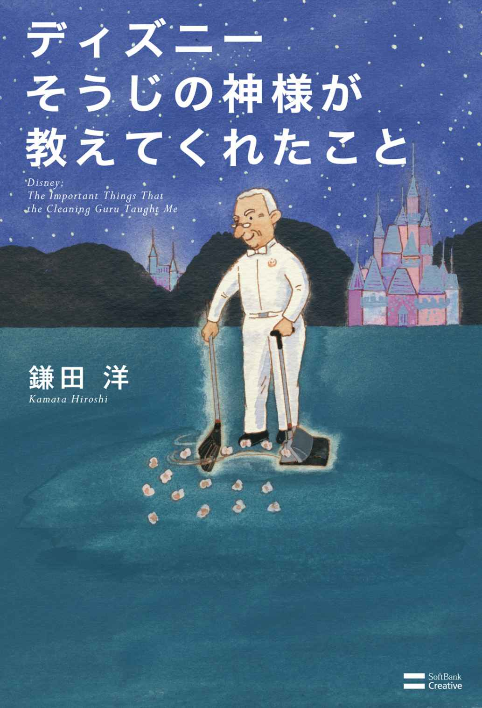
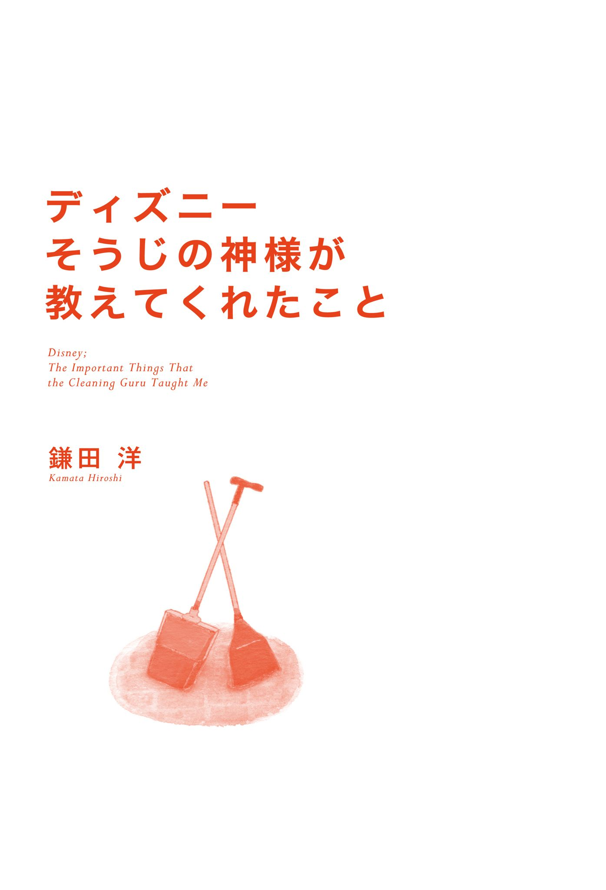
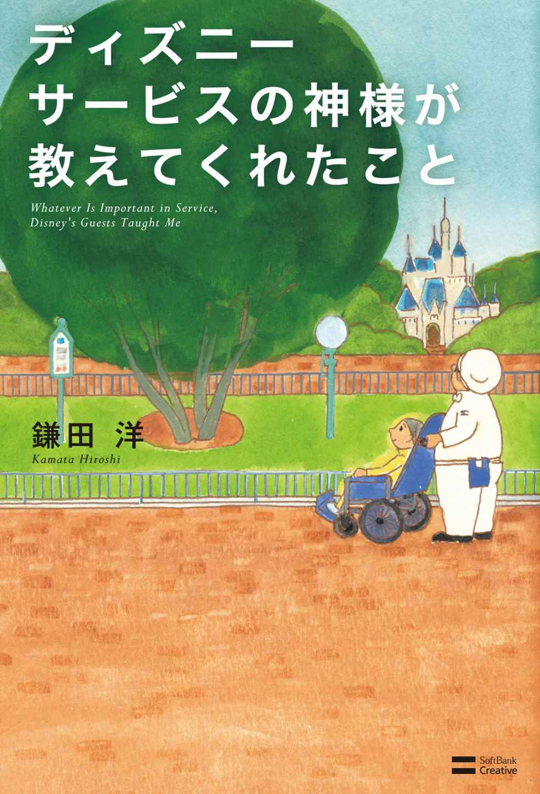
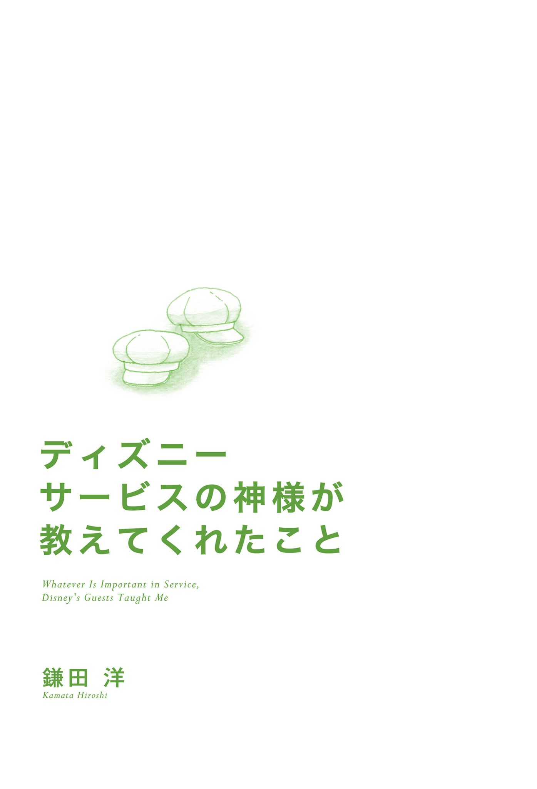
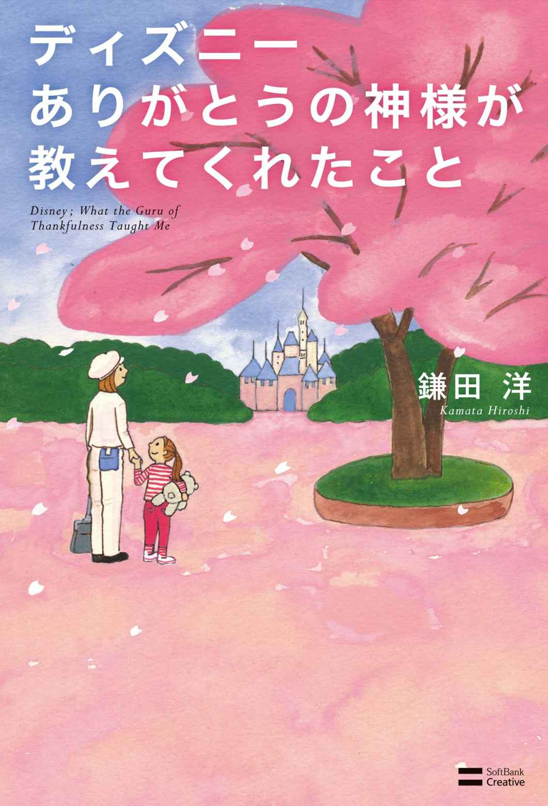
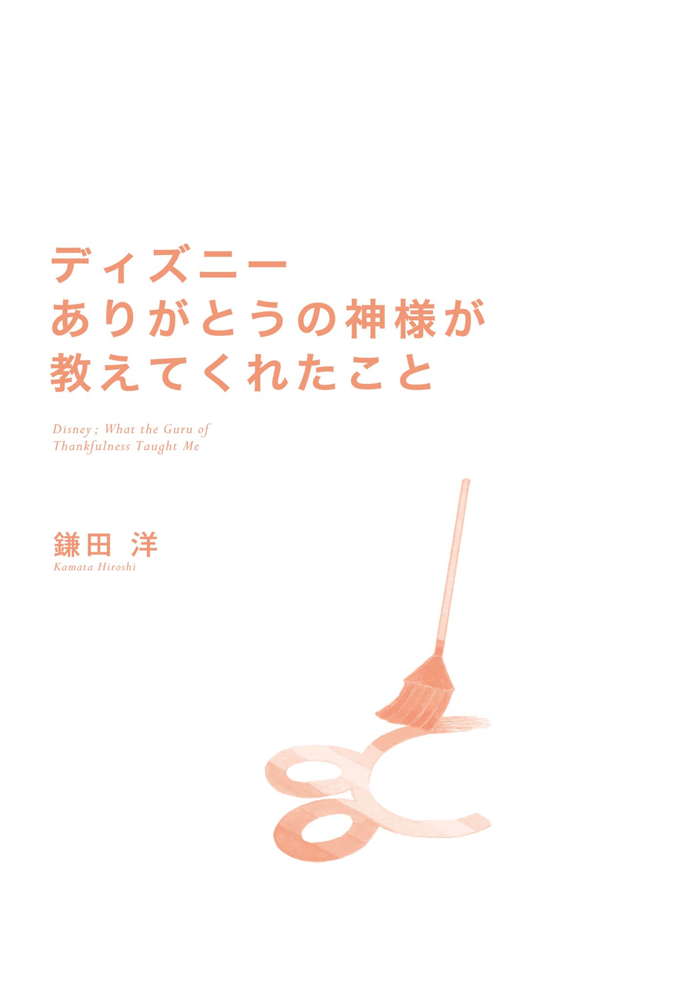
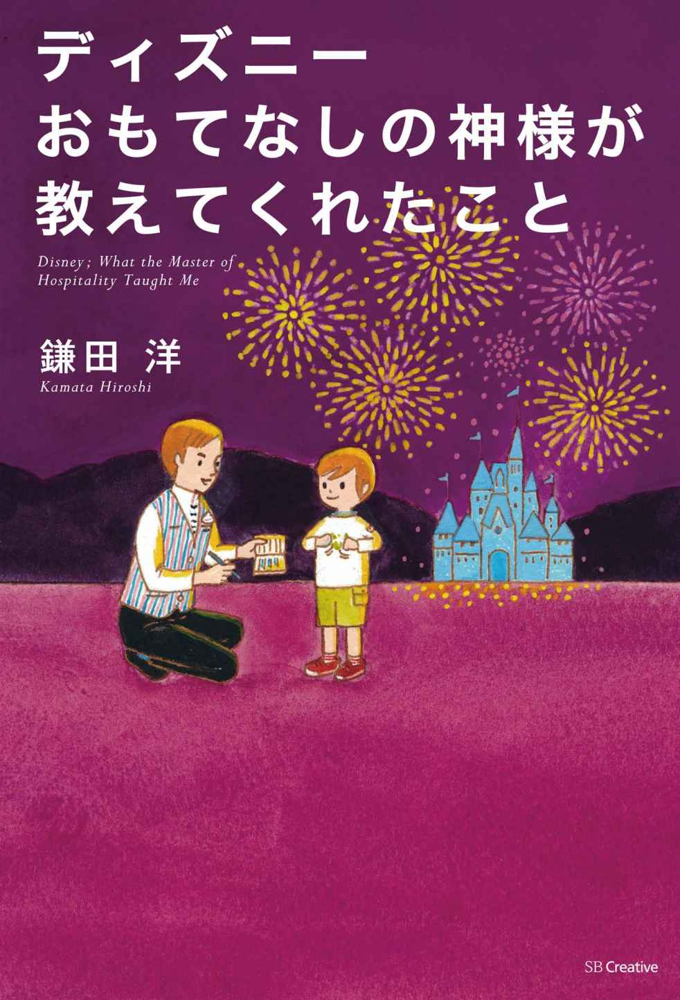
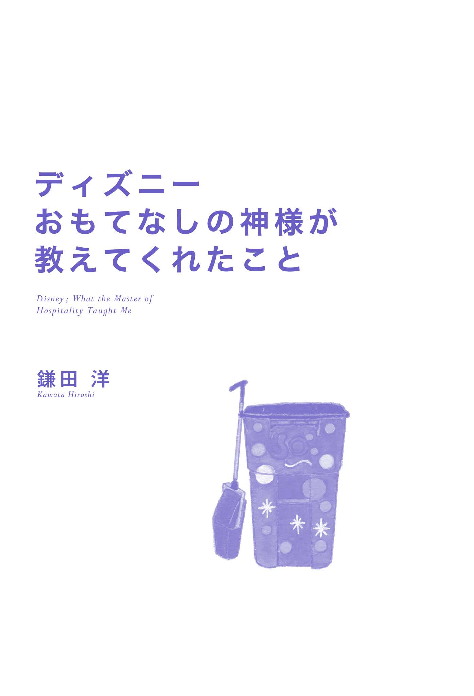
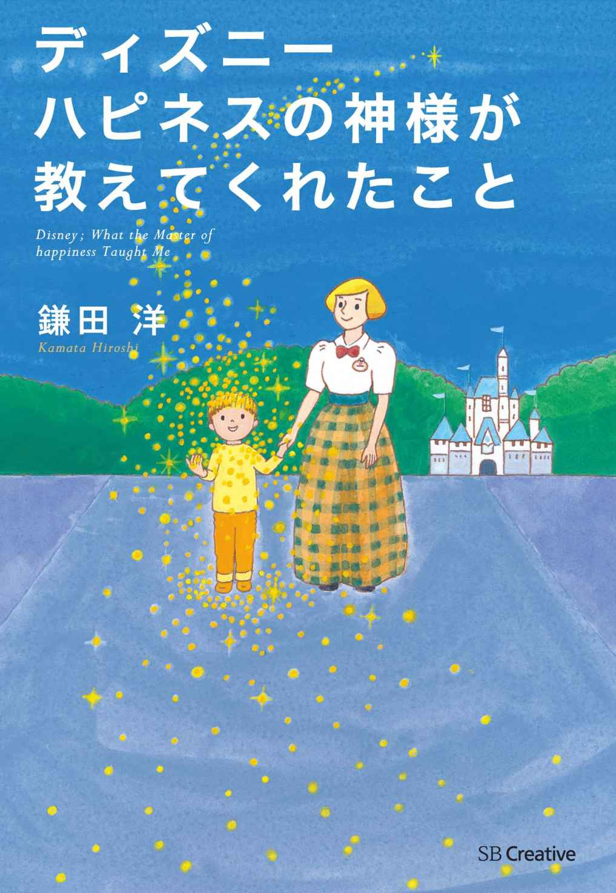
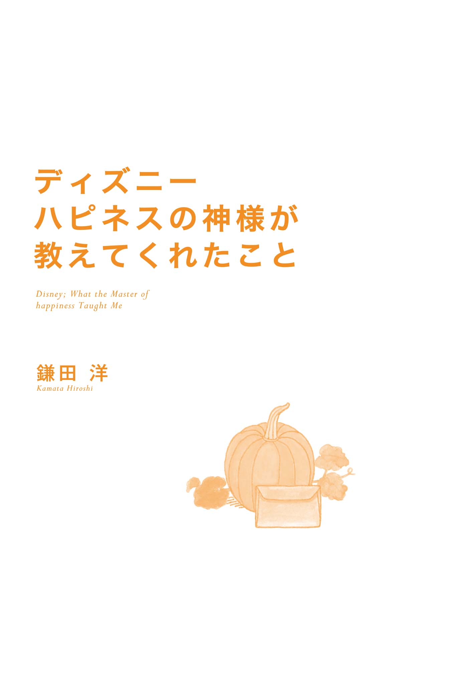

| 【限定版】『ディズニーの神様』シリーズ第1話集（全5作品） | |
| 鎌田 洋 | |
| (2015) | |
【限定版】『ディズニーの神様』
シリーズ第1話集（全5作品）
本書に掲載されているコンテンツの著作権は、著作権法により保護されています。
これらについて、著作権法で認められるもの、規約等により許諾が明示されているものを除き権利者に無断で転載・複製・翻訳・販売・貸与・印刷・データ配信（Ｗｅｂページへの転載など送信可能化を含む）・改ざん等する行為は、固く禁じられています。
この限定版は、ＳＢクリエイティブ刊、ディズニーの神様シリーズ５作品の各第１話を収録したものです。
２０１５年９月中旬発売（配信）予定のシリーズ最新作『ディズニー ハピネスの神様が教えてくれたこと』を含め、シリーズ累計80 万部を突破した前４作、『ディズニー そうじの神様が教えてくれたこと』『ディズニー サービスの神様が教えてくれたこと』『ディズニー ありがとうの神様が教えてくれたこと』『ディズニー おもてなしの神様が教えてくれたこと』すべての第１話を収録し、電子書籍版のみ提供しています。
各作品の印刷版、電子書籍製品版とは、一部異なる場合がございますので予めご了承ください。
目次
第２話 月夜のエンターティナー
第３話 魔法のポケット
第４話 夢の、その先
おわりに 感動の源泉、それはイノセンス
第２話 迷子の良心
第３話 色あせたチケット
第４話 希望のかけ橋
おわりに ハピネス！〝サービスの神様〟が届けたかったもの
第２話 真冬の桜ふぶき
第３話 絆の糸電話
おわりに 〝ありがとうの神様〟から託されたもの
はじめに ディズニーの、サービスを超えた「おもてなし」とは？
第２話 笑顔のスポットライト
第３話 世界にひとりの魔法使い
おわりに 私たちを本当に満たしてくれるもの
第２話 空飛ぶポスト
第３話 笑顔のダンスビート
おわりに ディズニーという名の人間愛


運命のパスポート
私には、今でも目を閉じると浮かんでくる、忘れられない光景があります。
28 年前の冬の日のことです。寒風吹きすさぶ、浦安の東京ディズニーランド建設現場にあった仮設事務所。ディズニーの一員になったばかりの私は、少しずつ空気が漏れていく浮き輪のような心もとなさを抱えながら、立ち尽くしていました。
「あこがれ続けた、あのディズニーで仕事ができる──」
５回目の挑戦でやっと採用された、その喜びが「夜の清掃部隊（ナイトカストーディアル）のトレーナー兼スーパーバイザー」への配属という現実の前に萎 んでいくのを感じていたのです。それは、一緒に配属になった仲間たちも同じでした。
私たちに渡されたのは、歓声に包まれた昼間の華やかな夢の世界へのパスポートではなく、ゲストはもちろんミッキーもミニーもいない沈黙の世界へのパスポート。
静まり返った深夜のパークを、黙々と掃除して回る。そう考えると、どうしても心から喜べない、清掃という仕事への抵抗感があったのです。加えて、それまでの私のキャリアは清掃の世界とはまったく縁がない、ど素人。仲間の中には、昼夜逆転の生活への不安を感じる人もいました。
これは、何かを試されているのだろうか......。
誰もが消化しきれない気持ちで、とまどっていました。
そこに現れたのが、本家アメリカのディズニーからやってきた初老の『そうじの神様』でした。数日後、彼は、私たちを仮設事務所のトイレに集合させました。遠巻きに彼を見つめる私たち。なにしろ、その場所は、誰もが足早に通り過ぎたくなるほど泥や汚れにまみれたトイレだったのです。
彼は、おもむろにゴム手袋をはめると、その魔境ともいえるトイレに向かっていきました。誰もが後ずさりして、顔を見合わせます。と、次の瞬間、彼はまるで我が子を抱きかかえるように便器を勢いよく磨き始めたのです。聞こえてくるのは、彼の息づかいとタワシがリズミカルに擦れあう音。長い年月をかけて生成された岩石のように、頑なに汚れがこびりついた床の側溝、変色した便器の縁。それが、彼の手によって、命を与えられたかのように輝きを取り戻していきます。
「これは、なんだ!? 」と、私は思いました。自分が見ているのは、今まで思っていたようなそうじとは違う。なにか、別の次元のものを見ているようでした。彼のそうじに目が釘付けになり、彼と同じように自分も手を動かしたくて仕方ない。そんな気持ちにさせられたのです。仲間の社員も、気が付けば身を乗り出さんばかりになっていました。
そして、すっかり、すべてのトイレがまばゆい輝きを取り戻したとき、彼は私たちに振り向き、初めてにっこりと微笑みました。その笑顔の向こう側で、あのディズニー創始者ウォルト・ディズニーも一緒に微笑んでいるように見えました。
そのとき感じた、なんともいえない爽快な気持ち。彼の清掃は、トイレの汚れだけではなく、私たちが持っていた、清掃という仕事に対する抵抗感や劣等感のようなものまで洗い流してくれたのです。
沈み込んでいた私たちのために、ファンタジーとも思えるそうじを見せてくれた人物の名前は、チャック・ボヤージン（Chuck Boyajian）。彼こそ、あのウォルトがこよなく信頼を寄せ、ディズニーの世界で『そうじの神様』と称えられた人物でした。
そのときは、まだ、彼が私の師となり、私の人生に大きな影響を与える、かけがえのない存在になるとは思ってもみません。しかし、私は、またしてもその瞬間から、彼によってディズニーの新たな魔法のとりこになってしまったのです。それも、一生消えないような魔法に。
私が最初にディズニーの魔法にかかったのは、生まれて初めての海外旅行で訪れたカリフォルニア、アナハイムのディズニーランドでした。「誰もが心ひとつになれる場所」「誰の心にもある子どもの心に出会える本物の場所」。そんな場所は、世界中探しても、ここにしかない。いつしか私は、その世界に自分も関わることを夢見ていました。そして、運命とも思える東京ディズニーランド進出の話に、仕事も何もかもなげうって無謀にも飛び乗ろうとしたのです。
それからの私を待っていたのは、これもまた信じられないようなことの連続。あまりにも強烈すぎて、それが夢だったのか現実だったのか、ときどき分からなくなることさえあります。本書は、そんな私が青春のすべてをかけたディズニーランドで体験したさまざまなエピソードを元にした「物語」です。
この本に出てくる私が直接教えを受け、ディズニーの世界で『そうじの神様』と称えられた、チャック・ボヤージン氏も実在した人物ですが、彼の言葉やエピソードの一部には「彼が無言で教えてくれたこと」等も付け加え、興趣を盛り上げる工夫をしています。いうなれば、この物語は、現実と夢が織りなすファンタジーノベルでもあります。
いわゆる、すぐに役に立つ「ディズニー本」とは、少々趣きが異なるかもしれません。なぜなら、この本では、みなさん自身が４つの物語の中に秘められたキャストたちの人間ドラマを通して、「ディズニーランドで働く人たちが放つ本物の輝き」を見つけ出してほしいからです。そう、パークの中で、あの「隠れミッキー」を探すときのように......。
騙されたと思って読んでみてください。私が、一生消えない魔法を授けられたように、一生大切にしたくなるような、ディズニーのそうじの世界に秘められた「仕事で人を幸せにするヒント」が見つかるかもしれません。
仕事や職場での人間関係が大変、今の仕事が自分の本当にやりたいことなのかどうか分からない......。そんな人にも、モヤモヤした気持ちをキレイにするきっかけになればと思います。
１９８３年１月４日、深夜0 時。ナイトカストーディアルとしての勤務初日。この日から、私にとっての「夢と冒険の世界」が幕を開けました。配属当初、何かを試されているように感じた、深夜のパークのそうじという仕事を通して、そうじの神様から教わったことは、その後の私の人生の宝物となりました。
今度は、その宝物である「仕事が夢と感動であふれる教え」を、私がみなさんにお届けする番です。
これから始まる物語は、そのためのプロローグ。ぜひ、気楽に読んでみてください。それでは、ディズニーの不思議なそうじの世界へ！
２０１１年９月
鎌田 洋
それは、絵に描いたような三日月が、空に浮かぶ夜だった。
ディズニーランドが開園されてから、３年ほど経った年の大晦日、ある清掃員の人生観を変える出来事が、夢のパーク内で起こった。
１９８６年、12
月10
日
その日、幹部からナイトカストーディアル（閉園後の深夜の清掃員）に対し、一つの指令が出された。
「大 晦 日 の終日営業（オールナイト）を決行するにあたり、ナイトカストーディアルにお願いがあります。大晦日の来場客数は、10 万人を超えるかもしれません。そのため、当日はナイトカストーディアルも、デイタイム（営業中の清掃）を手伝ってください」
ディズニーランドが開園され、初の大晦日の終日営業を迎えるにあたり、万全な対応策が下されたのだ。
清掃にこだわりを持つディズニーランドゆえ、１日限りのアルバイトを雇うより、熟知したキャスト（従業員）を配置することが、万全だと判断したのだろう。
その頃、夜間のスーパーバイザー（管理者）をしていた僕は、さっそくそのことをナイトカストーディアルたちに伝えた。
すると、一人の男性が、大晦日のデイタイムはどうしても勘弁してほしいと言う。
そのキャストは、皆川という40 代後半のワーキングリード（班長）であり、まじめが取り柄の男と言える。
他のキャストがシフトを変えてほしいと申し出た時など、自ら買って出るような人柄にもかかわらず、なぜ彼は大晦日のデイタイムを断ると言うのだろう。
申し送りを終え、僕は皆川に聞いてみた。
「皆川さん、できれば大晦日のデイタイムをお願いできませんか？」
「いや、それは......本当にすみません」
「正直、皆川さんに断られると、人数的に厳しいんですよ」
僕は、腰の低い皆川に対し、いつもに増して丁重にお願いしてみた。
すると、彼は意外な本心を語った。
「実は、お恥ずかしい話なのですが、大晦日は娘が彼氏と一緒にここに遊びに来るとかなんとか言ってまして......」
「娘さんは確か、『幸子』さんでしたね？ 彼氏がいるなんてすごいじゃないですか。でも、娘さんが来ることと、デイタイムの清掃に出られないことと、関係あるんですか？」
「はい。それは......僕が娘に噓をついているからです」
「噓？」
「ええ、清掃の実務をしていることを、娘には言ってないんです。娘には、金田さんのお立場である『スーパーバイザー』をしていると言ってあるものですから」
「なぜまたそんな噓を？」
「若いうちならまだしも、この年で清掃の仕事をしているというのは、ちょっと恥ずかしいと言うか......。娘に恥をかかせないためにも、職場が変わったことを機に、つい噓をついてしまったんです」
僕は、皆川の話を聞いて、少々がっかりした。
いたって仕事熱心な男が、このようなことを考えていたとは......。
他のキャストが嫌がる仕事でも、皆川は文句一つ言わず淡々とこなしていた。それなのに、胸の内では自分の仕事を恥ずかしいと思っていたのだ。
とはいえ、彼の言い分もわからなくはない。
清掃の仕事というのは、お世辞にも派手とは言えない。ましてや、夜間となればなおさらだ。しかし、家族に噓をついてまで職種をごまかすのは、決していいことではない。
いったい、皆川はどうしたら自信を持ってくれるのだろうか。
大晦日のデイタイムをやりたくない理由はわかったものの、それを認めることはできない。
僕は、心を鬼にして、彼にデイタイムの清掃を強く指示した。
──１週間前──
私の父は、長年清掃業を務めていた。
いや、正確には今も務めている。
まじめ人間と言っても過言ではない父は、ビルや学校など、さまざまな現場へ派遣されるたび、小さな賞状を貰 って帰ってきた。
幼かった私は、その賞状を友達に見せては自慢し、父の仕事を誇りに感じていた。
しかし、そんなまじめな父が、最近私に噓をついている。
今年の春、父の勤務先がディズニーランドになったと聞いた。
堅物な父にとって、華やかなディズニーランドは不向きではないかと、私は心配になり、父に聞いてみた。
すると父は、「大丈夫。人がにぎわう昼間ではなく、お父さんは夜間のスーパーバイザーになったから」と言った。
私は「スーパーバイザーって何？」と聞くと、「皆を管理する立場さ。そうじの実務の仕事は、もう卒業したんだ」と誇らしげに語っていた。
私は、父の仕事が何であれ、誰よりも真面目に取り組む姿勢を尊敬していた。でも、父が認められることは、この上なく嬉しい。
しかし、それが事実であれば。
そして父は、私に噓をついていた。
ディズニーランドでスーパーバイザーをしているというのは、真っ赤な噓だったのだ。
それが判明したのは、初秋にしては肌寒い夜だった。
製菓会社に勤めている私は、工場に送られてくる商品を確認するため、月に何度か帰宅が深夜となる。そして、その日も同じ部署の社員たちと、深夜まで確認作業をしていた。すると、ある女性社員から驚くべきことを耳にしたのだ。
「ねぇ、皆川さん。皆川さんのお父様ってディズニーランドにお勤めじゃない？」
「ええ、私の父はディズニーに勤めてますが......どうしてそれを？」
「私のいとこがね、お父様と同じナイトカストーディアルをしているの」
「ナイトカストーディアル？」
「ええ、深夜の清掃員よ。皆川さんのお父様と一緒にお弁当を食べた際、家族の話になったらしくてね、その時、娘さんがこの会社に勤めてるということを聞いて、いとこが私の知り合いじゃないかって聞いてきたの」
「そうだったんですか。でも、うちの父はスーパーバイザーとかいう管理者だそうで、たぶん人違いかと......」
「私もそうかなと思ったんだけど、夜のキャストで皆川という名前は、一人しかいないそうよ」
私は、どちらを信じたらいいのかわからなくなった。
まじめな父が噓をついているとは思えない。しかし、その女性も信頼できる社員の一人である。私より３つ年上なのだが、おごるような態度は一切見せたことがないし、何より入社したての私に、仕事を手取り足取り教えてくれた誠実な先輩なのだ。
私は、モヤモヤした気持ちを抱えたまま最終電車に乗り、家路についた。
父の勤務時間は、閉館後、深夜０時から朝８時のため、働いている姿を確認することはできない。もし、父が私を騙しているとしたら、いったい何のため？
家に着くと、門灯以外の電気は消されており、既に母は就寝した様子だった。夜勤の父も、とうに家を出ている。
私は、母が用意しておいてくれた夜食を済ませ、自分の部屋へ行った。
スーツを来たままベッドに横たわり、父のことについてもう一度考えた。
よく考えると、本当はどちらでもいい。父の仕事が管理者だろうと、清掃の仕事だろうと......。ただ、噓をつかれているというところが気にかかる。
私は一人娘だからかもしれないが、幼い頃は父にとても可愛がってもらい、いろんな所にも連れていってもらった。こっそりと職場へ連れていってくれたこともあり、幼かった私はピカピカになった磨きたての床で、スケートの真似をしたりした。
しかし、私が大人になるにつれて、会話する機会も減り、向き合ってご飯を食べることも少なくなった。
でも、信頼している気持ちは、変わっていない。言葉はぶっきらぼうだけど、まじめで優しい父を尊敬する気持ちも、変わらない。それなのに、父はなぜ私を騙しているのだろうか？ 裏切られたような、複雑な気持ちを感じたまま、私は眠りについた。
翌日、仕事が休みだった私は、昼過ぎまで寝てしまった。スーツのまま寝ていたため、部屋着に着替え、リビングへ行った。
すると、父も休みだったらしく、ソファーでゆったりと新聞を読んでいる。
私は、冷たい麦茶をコップに注いで一気に飲むと、父と向き合う側のソファーに腰かけ、探るように話しかけた。
「お父さん、おはよう」
「ああ、おはよう幸子。ずいぶんぐっすり寝てたんだな」
「うん。ちょっと疲れててね。ねぇ、お父さん、深夜のディズニーランドって、どんな感じ？」
「そりゃあ楽しいよ。入っちゃいけない所を冒険してるみたいな感覚かな」
「そうなんだ。でも、前にやってたそうじの仕事は、行き交う人と会話できて楽しいって言ってたよね。今はそういう触れ合いがなくて、少し寂しいんじゃない？」
私は、少々わざとらしかったかな......と、父の顔色をうかがいつつ、返事を待った。
すると、父は読んでいた新聞を二つにたたみ、机の上に置いた。
そして少年のような表情で「いや、それがね」と、とても楽しそうに仕事の話を始めたのだ。
ディズニーランドでは、従業員のことを「キャスト」と呼び、お客様のことを「ゲスト」と呼ぶことや、制服のことを「コスチューム」と言ったり、すべて舞台用語で統一されているということを教えてくれた。私は、引き込まれるように、父の話を聞いた。
やっぱり、父が噓をつくはずなどない。
笑顔で語る父を見ているうち、私はそう思えてきた。
そして、一番興味深かったのは、夜間勤務の人たちが、あるノートを通じてゲストの声を聞くことができるという話だった。
そのノートとは、ウエスタンランドにある３階建ての蒸気船「マークトウェイン号」の一番上の操 舵 室 にある、ゲスト用のノートだという。ゲストは、そこに思ったことや感じたことを、書き記すそうな。
私は、その蒸気船に置いてあるノートを、見てみたくなった。
「じゃあ、大晦日に私もマークトウェイン号行ってみるね」
「大晦日？」
「うん。大晦日にね、私ディズニーランドに行くの」
「そうかい、楽しんでおいで。それで、誰と行くんだい？」
私は、しまった......と思った。
大晦日、ディズニーランドへ一緒に行くのは、２年前から付き合っている彼なのだ。
しかし、父にはまだ彼のことを話していない。入社して半年が過ぎた頃、彼から「結婚を前提に付き合ってほしい」と言われ、私は二つ返事で承諾した。入社した頃から、私も密かに想いを寄せていたため、彼からの告白は本当に嬉しかった。
その喜びを一人でとどめておくことができず、帰宅後母に報告した。すると母は、「よかったわね。その人のこと大切にするのよ」と共に喜んでくれた。
しかし、父にはなんとなく言いづらく、母に、「お父さんには黙っててほしい」とお願いしていた。
そのまま２年が過ぎていたものの、先日、彼にそろそろ家族を紹介してほしいと言われたのだ。
いっそ、この機会に話してみようか。もしかしたら、勢いで会ってくれると言うかもしれない。それに、そもそも父に反対される理由などない。彼は誠実な人だし、会えばきっと気にいるだろう。
私は、思い切って彼のことを父に話すことにした。
「実はね......私、お付き合いしてる人がいるの。大晦日は、その人と一緒に行くことになってるんだ」
「......！」
「同じ会社の人なんだけど、結婚を前提に付き合ってほしいって言われて......。でね、彼がお父さんとお母さんにご挨拶したいって言ってるんだけど、会ってもらえないかな。年内はやっぱり忙しい？」
「いや、お父さんは......いい」
「え？」
「お父さんは、会わなくていいよ」
「どうして？ 私がどんな人と付き合ってるか気にならないの？」
「いや、そうじゃないけど、お父さんはとにかく会わない」
そう言うと、父はすっと立ち上がり、寝室へ行ってしまった。
私は、再び父が何を考えているのかわからなくなった。
＊
１９８６年、12
月17
日
１週間前、ひと回り年下のスーパーバイザーの金田に、大晦日はデイタイムを務めるよう命じられた。
業務命令と言われたら、逆らうわけにはいかない。年下とはいえ、立場的に上司である以上、逆らえないのが現実だ。
こんな時、僕が本当にスーパーバイザーだったら......と、何度思ったことか。
そうすれば、もっとやりがいを感じることだってできるのに。
それより、今は幸子についてしまった噓を、どうごまかすか......ということだ。
よりにもよって、大晦日に来るとは、なんて運が悪いんだろう。
あの日、幸子がやけに話しかけてきたのは、初めから彼氏のことを切り出すつもりだったからだろうか。
僕の話を親身に聞いてくれているかと思いきや、それはきっと、単にきっかけ作りだったのだ。そう思うと、なんだか悲しくなってくる。娘を持つ父親は、誰もが感じたことのある感情なのだろうけど。
とはいえ、幸子が男と交際していることに、反対するつもりはない。
もう親がどうこう口を出す年でもないし、何より、そういう相手がいるということを、僕は知っていた。
数カ月前、幸子が母親とそれらしい話をしているのを、偶然聞いてしまったのだ。
しかし、それについて僕に話してくる気配は一向になかった。
幸子は、付き合っている人がいることを、なぜ僕に隠していたのだろう。
「お父さん お父さん」と、何でも話してくれた時代は、もう戻ってこないのだろうか。あの子が社会人となった今、学校の月謝を払ってやることもなければ、服を買ってやることもない。父親としての役割は、もう果たし終わってしまったのだろうか。
それにしても、もしパーク内で幸子たちにバッタリ会ってしまったら......。
「そうじの仕事は卒業した」と、胸を張ってしまった手前、今更どんな顔をして「実は噓だった」と言えばいいのだ。
ましてや、ほうきとチリトリを持った姿で、幸子の相手に「はじめまして。娘をよろしくお願いします」と挨拶を交わすなんて、想像しただけでも自分が嫌になる。
僕は、コスチュームに着替えながら、自問自答していた。
すると、スーパーバイザーの金田が近寄ってきた。
「皆川さん、大晦日のことですけど......」
同情でも何でもいい。とにかくデイタイムの業務を勘弁してもらえないだろうか。僕は、かすかな望みをかけ、金田の話を聞いた。
「当日の担当エリアについてですが、いつも通りウエスタンランド付近でお願いしますね」
「え、ええ。あの......できれば、担当エリアをパークの外にしてもらえませんか？」
「パークの外ですか？」
「はい......」
「それはちょっと難しいですよ。娘さんに見つかりたくないお気持ちはわかりますが、初めてのデイタイムで、ゲストの対応もありますし、できるだけ慣れたエリアを担当されるほうがいいと思いますよ」
そう言うと、金田は申し送りを始めた。
幸子がまだ小さかった頃は、この仕事に対して誇りを持っていた。自分が働くことで、家族を養っているんだ......と。
それだけじゃない。綺麗にした床を、カツンカツンと音を立てて歩く人々を見ることが、快感にすら感じた。しかし、娘の成長と共に、その誇りがなんだか小さなことに感じてきた。仕事なんて、父親なんて、こんなものだ......と。
何をもがいても、噓をついてしまったという事実は、変えられない。
いっそ、「またそうじになっちゃったよ」と、軽く話してみようか。案外、何てことのない返事によって、すべてが丸く収まるかもしれない。いや、それよりも大晦日当日、幸子たちに見つからないよう、どうにか乗り切ればいい。この広いディズニーランドで、ばったり鉢合わせしてしまうほうが奇跡だろう。
＊
１９８６年、12
月23
日
あれから３週間が経ち、私は仕事の忙しさに追われ、父が噓をついているかどうかなど、忘れつつあった。
それよりも、彼との交際を勢いで伝えてしまったことを、私はずっと後悔している。
どうしたら、父は彼に会ってくれるのか、それとも、そもそも会う気がないのか、私は帰りの電車の中でいろいろと考えた。
今度は勢いじゃなく、ちゃんと時間を作って父にお願いしようと思うものの、なかなかタイミングが摑めない。
彼には、「もう少し時間がかかりそう」ということと同時に、父が仕事を偽っているかもしれないことを話した。すると、「どんな職種だろうと、さっちゃんのお父さんに変わりはないよ。わざわざ確認するようなことは、しなくてもいいんじゃないかな」と、穏やかに答えてくれた。
彼の言葉に救われたものの、やはりモヤモヤとした気持ちは晴れない。
そうこう考えながら、私は家路についた。
玄関の前まで行くと、ドアが開き、お弁当を持った母が出てきた。
「ただいま、お母さん」
「あら、おかえり、さっちゃん」
「それ、お父さんのお弁当？」
「そう、せっかく作ったのに、忘れて行っちゃったみたい」
腕時計を見ると、午後10 時を少し回っていた。
その時、同じ部署の先輩が言っていた言葉を、ふと思い出した。
父自身はスーパーバイザーをしていると言い、先輩は父をナイトカストーディアルキャストだと言っている。
ここからディズニーまでは、車で30 分もかからない。
これは、もしかしたら真実を知るチャンスかもしれない......と、私は思った。
「お母さん、それ私が届けようか？」
「え？ わざわざいいわよ」
「でも、お母さん今届けようとしてたんでしょう？」
「まぁ......でも、やっぱりいいわ。お父さんだって子供じゃないんだし、食堂もあるって言ってたから」
「本当は......、お父さんが私に噓をついてるから、それでお弁当を届けなくていいって思ってるんじゃない？ お母さん」
「......」
「お父さん、本当はスーパーバイザーじゃなくて、清掃の仕事をしてるんでしょう？」
「さっちゃん......知ってたの？」
「なんでお父さんは私を騙しているの？」
「騙すだなんて、そんなんじゃないわ」
「だって噓をついているってことは、騙していることと同じでしょう？」
「違うわ、違うのよ、さっちゃん」
私と母は、家の中に入った。
母が紅茶を入れてくれている間に、私は部屋で着替えを済まし、リビングへ行った。
スーパーで売っている安物の紅茶ではあるが、高ぶってしまった気持ちを和らげるには、丁度いい香りの強さである。
私は、ダージリンの紅茶に砂糖を２杯入れ、一口飲んでカップを置いた。
すると、母がそっと話し始めた。
「さっちゃん」
「ん？」
「お父さんが噓ついたこと、怒ってる？」
「怒ってるっていうか......いい気はしてないけど」
「そうよね、噓をつくことは決していいことじゃないわよね。でも、さっちゃんももう立派な大人だし、だからこそ、噓をついてしまったお父さんを、許してあげてほしいの」
「許すだなんて......私は別にお父さんを憎んでるわけじゃないけど、ただなぜ噓をついたのか、理由を知りたいだけなの」
すると母は、カップを包むように持ったまま、話を続けた。
「さっちゃん、小６の時、お母さんと一緒にお父さんの職場に行ったの覚えてる？」
「お母さんと一緒に？」
「そう。新潟の叔母さんの結婚式に着ていく服を買いに、デパートへ行ったでしょう？ その時、帰りにお父さんの職場へ行って、二人で驚かそうって」
「ああ、あの時......うん、覚えてる」
「あの時お父さんが清掃してたビル、すごく大きかったわよね」
「うん、そうだったね。どこかの商社で、大勢のサラリーマンが行き交ってたのを覚えてる」
「そう、そのサラリーマンの人たちを見たさっちゃんがね、『お父さんもああいう格好してほしいな』って言ったの」
「私が？ そんなの、全然覚えてない......」
「その時のお父さん、聞いてない振りしてたけど、自分の足元をずっと見てたのよ」
「足元を？」
「お父さんの足元ね、白いはずの裾 が、飛び散ったワックスや汚れた水で、灰色になってたから......」
「そんな、私、悪気があったわけじゃ......」
「わかってるわ、あなたを責めてるわけじゃないの。ただ、お父さんが噓をついてしまった気持ちを、理解してほしいだけなの」
「私、お父さんの仕事を恥ずかしいなんて思ったことないわ。それどころか、真面目な姿を誇らしいと思ってた」
「ええ、それもわかってるわ。でも、お父さんにとってあの時のことは、心のどこかにずっと引っかかってるの。言われた言葉は覚えてないかもしれないけど、無意識の中で自分の仕事に引け目を感じる気持ちが、埋め込まれているというか」
「お父さん、傷ついたままなのかな......」
「傷つくというより、さっちゃんに対して申し訳ないと思う気持ちのほうが、大きいかもしれないわ。だから、自分を格好良く見せようと思って噓をついたわけじゃなく、さっちゃんを喜ばせたくてついた噓でもあるってことを、わかってあげてほしいの」
「......」
「さっちゃん、お父さんの夢を知ってる？」
「夢？」
「そう、夢。お父さんの夢は、出世することでも、お金をたくさん稼ぐことでもなくて、さっちゃんを幸せにすることが、お父さんの一番の夢なのよ。平凡かもしれないけど、それで『幸子』って名前を付けてくれたの」
私は、自分が恥ずかしくなった。
父は、私を騙していたわけじゃない。
私が、父に噓をつかせてしまったんだ。
もしかすると、父は噓ついたことを後悔しているかもしれない。その心苦しさを、どうすれば取り除くことができるだろうか。
父が本当のことを言い出せるよう、私はどうすればいいのだろうか。
その時、私はある方法を思いついた。
＊
１９８６年、12
月31
日。大晦日
ディズニーランド開園初の、終日営業当日。
とうとう、幸子に本当のことを言えないまま、大晦日を迎えてしまった。
どうか、無事見つからないよう、一日が終わりますように......と願い、持ち場についた。
初めてのデイタイムは、閉園後のパークとは打って変わって華やかだった。
ミッキーマウスやドナルドダックと一緒に写真を撮っている家族連れや、カメラを首から下げた若者たち、地図を開きながらパークを回るカップルたち、それは想像を超える賑わいだった。
何より、ゲストが気楽に話しかけてきてくれる。
ディズニーランドの清掃員は、ゲストにとって一番近い存在なのかもしれない。
普段ナイトカストーディアルをしているキャストたちも、みんな楽しそうにコミュニケーションを取っている。
そして、僕は幸子に見つからないよう帽子を深くかぶり、仕事を続けた。
ウエスタンランドのレトロな時計の針が、まさに午前０時を指そうとする頃、１本の無線が入った。
それは、ゲストがこの広いパークで、指輪をなくしたという連絡だった。
そして、各ラウンドから２名ずつ集められ、たったの10 人で指輪の捜索が始まった。
僕もその捜索をすることとなり、なくしたと思われるパーク内のゴミ箱すべてはもちろんのこと、トゥモローランドの地下にあるゴミ集積所など、ありとあらゆる所を手分けして捜した。
そして捜しつづけ、３時間が経った頃、金田が僕のところへ来た。
「皆川さん、どうですか？ それらしいものはありませんか？」
「無理ですよ、どこで落としたかもわからない指輪を、どう捜せというんですか」
「まぁまぁ、気持ちはわかりますが、もう少し捜してみましょう。それに、とても大切な指輪だそうで」
「大切な指輪？」
「ええ、婚約指輪だとか」
「そうですか。それは落とした人も悔しい思いをしているでしょうが、この広いパークで指輪を一つ見つけ出すなんて、不可能な話ですよ」
「そうは言っても、ディズニーランドは夢の国です。夢から覚めた時、あるべきものがないのは不自然ですよね？ だから、夢の国での落とし物は、徹底的に捜すんです」
「金田さん、そこまでする必要があるんですか？ そんな大切なもの、なくすほうが悪いんですよ。僕はもう限界だと思います」
「皆川さん、あきらめた時が限界なんです」
「......！」
「僕は〝そうじの神様〟からあることを教えられました」
「そうじの神様？」
「はい、ウォルト・ディズニーがこよなく信頼していたカストーディアルの初代マネージャー、チャック・ボヤージンさんです。東京ディズニーランドが開設される時、清掃の指導に来ていたチャックさんは、こう言いました。
『ダメだと思っても、信じる心を共有することで、限界を超せる時がある』......と」
僕は、その言葉を聞いてハッとさせられた。
思い返せば、いつも自分で限界を決めていた気がする。ここまでやったのだから、もう充分だろう。ここまでやれば、褒めてもらえるだろう......と。
幸子に対してもそうだ。
もう社会人になったのだから、父親としての役割は終わった......と。だから、幸子と心を開いて話すことがなくても、しょうがないことなんだと、都合のいい言い訳ばかり考えていた。
何に対しても、限界を決めずに取り組むことで、本当の自分らしさを見つけることができるのかもしれない。
いや、新たに見つけるのではなく、取り戻すんだ。昔抱いていた仕事への誇りを、今なら取り戻せるのかも......。
それこそ、この広いパークで小さな指輪を見つけることができたら、幸子に胸を張って、「お父さんの仕事は、本当は清掃員なんだよ」と、言える自分になれるかもしれない。
もし指輪が見つからなかったとしても、金田が言うように信じる心を共有することで、後悔のない仕事ができるはずだ。
娘に噓をつくような人生を送らないためにも、僕は今、限界を超えてみせる。
そう自分に誓い、深くかぶっていた帽子をちゃんとかぶり直し、指輪の捜索を続けた。
捜索を始めて５時間が過ぎようという頃、空が白んできた。
もう捜すところがないのでは......という程、くまなく捜した。
その時、背後から船の汽笛が聞こえた。
それは、３階建ての蒸気船、マークトウェイン号だった。深夜のマークトウェイン号は、当たり前だが誰も乗っていない。だから、たくさんの乗客を乗せたマークトウェイン号は、なんだか生き生きとして見えた。
（そうだ、もしかしたら船の上という可能性も......）
乗客を入れ替えるわずかな時間に、僕は賭けてみようと思った。
そして船が岸に着くと、僕は一目散に乗り込んだ。
辺りが完全に明るくなってしまうタイムリミットまで、あとわずか。懐中電灯を片手に最上階まで駆け上り、デッキの隅々まで見渡した。
すると、アメリカの旗が並ぶデッキの隅に、きらりと光る小さなものを見つけた。
即座に近づいて手に取ると、それは指輪だった。しっかりと重量感のある、おもちゃではない正真正銘の指輪だ。
僕は、さっそく無線で金田に連絡を入れた。
指輪の特徴を伝えると、それは落とし主の言っている特徴と、ほぼ同じだった。
指輪をハンカチでそっと包み、階段を下りようとした時、ふと操舵室にあるノートが目についた。
ゲストがその日の感想や思ったことを綴 るノートである。
そして、幸子が言っていたことを思い出した。
『じゃあ、大晦日に私もマークトウェイン号行ってみるね』
大切な人と一緒に、あの子はもうこの船に乗っただろうか。
初めての深夜のディズニーランド、あの子は楽しんでいるだろうか。
さっきまでは、幸子に見つからないよう帽子を深くかぶり、ビクビクするばかりで、あの子が楽しんでいるかどうかなど、考える余裕は一切なかった。
僕は、ふとノートを開いた。
すると、開いたページを見て、僕は全身の力が抜けた。
『お父さんの白いコスチューム姿が、一番好き。幸子より』
これは......間違いない、幸子の字だ。
幼い頃から、文字が少しだけ右上に傾いている、幸子の字だ。
白いコスチューム姿......？
あの子は、僕が清掃員であることを知っているというのか？
もしかして、これは僕に対するメッセージではないだろうか。噓をついている僕に、真実を語るきっかけを、あの子は作ってくれたのではないだろうか。
幸子は、昔から明るくて優しい子だった。
幼い頃、こっそりと現場に連れていった時も、ピカピカになった床の上で、無邪気にはしゃぐ姿が、この上なく愛しかった。
僕は、この指輪に感謝した。
最後まであきらめず、本気で捜し抜いたことにより、神様がここに導いてくれたのかもしれない。
限界なんて、自分で決めるものじゃない。
ましてや、誰かに決められることでもない。
そんな風にさえ思えた。
そして僕はノートを置き、マークトウェイン号を降りると、金田が待っていた。
金田は「ご苦労さま」と言って、僕の手を強く握りしめた。そして僕も、握り返した。
僕らは、指輪の持ち主の元へ、足早に向かった。
指輪の落とし主は、意外にも若い男性だった。落とした指輪は、これから渡す婚約指輪だと言う。
男性は大層喜び、何度も何度も礼を言ってきた。
その顔を見たら、捜している時の苦労など吹っ飛ぶ気持ちになった。
そして、男性はこう言った。
「今日の夜、ここでプロポーズしようって決めてたんです。直接指にはめてあげたくて、箱から出しておいたものの、いつの間にか落としてしまったようで......」
一世一代の瞬間を無駄にしなくて良かったと、僕は心の底から思った。
そして、こみ上げる思いを伝えた。
「うまくいくといいね」
男性は、満面の笑顔で「はい！」と言い、指輪をちゃんと箱にしまった。
こんなにも、仕事に対してやりがいを感じたことが、今まであっただろうか。
僕は、金田が言っていた言葉を思い出した。
『ダメだと思っても、信じる心を共有することで、限界を超せる時がある』
まさに、今がその瞬間なのだと確信した。
共に指輪を捜すキャスト、そして落としてしまったゲスト、皆が信じる気持ちを共有することで、この指輪に出合うことができた。僕は、この感動を生涯忘れることはないだろう。
すると、背後から誰かに呼ばれたような気がした。
ふと振り返ると、そこにはいつもよりめかしこんだ幸子が立っていた。
「お父......さん？」
すると、指輪の箱をポケットにしまった男性が、幸子に向かって「さっちゃん」と言った。
どうやら、僕は幸子より先に、幸子がもらうはずの指輪を手にしたようだ。
偶然が生んだ奇跡に、心から感謝した。
そして、幸子に伝えないとならないことがあることを思い出した。軽く深呼吸し、幸子の瞳をまっすぐ見て言った。
「ノート読んだよ」
「......そっか。あそこに書いておけば、いつか絶対読んでもらえると思って。ほら、この間のお休みの日、夜勤の人とゲストのコミュニケーションは、マークトウェイン号に置いてあるノートなんだって言ってたから......」
「幸子は、お父さんの話なんかちゃんと聞いてないと思ってた」
「そんなことないわ。私は、昔からお父さんの話を聞くのが結構好きだったのよ」
「そっか、ごめんごめん」
「ううん、謝らなきゃならないのは私のほうよ。お父さん......ごめんなさい」
「なんで幸子が謝るのさ。謝らなきゃいけないのは、お父さんのほうだよ」
「ううん、私よ」
僕は、一番大切なことを思い出した。
それは、幸子を幸せにするという「夢」だ。
いつの日か、夢を持っていたことすら忘れていた。自分に自信が持てなくなっていたことを、仕事のせいにしたり、娘の成長のせいにするばかりで、自分にとって一番大切なことが何か見失っていた。
限界を超え、指輪を見つけ出した瞬間、僕はその夢に一歩近づけたのだ。
幸子にとって、かけがえのないものとなる指輪を、失わずにすんだ。
それから、キラキラとした彼の瞳に向かって、こう聞いた。
「これからは、君が幸子を幸せにしてやってくれるかい？」
すると彼は姿勢を正して、深く頷いた。
そして、いつの日か幸子に言おうと思っていた言葉を、僕は心の底から伝えた。
「幸子」
「なぁに？ お父さん」
「幸せになるんだよ」
幸子は、涙を浮かべながら何度も頷いた。
僕は今、この白いコスチューム姿を誇りに思う。
そして、幸子の歩む新たな人生と幸せを、これからも願い続けようと、心に誓った。
１９８７年、１月４日。
東京ディズニーランド初の大晦日は、想像以上に大盛況だった。
デイタイムの清掃を拒んでいた皆川も、あの日を境に仕事に対する考え方が変わったように見える。
清掃の仕事に対する劣等感が払 拭 され、今は仕事を楽しみながら、そして使命感を持って勤めている。
何かを極めるということは、限界を決めずに取り組むことなのかもしれない。
今回のことを通じて、僕自身改めて恩師の言葉を思い出すことができた。
『ダメだと思っても、信じる心を共有することで、限界を超せる時がある』
僕は、その言葉を再び心に刻み、いつも通り深夜のパークを巡回した。
すると、ミッキーマウスレビューに入ると、動物のうめき声のような、何か異様な音が聞こえてきた。
音の鳴る方へ行ってみると、そこには目を疑う光景が待ち受けていた。
【第２話へ続く】
※現在、マークトウェイン号にゲスト用のノートは設置されておりません。


その時、〝サービスの神様〟があらわれた
夢の国の時計が止まった──。
２０１１年３月11 日、14 時46 分。
あの日。
誰もが経験したことのない出来事に、多くの人々が翻 弄 された。
夢の国、東京ディズニーリゾートも例外ではなかった。
大震災当日の入園者は、東京ディズニーランド、東京ディズニー・シー合わせて７万人。帰宅困難になりパーク内に留まったのは２万人。
パークの中はいつもの歓声が消え、余震のたびに緊張感とざわめきに包まれた。
閉園時間になってしまったら、どうしよう。泣きそうな声も聞こえてきた。
けれども、パークの灯は消えなかった。
日が暮れていく頃には、ゲストの心の中にほのかな希望と安心が灯っていたのだ。
その灯りを点したのは、パークで働く１万人のキャストたち。
ある女性キャストは、とっさにダッフィーのぬいぐるみを親子連れに手渡した。
「これで、頭を守ってください！」
ある男性キャストは、ショップで販売するグッズが入ったダンボールやゴミ袋をかき集め、配り歩く。ふだんは絶対にゲストの目に触れさせないものだ。
「これを被
って寒さをしのいでください！」
別の女性キャストは、交通機関が止まり、陸の孤島に取り残されたゲストにショップのお菓子を笑顔で配ってまわった。
震えそうな気温の中、キャストの笑顔に救われたゲストも少なくなかった。
レストランでは、テーブルの下に避難して泣いている女の子の肩をキャラクターたちがやさしくポンポンと叩いて励ます。
時間を忘れてゲストに寄り添うキャストやキャラクターたち。
自らも家が被災したり、被災地に家族や友人がいるキャストもいただろう。それでも、彼らは目の前のゲストを守りきることに全身全霊をかけた。
すべてはゲストのために──。
あのパニックの中、赤ちゃんから子どもたち、お年寄りの方までが集う、これほどの規模の施設で大きな混乱や負傷者もなかったというのは、1 つの奇跡。
その様子を人づてに知った人たちから、いつしか震災当日のディズニーの〝想像を超えたゲスト対応〟が広がっていった。
キャストたちが行ったゲストのための行動は、どれも緊急時の行動基準を理解したうえで、それぞれ自分の判断で工夫していたということが、さらに人々の心を動かした。
しかし、気づかれなかったこともあった。
それは、「心を動かす何か」がゲストとキャストの間で生まれたとき、そこには必ず、ディズニーランドの〝サービスの神様〟があらわれるということだ。
さて、こうしたディズニーランドのキャストたちの、〝想像を超えるゲスト対応〟はいかにして生まれるのか。
そして〝サービスの神様〟の正体とは、いったい何なのか──。
これから始まる物語は、みなさんを、これまで見たことも、聞いたこともないディズニーの「サービスの神様」の世界にお連れします。
本書は、東京ディズニーランドの初代ナイトカストーディアル（夜間の清掃部門）・スーパーバイザーとして、ディズニーのクオリティサービスを実践し、その後、ディズニー・ユニバーシティ（教育部門）にて全スタッフの育成指導に携わった私の体験を元にした「おもてなし」にまつわる不思議な物語です。
前作『ディズニーそうじの神様が教えてくれたこと』では明かされなかった、リピート率９割以上を誇る「ディズニーランドのサービスの秘密」が解き明かされていきます。
日本でいちばん顧客満足度が高いと言われる「東京ディズニーランド」。
パークを訪れたことのある人なら、誰もが〝ディズニー〟という言葉を見聞きしただけで、なんだか心が浮き立つような、そして温かい気持ちに包まれるような不思議な感覚を覚えるでしょう。
けれども、それが「なぜ」なのか。
その秘密を解き明かした人は、ほとんどいません。キャストやキャラクターたちのもてなしと笑顔。そしてアトラクションやパークの隅々にまで行き渡っているゲストを楽しませる仕掛け。
そういった「サービス」の一つひとつが、事細かく記された分厚いマニュアルがあるのだろうと信じている人も多いかもしれません。
ところが、ディズニーランドでは「実務的なオペレーションのマニュアル」や、すべての考え方や行動の基本となる「哲学（ディズニー・フィロソフィー）」は存在しても、こんなサービスでゲストを喜ばせなさい、という「おもてなしノウハウ集」をキャストが持ち歩いているわけではないのです。
では、いったい、何がディズニーランドの、あの何度も訪れたくなるような「夢と魔法の世界」を創り出しているのでしょうか。実は......。
ディズニーランドには『サービスの神様』がいて、その神様はキャストとゲストが出会う場所に、必ずあらわれるのです。
まさか!? いえ、そのまさかは、ディズニーの世界を知る者には「当然」のことと言ってもいいでしょう。これから始まる物語にも、必ずサービスの神様が、様々な形を借りて姿をあらわしています。
パークで大震災を経験したゲストはこう言いました。「あの日、ディズニーランドで夜を明かしたキャストとゲストは、何かに見守られた1 つの大きな家族のようでした」。
『自分のためにつくろうとするな。お客様が求めるものを知り、お客様のためにつくるのだ』
─ウォルト・ディズニー
このウォルトの教えどおり、ディズニーのキャストたちは、その笑顔と同じ数だけ、ゲストの望むものを叶えようとしています。
そして、その「ゲストロジー」（※ディズニーの造語）と呼ばれるディズニー独特の徹底した顧客理解のための調査・活動・行動は、ときにサービスの神様と一緒になって〝奇跡〟を連れてくるのです。
「オレンジ色のラブレター」「迷子の良心」「色あせたチケット」「希望のかけ橋」。
これら私の体験を元に創られた４つの物語の中に、サービスの神様は本当にいる！この本を読み終えた方の心には、きっと、そんな小さな、けれども確かな気持ちが芽生えているはずです。
それでは、早速みなさんを「サービスの神様のふしぎな物語」の世界へ、おもてなしすることにしましょう。
２０１２年６月
鎌田 洋
それは、ひまわりのような太陽が、空で輝く夏だった。
ディズニーランドに勤めて１カ月の女性キャスト（従業員）が、ある重大なミスをおかしてしまった。
しかし、通常の仕事であれば「ミス」と言われないほどの些 細 な失敗である。
いや、失敗と気づかず「よくあること」として受け流されるかもしれない。
けれども、夢の国 ディズニーランドでは、見逃すことのできない重大なミスだったのだ。
１９８９年 ８月２日
その日は、真夏にしては涼しい風が吹く午後だった。
デイカストーディアル（開園中の清掃員）のスーパーバイザー（管理者）を務める僕は、新人社員を始め、アルバイトの子の指導もしている。
アルバイトとはいえ、ディズニーランドではすべての従業員のことを「キャスト」と呼ぶ。
なぜなら、従業員はパークという名の舞台を作り、そして演じ、ゲスト（お客さま）に夢を与える役割だからだ。
まさにエンターティナーともいえるキャストを育てるべく、ディズニーランドでは新人アルバイトの教育にも手を抜かない。
今日でアルバイト１カ月目となる竹内真 由 は、今年の春に短大を卒業したばかりの初 々 しいキャストだ。仕事の呑 み込みも早く、カストーディアルの仕事にもすぐに慣れ、覚えたことを着実に実行する真面目なキャストである。
彼女は、幼い頃に両親を事故で亡くし、今は祖父と2 人暮らしをしているとのこと。
温かい家庭に憧れ、笑い声の絶えないところで働くことを望み、ディズニーランドに勤めることを決めたそうな。
そんな彼女が、涼しい風の中を走り抜け、僕のところまで駆け寄ってきた。
「金田さん、昨日はありがとうございました！」
「昨日？」
「はい！ 金田さんが、『念のため覚えておくといいよ』と言ってくださった舞 浜 駅の終電時間を、早速ゲストに聞かれたんです」
僕たちカストーディアルの主な仕事は、パークを安全かつ清潔に保つための清掃だが、ゲストに呼び止められ、質問を受ける機会も多い。
そのため、ディズニーランドの最寄り駅である「舞浜駅」の終電時間も覚えておくよう、昨日アドバイスしたばかりだった。
「そうでしたか、それは大きなやりがいを感じたでしょう？」
「はい！ ゲストとの会話も弾み、とても楽しかったです」
笑顔で答える彼女を見ていると、僕自身も指導に対して大きなやりがいを感じる。
しかし、終電時間を即 答 できた真由だが、実はこの時、彼女は大きなミスをおかしていたのだ。
そのことに、僕も彼女もまだ気づいていなかった。
── １カ月前 ──
この春、短大を卒業した私は、既に２つのアルバイトを辞めた。
１つ目はファストフードで、２つ目はカラオケボックスの受付。
どちらも接客なのだが、なんとなく自分には向いていない気がして、辞めてしまった。
「真由、次の仕事は決まったのか？」
「おじいちゃんには関係ないでしょ」
「関係ないわけないだろう！ おじいちゃんは、お前の父親代わりをずっとしてきたんだ。やっと短大を卒業できたかと思ったら、就職もせずフラフラとして......」
幼い頃、事故で両親を亡くした私は、母の両親に育てられ、祖父と祖母の３人で暮らしてきた。
祖母は、私が中学１年の時に他界し、それからは目の不自由な祖父と2 人で生活しているのだが、そんな祖父は職人気質で厳格な人間のため、私のやることなすこと口を出してくる。
「うるさいなぁ......今までのバイトは、たまたま私に向いてなかっただけだよ。それに、もう次のバイトだって決まってるし」
「次のバイト......？」
「そう、ディズニーランドだよ」
「デズニー......ランド？」
「『ディ』ズニーランドね。日本で一番大きな遊園地よ」
幼い頃、父が亡くなる前に一度だけ遊園地へ連れて行ってもらったことがあるのだが、にぎわう声や可愛いキャラクターなど、とても楽しいひとときだった。
父に買ってもらったポップコーンを、全部こぼしてしまって泣いた記憶もある。
その時、私の手をぎゅっと握ってくれ、もう1 つ買ってくれた。父の手がとても温かくて、私は心の底から幸せを感じたのを覚えている。
そんな幸せな空間で働けたら......と思い、ディズニーランドで働くことにしたのだ。
「おじいちゃん、心配しなくて大丈夫。きっとディズニーランドなら、私に向いてると思うから」
「お前に向いているというのは、どういうところが向いていると思うんだ？」
「もう......うるさいなぁ」
「真由、お前はいつからそんな口応えを......ばあさんが生きている頃は、そんなんじゃなかったじゃないか」
「おばあちゃんが生きてる頃は、おじいちゃんだってそんなに口うるさくなかったじゃない！ それに、おばあちゃんが死んじゃったのは、おじいちゃんが苦労かけたからでしょ」
「......！」
私は、少々言い過ぎたかな......と思った。
でも、大好きだった祖母が他界してしまったことを思い出すと、今でも涙が出てくる。
今年で80 歳になる祖父は、小さな町工場を営んでいた。
ネジを加工したり、メッキを塗ったりする小さな工場なのだが、機械の油臭さが私は苦手で、あまり工場には行かなかった。
そして優しかった祖母は、並々ならぬ苦労をしつつ、祖父のことを支えていたのだ。
蒸し風呂のように熱い工場の中では、朝から夕方まで肉体労働をこなし、化学反応で出る異臭によって頭痛や吐き気を訴える日もあった。それだけ体にムチ打っていたにもかかわらず、工場の仕事を終えたあとは、夕飯の支度や風呂の準備など、家事にも一 切 手を抜くことなくがんばっていたのだ。
小さかった私はいつも2 人を家で待っていたのだが、寂しくなると祖母に会いに工場へ行ったりもした。
そんなある日、工場の中を走り回っていた私は、花瓶を倒してしまい、祖父にひどく叱られたことがあった。機械は、一滴でも水がかかると錆 びてしまうため、雷が落ちたかのように叱られたのだ。
それ以来、祖父の工場にはよほどの用事がない限り行かなくなった。
そして、祖母が亡くなってから、祖父の視力は徐々に落ち始め、今ではわずかに光が感じられるほどになってしまった。
目が不自由になってからは、より一層口うるさくなった祖父が、私はわずらわしく感じてきた。
おばあちゃんが生きていてくれれば......と、何度悔やんだことか。
だから祖母の話が出ると、つい祖父を責めてしまう。
傷つけているのは分かっていても、気持ちがついていけない......。
１９８９年 ８月２日
そして、ディズニーランドに勤めて今日で１カ月目。
おおよそのマニュアルを頭に叩き込んだ私は、ゲストからの質問が徐々に楽しみとなってきた。
すると、40 代と思われるご夫婦に呼び止められた。
「ねぇ、ちょっと」
「はい、こんにちは！ 何でしょう？」
「あの......変なこと聞いてごめんなさいね。東京方面の舞浜駅の終電って、何時か分かります？」
「舞浜駅の終電......ですか？」
私は「やった！」とガッツポーズを取った。
なぜなら、舞浜駅の終電については、スーパーバイザーの金田に「覚えておくといいよ」と言われ、昨夜暗記したばかりだったからだ。
テスト前に予習していた問題が、ズバリ出たかのような喜びを感じた私は、ここぞとばかりに張り切って答えた。
「お客さま、東京方面の舞浜駅の終電は、０時32 分でございます」
「まぁ、助かるわ。そんなことまで答えられるのね。主人が、帰りは夜景の見えるレストランで食事しようだなんて言うもので......。駅を降りた時、時刻表をもらっておけばよかったんだけど、忘れてしまって......」
「ご遠慮なく何でも聞いてください」
「ありがとう。娘にディズニーランドのチケットをプレゼントされて、年 甲 斐 もなく来てしまったけど、本当に楽しませていただいているわ」
「それは良かったです。まだまだ時間はたっぷりございます。どうぞお楽しみください！」
終電の時間を即答できたことを始め、ゲストとの会話が弾んだことに、やりがいを感じた。
そして、このことをスーパーバイザーの金田に報告すべく、私は駆け寄って行った。
「金田さん、昨日はありがとうございました！」
「昨日？」
「はい！ 金田さんが、『念のため覚えておくといいよ』と言ってくださった舞浜駅の終電時間を、早速ゲストに聞かれたんです」
「そうでしたか、それは大きなやりがいを感じたでしょう？」
「はい！ ゲストとの会話も弾み、とても楽しかったです」
しかしこの時、私は大きなミスをおかしていることに気づいていなかった。
翌日の夕方、私の無線が鳴った。
「（また迷子の知らせかな......）」と思いつつ、口元の小さなマイクに返事をした。
ディズニーランドでは、現実感を出さないため、迷子のアナウンスを行わないことになっている。各キャストが身に付けている無線を通じて連絡を取り合い、迷子に限らず各トラブルに応じた対策を立てるのだ。
しかし、私が受けた連絡は、迷子の知らせでもなければ、アトラクションのトラブルでもなかった。スーパーバイザーの金田から、すぐにゲストリレーションへ来るよう命じられた。
「ゲストリレーション......ですか？」
「そうだよ、場所は分かるね？ すぐに来てくれるかい？」
「は、はい......」
ゲストリレーションとは、お客さまの声や問い合わせなど、ゲストに関わるすべてと交わる部署で、ディズニーランドの心臓部といっても過言ではない。
そこから呼び出されたということは、自分が関わったゲストとのことで何か聞かれるのかもしれない......。
そしてゲストリレーションへ入ると、金田が「こっちこっち」と打ち合わせ室から手招きしてきた。
「お仕事中にごめんよ。ちょっと問題が起きてね。一応、真由さんに確認させてもらおうと思って来てもらったんだ」
「確認......ですか？」
「そう。昨日、ご夫婦に舞浜駅の終電を聞かれたと言ってたよね？」
「あ......はい、聞かれました。でも私、ちゃんと答えられたと思います」
「ああ、舞浜駅の終電は間違ってなかったんだけどね、乗り換えの駅の終電が間に合わなかったらしく、そこから家までタクシーで帰られたそうなんだ」
「そんな......！ そんなこと言われても困ります！ 私が聞かれたのは舞浜駅の終電でしたし......」
言われてみれば、舞浜駅は去年開業したばかりの新しい駅で、東京方面は２つ先の「新木場駅」までしか繫がっていない。でも、それより先まで行くのなら、最初からそう言えばよかったのに......。
「確かに、真由さんが聞かれたのは舞浜駅の終電だったかもしれない。でも、ゲストが目的地まで辿 り着くことを願うのも、キャストの仕事なんじゃないかな。だから、もうあと一歩先を聞いて差し上げれば、ゲストは最後まで楽しいひとときを過ごせたかもしれない。最後の最後でガッカリさせてしまっては、僕らも残念な気持ちになるだろう？」
「そうかもしれませんけど......マニュアルには、そんなこと書いてありませんでした」
「ああ、その通り。マニュアルには書いてない。ただ、そもそもおもてなしにマニュアルなんてないんだ。一人一人の顔が違うように、おもてなしも相手によって一つ一つ違うんだよ」
金田の言っていることは分かる。
しかし、具体的にどうしたらいいのかが分からない。そもそも、ゲストは文句を言うために電話をかけてきたのだろうか。
「でも、それってクレームじゃないですよね？ タクシー代を請求されたわけでもないですし......」
「そうだね、確かにクレームではないかもしれない。ただ、文句じゃないからといって、ゲストの声を無視することもできないんだ。なぜなら、ゲストは〝サービスの神様〟だから」
「サービスの......神様？」
「そう、サービス業に携わっている僕たちにとって、ゲストの声は『成長できるチャンス』をもらっているのと同じなんだ」
「私には......そんなふうに考えることはできません」
「今はまだそうかもしれない。でも、ゲストの声を聞き、おもてなしについて学んでいくうち、真由さんはきっと大きく成長すると思う。この仕事を、心から『やってて良かった』と思える日が来ると思う」
「やっぱり......無理です。たぶん、私はサービス業に向いてないんだと思います」
こうして私は、３つ目のアルバイトであるディズニーランドを、たったの１カ月で辞めてしまった。
でも、今回の問題は本当に私が間違っていたのだろうか。ゲストからの質問を片っ端から答えていたら、キリがないんじゃないだろうか。ましてや、質問されたこと以上のことを答えるなんて、私には到底真似できないし、そこまでする必要もないと思う。
ここならきっと、自分に向いていると思ったのに......。
コスチュームを脱ぎ、パークの外へ出た瞬間、祖父の怒る顔が脳裏をよぎった。
１９７４年 ７月
妻と2 人で小さな工場を営み始めて20 年目の初夏、娘夫婦が事故にあったという連絡を受けた。
すぐに駆けつけた病院では、絶望という名の現実が俺たち夫婦を襲った。しかし、悲 嘆 に暮れてばかりいられなかった。なぜなら、最悪な事態ではあったが、５歳になる孫の真由は一命を取り留めていたからだ。
60 代半ばの俺たち夫婦に、こんな小さな子を残して逝ってしまうとは......俺たちにこの子を育てることができるのだろうか。しかし、俺たちが育てなければ、この子は施設へ連れて行かれ、いずれは見知らぬ家へ里子に出されるだろう。
妻は、迷わず真由を受け入れると言ったが、正直、この年でこんな小さな子を育てる自信など俺にはない。ましてや、両親の死をなんて説明したらいいんだ......。
「おじいちゃん、パパはいつむかえにきてくれるの？ ねぇ、ママはぁ？」
まだ何も知らない真由は、澄んだ瞳で俺を見上げる。
「おじいさん、私たちの孫なんだから、私たちらしく育てればいいんじゃないかしら？」
「まぁ、そうだな......」
小さな町工場だが、この子１人を食わすことくらいできる。
俺たち夫婦は、真由を自分たちの手で育てることを決意した。
そんなある日、幼稚園から帰って来た真由が、工場を走り回って遊んでいた。
もしも機械に指でも挟 んだら、大ケガをさせてしまう。そんな心配を抱いた次の瞬間、妻が飾っていた花瓶を真由が倒した。
「こら！ 真由！ 工場の中で走り回るんじゃない！」
「おじいさん、そんなに怒らなくたって......」
「だったら、こんなところに花なんて飾るんじゃない！ 何度言ったら分かるんだ。工場に花なんか飾ったって、何の意味もないだろう！」
殺風景な工場なんかに花を飾る妻の気持ちが、俺には全く分からなかった。
それからしばらく経った深夜、ふと目を覚ますと、隣で寝ている真由が「パパ......ママ......」と、亡き両親を泣きながら呼んでいるのを見てしまった。
いつしか「パパは？ ママは？」と聞かなくなった真由だったが、心のどこかで二度と会えないことを察しているのかもしれない。
たった５歳で、突然両親を亡くすなんて、かわいそうに......。
思わず、俺は真由を抱きしめた。
せめて一緒にいる時くらいは、寂しい思いをさせたくない。
「真由、泣かなくていいよ。おじいちゃんがいるよ。今度の休み、おじいちゃんとどこかへ出かけようか」
すると真由は、「ゆーえんち！ ゆーえんちにいきたい！」と、無邪気に答えてきた。
そして次の休み、真由の望む通り、俺は遊園地へ連れて行ってやることにした。
遊園地当日、いつも真由の世話をしている妻にも、たまには休ませてやらねばと思い、今日は俺１人で真由を連れて来た。
しかし、それは甘い考えだったと、入場してすぐに気づいた。
「おじいちゃん、おじいちゃん、のどかわいた。おじいちゃん、おじいちゃん、ポップコーンたべたい」
５歳の子どもを育てるというのは、こんなにも労力がかかるものだっただろうか。
遠い昔を思い出しつつ、俺はポップコーンを買ってやった。
しかし、真由は心の底から楽しんでいる。
うちに来てから、こんな楽しそうな顔を見たのは初めてだ。遊園地に連れて来て、本当に良かったと思った。
ホッと胸を撫で下ろしたのも束 の間 、真由が買ったばかりのポップコーンを、床にばらまいてしまった。
案の定、真由は泣き叫び、俺に抱きついてきた。そして、泣きながら「パパ、パパ」と言っている。
父親が生きている頃、泣いた時にこうして抱きしめてもらっていたのだろう。恋しい気持ちから、俺を父親だと思っているのかもしれない。いや、もしかしたら......遊園地へ行けばパパとママに会えると思ったのだろうか。事故にあったその日も、遊園地へ向かう途中だったという。
それにしても、うちに来てからこの子を泣かせてばかりだ。
ようやく泣きやんだ真由に、新しいポップコーンを買ってやり、もみじのように小さな手をぎゅっと握りしめた。
そして、絶対にこの子を守ってみせると、俺は改めて決心した。
１９８９年 ８月４日
たったの１カ月でディズニーランドを辞めてしまった翌日、私は祖父に辞めたことを言えないまま、「行ってきます」とアルバイトに行くフリをして玄関を出た。
行く当てもなく、近所の公園で時間を潰していると、白い杖 を持った祖父が１人で歩いているのを見つけた。
「（おじいちゃん......？ どこへ行くんだろう？）」
時刻は、午後３時を過ぎている。
夕方前から出かけることなんて、最近なかったのに......。
私は、祖父に気づかれないよう後をつけることにした。
すると、最寄り駅の改札で駅員さんと何やら話している。
話し終わると、券売機で点字を追いながら切符を買い、改札を入って行った。
私は、急いでバッグから定期券を取り出し、祖父を追った。
祖父が隣町の病院へ通っていた頃は、杖を片手に１人で電車に乗ることもあったが、70 歳を過ぎてからは近所の病院へ移ったため、電車に乗る機会はなかったはず。
そんな祖父が、いったい１人でどこへ行くというのだ......。
そこから５つ目の駅で降りた祖父は、黄色い歩道をゆっくりと歩きながら、違う線の電車に乗り換えた。
「（まさか......）」
その経路は、私がこの１カ月通った経路と同じである。
祖父は、私が勤めていたディズニーランドへ行くつもりなのだろうか。いや、でも何のために？
そういえば、前にこんなことがあった。
高校１年の夏、私が生まれて初めてアルバイトをした日の夜、夕食を食べている時に「声が小さかったぞ、真由」と一言いわれたのだ。
初めてのアルバイトは、祖父の知人が営むガソリンスタンドだったのだが、おそらく陰から見ていたのだろう。私はその時、「子ども扱いしないでよ！」と怒ったのを覚えている。
とはいえ、今や光も十分に感じられない状態で、私が働いている姿を確認しようだなんて......いくらなんでも考えられない。
ましてや、あんなに広いパークの中でたった１人の人間を見つけることなど不可能に近い。
しかし、私の予想は適中した。
祖父はディズニーランドの最寄り駅である「舞浜駅」で電車を降り、たどたどしい足取りで改札を抜けた。
私は、声をかけるべきか悩んだ末、もう少し様子を見てみることにした。
舞浜駅から券売窓口までは、若くて親切なカップルに誘導されながら辿り着いた祖父。けれど、チケットを購入しようとして財布を出した瞬間、バラバラッと小銭が床に落ちてしまった。おそらく、駅で切符を買った際、財布のチャックがきちんと閉まっていなかったのだろう。
床にしゃがみ、落とした小銭を手探りで探す祖父を見ていて、私は声をかけずにいられなかった。
「おじいちゃん！」
「その声は......真由か？」
「うん、どうしたの？ 大丈夫？」
「ああ、まさかお前に会えるとは思ってなかった」
「会えると思ってないのに、何で来たの？」
「お前がどんなところで働いているのかを見に来ただけだ」
「働いているのを見に？ 目が見えないのに？」
「ああ、目が見えなくても、視覚以外の感覚でどんな空間か、どんな人間が働いているかを感じることはできる。それより真由、お前は仕事中だろう？ おじいちゃんのことはいいから、早く戻りなさい」
「......大丈夫。今ね、先輩と一緒にいたんだけど、おじいちゃんに付き添ってあげなさいって先輩が言ってくれて......それで声をかけたの」
そんな私の噓を、疑うことなく信じた祖父は、「そういうことなら」と言い、しゃがんでいた床から立ち上がった。
「おじいちゃん、ベンチで待ってて。おじいちゃんの分のチケット買ってくるから」
祖父をベンチへ誘導し、私は再び券売窓口に戻った。そして、こっそり2 人分のチケットを購入した。
まさか、辞めて早々に自分がゲストとして訪れるとは......。
複雑な心境のまま、私は祖父と入園した。
すると、ゲートを抜けてすぐにキャラクターたちが、祖父の目の前まで寄って来た。
そして祖父の手を取り、自分の鼻や頰を触らせている。白い杖を持っていることから、目が不自由であることを察し、感覚で形を認識してもらおうとしているのかもしれない。
「（おじいちゃんにそんなことしたら、怒り出すんじゃ......）」
融 通 のきかない性格ゆえ、むやみにそんなことをしたら不快に思うのではないかヒヤヒヤしたものの、祖父の顔からは笑みがこぼれていた。
それは、久々に見る祖父の笑顔だった。
さらに、行くところ行くところキャラクターが寄ってきては祖父の手をぎゅっと握ったり、自分の鼻や帽子を触らせたり......目の見えない祖父でも、愛らしいキャラクターを触覚で認識し、触れ合うことを楽しめている。
また、段差の手前では、キャストが素早く手を取ってくれるなど、まるでパーク全体に支えられているかのようだ。
何より、祖父が不安を感じることなく楽しんでいる。
子どもたちの笑い声、アトラクションの効果音、甘い香りが漂う空気、それらすべてが歓迎してくれているかのように感じた。
パーク内をしばらく歩き、空腹を感じた私たちは、近くのレストランへ入った。
そこでまた、私はディズニーランドの本当の姿を目の当たりにした。
レストランでは、目の見えない祖父にさりげなく点字のメニューを差し出してくれたり、食器を手に取りやすい位置に置いてくれたり、祖父が言っていた「視覚」以外の４感（聴覚・触覚・味覚・嗅 覚 ）でも十分に楽しめている。
すると、祖父は手にしていたフォークを皿に置き、こう言った。
「真由、お前がここを選んだわけが、少し分かった気がするよ」
「私がここを選んだ理由？」
「ああ、お前は昔から〝温かい家庭〟に憧れていたからなぁ。ここは、とても温かい。子どもたちの笑い声、にぎわう空気、そして目が見えなくても不自由を感じさせない最高のおもてなし」
「最高の......おもてなし？」
「そうだよ、人を幸せな気持ちにさせてくれる、最高のおもてなしがここにはある。そんな空間で働けるのは、とても幸せなことだ。」
祖父の思わぬ言葉を聞き、私は金田に言われたことを思い出した。
『ゲストの声を聞き、おもてなしについて学んでいくうち、真由さんはきっと大きく成長すると思う。この仕事を、心から「やってて良かった」と思える日が来ると思う』
もしかしたら、早々にディズニーランドを辞めてしまったことは、間違っていたのだろうか。
あのまま続けていれば、「やってて良かった」と思える日が来たのだろうか。
私は、ほんの少し昨日の決断を後悔した。
すると、祖父はこんな意外なことを言った。
「お前の言う通りだ......。」
「え？。」
「ばあさんが死んだのは、俺が苦労をかけたからだ......。ばあさんも、生きていればここに来たかっただろうよ。お前のことを、本当に可愛がっていたからなぁ......。」
こんなにも切なそうに祖母のことを語る祖父を、初めて見た。
優しかった祖母を失い、寂しい思いをしていたのは、私だけじゃなかったんだ......。
私は、ふと祖母が亡くなった時のことを思い出した。大好きだった祖母の死は、あっけないものだった。
１９８２年 ２月
「真由、制服のまま寝たらシワになっちゃうよ。部活で疲れてるのは分かるけど、着替えてから寝なさいな。」
「うん......分かってるよ、おばあちゃん。」
居間のコタツで眠ってしまった私を、おばあちゃんは優しい声で起こしてきた。
中学生になった私は、憧れていたテニス部に迷わず入部したものの、想像を超える厳しい練習に、日々疲れきっていた。
「部活、辞めちゃおうかな......。」
「辞めちゃうなんて、もったいないよ。４月になったら新入生も入るし、真由は先輩になれるんよ。がんばりんしゃい。」
ほんの少しなまりのあるおばあちゃんの言葉は、私の心身を癒してくれる。
とても心優しく、頑固で厳しいおじいちゃんの奥さんとは思えないほど、おばあちゃんはいつもニコニコしているのだ。
「ほら、おじいさんが工場から帰ってきたらお夕飯にするから、着替えておいで。」
「うん。」
５歳の頃から祖父と祖母と暮らしているが、祖父にはいつも叱られてばかりだ。
行儀が悪いだの挨拶の声が小さいだの、どうでもいいことですぐに私を叱る。
そんな時、いつもかばってくれるのは祖母である。美味しい食事を作り、優しい言葉をかけてくれ、励ましてくれる。
だから、両親はいなくとも、私は寂しい思いをせずにいられた。
しかし、そんな優しい祖母に、祖父はとても冷たい。
「ばあさん！ 今日は汗をかいたから、飯の前に風呂を沸かしてくれ。」
「はいはい。」
「おい、ばあさん、テレビのリモンコンがないけど、どこへやった!? 。」
「はいはい、ここにありますよ。」
なんでもかんでも、おばあちゃんに任せっきりで、ちっとも自分でやろうとしない。
お風呂場の浴 槽 を洗っている祖母に、私はそれとなく聞いてみた。
「ねぇ、おばあちゃん。どうしておじいちゃんと結婚したの？。」
すると祖母は、浴槽を洗っている手を止め、私の方を振り返った。
「いやだねぇ、この子は......何を言い出すかと思えば......そんな昔のこと、忘れちゃったわよ。」
そして、再び浴槽を洗い始めた。しかしすぐにまた手を止め、こう言った。
「そうだねぇ、しいて言えば......。」
「しいて言えば？。」
「人に媚 びないところかしら。お花に似ているというか......。」
「お花に？ あのおじいちゃんが？。」
「そう。お花は、人によって咲いたり咲かなかったりしないでしょう？ おじいさんもね、人によって優しくしたり冷たくしたりするようなことは、絶対にしないんよ。」
「......。」
「誰にでも平等で、迷子の子がいれば、抱き上げてお母さんを探してあげ、お金を落としたという人がいれば、信じて貸してあげる。そんなところに、おばあちゃんは惹かれたのかもねぇ。」
照れくさそうに話す祖母は、浴槽についた泡を一気に洗い流した。
それにしても、祖母はどうしてこんなに人の気持ちが分かるのだろう。私は、その疑問を祖母に投げかけた。
「ねぇ、おばあちゃんはどうしてそんなに人の気持ちが分かるの？。」
「人の気持ちなんて、誰にも分からないよ。でもね、分かろうとする気持ちが大事なんじゃないかしら。」
「分かろうとする気持ち？。」
「そう、分からないことを『分からない』で終わらせるんじゃなく、分かろうとすることで、相手の気持ちに一歩近づくことができるんだとおばあちゃんは思うんよ。」
そして、祖母はさらにこう言った。
「人も、お花とおんなじ。」
「お花と......？。」
「そう。お花は、愛情をかければちゃんと綺麗なお花を咲かせてくれる。そんな綺麗なお花を見ると、心が豊かになるでしょう？ 人もね、気持ちを分かろうと一生懸命になれば、いつか心が通じ合えるんよ。」
「そうなんだ。でも、おばあちゃんは本当にお花が好きなんだね。」
すると、祖母は幸せそうな笑顔でこう答えた。
「お花はね、心と心をつなぐ役割をしてくれるんよ。
それから数日経ったある朝、いつもなら台所から味噌汁の匂いがしてくるのだが、その日は匂いもしなければ、食卓に朝食もなく、祖母の姿が見当たらなかった。
「（おばあちゃん......珍しく寝坊してるのかな）」と思い、祖母が寝ている寝室をのぞいた。
すると、布団の中にいる祖母を見つけた。
ぐっすり眠っているかのように見えた祖母に、私は何度も「おはよう」と言った。
何度も何度も「おはよう」と言った。
しかし、祖母が私に「おはよう」と言ってくれたのは、昨日が最後だった。
その日から、私は祖父を責め続けた。
祖母の死因について、医者は「おばあちゃんの寿命は、人より少し早かっただけ」と言ったが、私はその言葉を素直に受け入れることはできなかった。
そして、ほんの少しなまりのある言葉で、「がんばりんしゃい」と言ってくれたおばあちゃんの声は、過去の思い出となってしまった。
１９８９年 ８月４日
レストランを出た私たちは、噴水近くのベンチで涼 むことにした。
ベンチに腰かけた祖父の表情はとても穏やかで、心から居心地の良さを感じているように見えた。
すると、ポップコーンのいい香りと共に、少し涼しい風が吹いてきた。
「おじいちゃん、そろそろ風も冷たくなってきたし、私もバイトが終わる時間だから、一緒に帰ろうか。」
「そうだな、お前は明日も仕事だろうし、そろそろ帰るとするか。」
「......うん。」
本当は、風が冷たくなってきたからではなく、夜になると顔見知りのキャストが出勤するため、さりげなく帰りをうながしたのだ。
私は、そんな自分をずるいと思った。しかし、祖父に本当のことを打ち明ける勇気もなく、ベンチから立ち上がろうとした。
すると、祖父が「ポップコーンを食べたい」と言った。
「ポップコーン？ いいけど......おじいちゃんがポップコーンを食べたいなんて珍しいね。」
「いや、懐かしくてね。あれは、お前が５歳の時だったかな......。」
「え？。」
「真由は覚えてないかもしれないが、一度だけお前を小さな遊園地に連れてってやったことがあったんだ。」
「......！。」
「その時、買ってやったばかりのポップコーンを全部こぼしてしまってね......泣きやまなくて困ったのを、今でも覚えてるよ。」
「それって......。」
亡き父と行ったと思っていたあの遊園地は、祖父が連れてってくれたというのか？
あの時、ポップコーンを落として泣いていた私の手を、ぎゅっと握ってくれた温かい手は、祖父の手だったというのか？
頭の中の思い出を、ぐるぐるとかき混ぜられているかのような気持ちになった。
私たちは再びベンチに腰かけると、ぽつりぽつりとポップコーンを食べた。
何を語るわけでもなく、2 人でポップコーンを食べた。
そして、涼しい風に背中を押されるかのごとく、帰りのゲートへ向かった。
ファンタジーランドを通り抜けていると、キャストたちが花火の準備を始めていた。
ファンタジーランドは、花火の打ち上げ場所にも比較的近く、ロケーションも良いことから、とても見ごたえあるエリアなのである。そのため、明るいうちから場所を取り始めているゲストもいるくらいだ。
すると、祖父が突然立ち止まった。
「おじいちゃん、どうしたの？。」
「この香り......。」
「香り？。」
「真由、ここら辺にオレンジ色の花は咲いてないかい？。」
「オレンジ色の花......？。」
辺りを見渡すと、斜め前の花壇一面にオレンジ色の花が咲いていた。
その花の形を詳しく祖父に伝えると、祖父は「ぜひ花の名前が知りたい」と言った。
私は、なぜ祖父が花の名前にこだわるのか分からないまま、近くを通りかかった若い女性キャストを呼び止め、花の名前を聞いた。
「あの......もし分かったらでいいんですけど、このオレンジ色の花の名前って分かります？。」
「この花ですか？ そうですねぇ......申し訳ありませんが......ちょっと分かりません。」
「そうですよね、花の名前を覚えておくマニュアルなんて、ありませんよね。」
「え？。」
「あ、いえ、何でもありません。どうもありがとうございました。」
若い女性キャストに礼を言い、祖父に「ほらね、やっぱり分からないって」と伝え、先へ進もうとした。
しかし、祖父はその場から歩こうとしない。
「おじいちゃん、どうしたの？ 分からないって言ってるから、しょうがないよ。」
すると、若い女性キャストが背後から話しかけてきた。
「よろしければ、少しお時間いただけますか？。」
「......？。」
「あと少しで花火も始まりますし、その頃までにお花の名前を調べさせていただきます。」
「いや、そこまでしなくても......。」
断ろうとしたその瞬間、祖父が私の言葉をさえぎるかのように、「そうしてもらいたい」と言った。
私は、なぜそこまで花の名前にこだわるのか分からなかったが、「お願いします」と伝えた。
とはいえ、花火が始まるまでに調べておくといっても、その頃にはキャストが入れ替わっているかもしれないし......。待っている時間がもったいないだけではないだろうか......。何より、祖父がなぜそこまで花の名前にこだわるのかが気になった。
「（もしかして......）。」
もしかしたら、花が好きだった祖母に関係しているのかもしれない......。
私は、確信に近い気持ちで祖父に訊 ねた。
「おじいちゃん、もしかしてさっきの花......。」
「ああ、お前は覚えてないかもしれないが、あの花の匂いは......ばあさんがよく工場に飾っていた花と同じなんだ。」
確かな記憶ではないが、どことなく覚えている。
私が花瓶を倒して、おじいちゃんに叱られたあの時、飾ってあったあの花に似ている。
「あんな殺風景な工場に花なんか飾ったって意味がないのに、懲りずに毎日飾ってね......。その頃は花の匂いなんて興味なかったし、よく分からなかったが、目が見えなくなってからふと香りを思い出したんだ。お前が伝えてくれた特徴を聞いて、これは間違いない！と思ったよ。」
「そうだったんだ......。」
「いくら匂いを思い出したからといって、目が見えないから調べる方法もなけりゃ、匂いを伝える言葉も見つからないし、もうあきらめてたんだ。でも、お前が言うように、ばあさんには苦労をかけてばかりだったから......毎日飾っていた花の名前くらい、聞いてやりゃよかったなって後悔してたんだ......。」
なんだか、昔よりも祖父の背中が小さく見えた。
そして辺りはすっかり暗くなり、いよいよ花火が始まる頃、私たちは再びファンタジーランドを訪れた。
しかし、さっき花の名前を聞いた若い女性キャストは見当たらない......。
「やっぱり、キャストが入れ替わっちゃったみたいよ......おじいちゃん。」
さらに、先ほどまで咲いていたオレンジ色の花びらは、眠るかのように閉じてしまっている。これでは、改めて調べてもらうこともできない......。
「真由、もし分からなかったらあきらめて帰るから、最後にもう一度だけ聞いてみてくれないか？。」
「うん......そうだね、分かった。」
私は、ダメモトで近くにいた女性キャストを呼び止めた。
そして、改めてこの花の名前を聞くと、その女性キャストは驚くべき回答をした。
「もしかして、先ほどこのお花の名前を聞かれた方ですか？。」
「はい......でも、どうしてそのことを？。」
「申し送りのノートに、お客さまのことが書いてあったからです。お約束通り、お花の名前を調べさせていただきました。」
「......！。」
「このオレンジ色のお花の名前は、『ガザニア』という菊科のお花だそうです。」
「ガザニア......？。」
「ええ。花びらが勲章に似ていることから、別名『勲 章 菊 』とも言われているそうです。残念ながら、夜になるとつぼんでしまうのですが、春から秋にかけて咲くお花のため、長い期間お楽しみいただけるみたいですよ。」
私は圧倒された。キャストが交代しているにもかかわらず、ここまでちゃんと調べていてくれたとは......。
祖父は、「ありがとうございます。本当にありがとうございます」と言いながら両手を差し出し、握手を求めた。
花の名前を調べてくれたキャストは、祖父の手をそっと取り「どう致しまして。お役に立てて光栄です」と答えた。
すると、そのキャストは「ちなみに......」と言った。
「ちなみに？。」
祖父が、握手を交わしたまま聞き返すと、そのキャストはこう答えた。
「はい。ちなみに......ガザニアの花言葉は、『あなたを誇りに思う』だそうです。」
私は、胸の中が熱くなるのを感じた。
そして、祖母が亡くなる寸前に言っていた言葉を思い出した。
『花はね、心と心をつなぐ役割をしてくれるんよ』
花が大好きだった祖母は、このオレンジ色の花に祖父への想いを込めていたのだ。
だから、どんなに怒られても、毎日この花を工場に飾り続けたのだ。
ふと祖父を見ると、下を向き、しわくちゃの顔で泣いている。
苦労かけたことを悔やみ続けた祖父の心のシコリが、じわじわと溶けて消えていくかのように感じた。
祖母は、幸せだったのだ──。
質問に答えるということは、時に、こんなにも感動を与えることがあるのだ。
投げかけられた質問に答えるだけではなく、質問の「その先」を考えることで、こんなにも人の心は豊かになる。
おととい、ご夫婦に舞浜駅の終電を聞かれた時、ちゃんと目的地まで考えなきゃいけなかった......。
あの時、私があと一歩聞いて差し上げていれば、あのご夫婦は乗り換えの駅からタクシーに乗らずに済んだのに......。
「サービス業に向いてない」なんて言ってしまったけど、「向いてない」のではなく、自分で自分の限界を決めていただけかもしれない。
金田が言っていた『ゲストの声は成長できるチャンスをもらっているのと同じ』と言った言葉を、今なら心から理解できる。
もう一度ここで働きたい──。
そう強く願った次の瞬間、ドーン！という大きな音と共に、空一面が華やかな色に染まった。
キャーという歓声、ほのかな火薬の匂い、心臓まで響き渡る振動......見慣れているはずの花火だが、まるで生まれて初めて見たかのように感動した。
そして、空一面に咲く大きな花火は、大好きだったおばあちゃんが咲かせてくれているかのようにも感じた。
「おじいちゃん、すっごい綺麗だよ」
「ああ、おじいちゃんにも見える......見えるよ......。空に咲く花の香りを、全身で感じるよ。きっと、ばあさんが咲かせてくれてるんだろうな」
大空に咲く花火の下、私と祖父の心は１つになった。
すれ違ってばかりいた私たちの心が、１つになった。
私は、祖母が咲かせてくれたこの大きな花の香りを、一生忘れない。
すると、再びドーン！という音がした。
その音と共に、私にはこんな声が聞こえた。
『真由、がんばりんしゃい』
私は、止まらない涙をぬぐいながら、言わずにいられない言葉を祖父に投げかけた。
「おじいちゃん、手......つないでいい？」
しわしわになった「おじいちゃん」の手は、あの頃と変わらず温かかった。
── １カ月後 ──
真夏のディズニーランド。
それは、太陽に照らされたキャストたちの汗が、キラキラと輝く舞台である。
「自分はサービス業に向いてない」と言い、たった１カ月で辞めてしまった竹内真由は、初秋を迎えた今、再び白いコスチュームをまとい笑顔でがんばっている。
早々に辞めてしまったその翌週、スーパーバイザーである僕の元に、彼女から手紙が届いた。
その手紙には、再びキャストとして働きたいという熱意と共に、彼女自身がゲストとなって体感した「五感に訴えるおもてなし」「期待を超えるサービス」に対する感動がつづられていた。
また、ゲストが乗り換えの駅からタクシーで帰ることとなってしまった失敗についても、深く反省している......と。
真面目な性格ゆえ、マニュアルを守ろうとするあまり、ゲストの心の声を聞き逃してしまったのだろう。
手紙には、彼女の成長がにじみ出ていた。そして、復帰を願うその熱意を、僕は迷わず受け入れた。
そんな彼女を見て、ふとウォルトの言葉を思い出した。
『与えることは最高の喜びなのだ。他人に喜びを運ぶ人は、それによって、自分自身の喜びと満足を得る』
サービスとは、人の心を豊かにすることだと僕は思う。だから、規則やマニュアルにとらわれ過ぎては、人の心を豊かにすることなどできないのだ。
ゲストが心から満足し、自然と笑顔がこぼれた瞬間、キャストである僕たちの心も豊かになり、笑顔となる。
笑顔の連鎖を作ることが、サービス業に携わる僕らの務めなのかもしれない。
そんな教訓を心に刻み、気持ちを切り替えて指導の巡
回
へ行こうとしたその時、セキュリティ部門の責任者である広瀬から内線が入った。
「金田さん、大変なことが......！」
焦る広瀬を落ち着かせ、詳しい話を聞いた。
すると、ピノキオのアトラクションにて、あるキャラクター像が消えてしまったとのこと。
絶対にあってはいけない事態が、起きてしまったのだ。
【第２話へ続く】


２０１１年４月15 日。
少し遅咲きだったパークの桜が、春風とのダンスを楽しむかのように舞っている。入園ゲート前に並ぶゲストたちの列も、どことなく浮き立っている。
一見、いつもと変わらない開園前の光景。でも、この日は少しばかり様子が違っていた。
「早くミッキーに会ってありがとうって言いたい」
「あのキャストのおねえさんの笑顔に会いたい」
多くのゲストが、そんな想いを抱きながら開園時間を待ちわびていたのだ。
開園を心待ちにしていたのはゲストだけではない。〝心はひとつ〟と記されたチャリティリストバンドを付け、胸の高鳴りを抑えられないでいるキャストたちも同じ。
節電のために照明を落とし、いつもはキラキラと水しぶきを上げている噴水も止まったままだったが、そんな状況を忘れさせるぐらいの期待と喜びがパークを取り囲んでいたのだ。
あの大震災から約１カ月。復旧のために休園していた東京ディズニーランド再開の日。
ゲートが開くと、キャストも久しぶりの友人との再会のように、満面の笑顔でゲストを出迎える。パークのあちらこちらで、キャラクターたちと抱き合い、喜び合うゲストの姿。
この日、全国からパークにやってきたゲストの中には、パークで大震災に遭 遇 し、不安な時間を過ごした人も少なくなかった。
交通機関も寸断され、陸の孤島になったパークで震えるような気温の中、夜を明かした人もいた。だが、もしも、そのときに辛い経験をしていたら、いくらディズニーが大好きでも、こんなふうに東京ディズニーランド再開の日に駆 けつけたりはしないだろう。
多くの人がこの日のために朝早くから開園を待っていたのには訳があった。
その訳とは、「ありがとう」を伝えるためだ。
同じ人間として、あれほどの震災で恐怖を感じないはずがないにもかかわらず、不気味な音と揺れの中、ゲストを包み込むような行動で「安心を与えてくれた」キャストに対して、どうしても「ありがとう」が言いたい。
あるゲストは、そう語った。
キャストもまた、同じ気持ちだった。ゲストの多くが、大きなパニックにもならず、押しつぶされそうな不安の中、キャストに家族のような信頼を寄せてくれたことに、そしてこの日を心待ちにしてくれていたことに「ありがとう」の気持ちでいっぱいだった。
人と人が信頼し合い、互いの温もりを必要とし、かけがえのない存在であることに素直に「ありがとう」と言える。それは、多くの人が忘れていた人間本来の姿だった。
あの大震災当日。東京ディズニーランド、東京ディズニーシーで起こった〝奇跡〟は、やがて人から人へと伝わり、多くのメディアにも取り上げられた。
やっぱりディズニーランドはすごい。多くの人がそんなふうに感想をもらした。けれど、未 曾 有 の事態の中で、いったいどうして、ゲストとキャストの双方が「ありがとう」と言いたくなるような絆 で結ばれたのか。
その様子をずっと見守っていたのが〝ありがとうの神様〟だったということを、どれだけの人が気づいていただろうか。
そう、東京ディズニーランドの再開は、ゲストとキャストたち、そしてディズニーの〝ありがとうの神様〟との「再会の日」でもあったのだ――。
これから始まる物語は、ディズニーランドの「ハピネス（幸福感）」が生まれる場所に、みなさんをご案内します。
本書は、東京ディズニーランドの初代ナイトカストーディアル（夜間の清掃部門）スーパーバイザーとして、ディズニーのクオリティサービスを試行錯誤でつくりあげ、その後、ディズニー・ユニバーシティ（教育部門）にて全スタッフの育成指導に携わった私の体験を元にした「ありがとうの神様」にまつわるふしぎな物語です。
２０１３年４月。東京ディズニーランドは開園30 周年を迎えました。
その歴史の中で、多くのゲストに、夢と魔法がもたらす「ハピネス（幸福感）」を届けてきました。
今回お届けする３つの物語では、「なぜ、これほど多くの人がディズニーランドで過ごす時間や思い出に特別なハピネス（幸福感）を抱くのか」という、ディズニーで最も大切にされている秘密を追いかけていきます。
たとえば、ディズニーランドにはゲストからのたくさんの手紙が届きます。キャストの思いもよらない心遣いや行動に感動し、そのことを「ありがとう」の気持ちと共にしたためたものも少なくありません。
そうした手紙が社内報などに掲載され、自分たちの行動がゲストにハピネスを提供したことを実感したキャストは「ありがとう」の気持ちで満たされます。
また、パーク内での、そうしたキャストのすばらしい行動に対して、仲間のキャストや上司が称賛の気持ちを表す「スピリット・アワード」や「ファイブスタープログラム」「サンクスデイ」などのリコグニション（認める）という制度も、キャストの互いの絆 に「ありがとう」という気持ちを芽生えさせます。
それだけではありません。パークを訪れるゲストが、家族や大切な人の存在に改めて「ありがとう」を伝えたり、忘れられない１日になったことに「ありがとう」の想いを表したりしているのです。
いったい、なぜ、こんなにもいろんなかたちの〝ありがとう〟がディズニーランドで生まれているのでしょう。
そのことを教えてくれるのが、ディズニーの『ありがとうの神様』です。
「人生の素晴らしい瞬間というのは、自分一人のためよりも、愛する者たちのために行ったことに結びついている」
――ウォルト・ディズニー
ウォルトは、かつてそう語りました。その言葉と想いは、いまもパークを巡りながら、『ありがとうの神様』と共に、いつもゲストとキャストのことを見守っているのです。
ディズニーランドで大震災に遭 遇 したゲストが、なぜ「ありがとう」をミッキーなどのキャラクターたちやキャストに伝えたくて、再開を心待ちにしていたのか。
どうして、ここまで人々は自分にもみんなにもイノセンス（純粋無垢）になれるのか。
なぜ、ディズニーランドは、日本でいちばん「ありがとう」が生まれる場所なのか。
そして、『ありがとうの神様』が本当に伝えたかったこととは――。
きっと、この物語を読み終わったとき、その答えがみなさんの心の中に届けられるでしょう。そして、大切な人のことを想い〝ありがとう〟を伝えたくなるはずです。
さあ、それでは開園です。
２０１３年４月
鎌田 洋
それは、ハートのような新芽が、初 々 しく葉を広げた春だった。
パーク中央の広場でも、オリーブの枝先から、黄緑色の小さな葉が顔を出している。
そんな若葉のごとく、この春、ディズニーランドにも新たなキャスト（従業員）が期待を胸に入社してきた。
ゲスト（お客様）を幸せにするため、満面の笑顔で......のはずが、なにやら浮かない顔のキャストがいる。
まるで、大海原にポツンと置かれた船のように、どことなく寂し気な顔をしている。
ここは夢の国 ディズニーランド。いかなる時も、ゲストに不安を与えるようなことはあってはならない。
そのためには、まずキャスト自身が心から笑顔でいなければ......。
しかし、その新人キャストには、ある大きな悩みがあったのだ。
それは、とてつもなく深く、簡単に解くことはできない問題だった。
１９９２年３月
出逢いと別れの３月、ディズニーランドでは毎年恒例の研修が行われる。
研修１日目のオリエンテーションでは、新人キャストに対してディズニーランドの歴史や理念、基本的なサービスの在り方を教えるのだが、もちろんただの勉強会ではない。
ゲストをもてなすための第一歩は、まず「もてなされること」である。
そのため、オリエンテーションでは、新人キャストにコーヒーや紅茶をもてなすのだ。
新人キャストが座る椅 子 も、折りたたみのパイプ椅子ではなく、まるで一人掛けのソファのような、革張りの椅子を使用するのだ。
教育責任者となって３回目の春を迎える僕は、準備の確認も含め、インストラクターよりひと足先に、オリエンテーションが行われる会場へ向かった。
会場に入ると、入社２年目となる村上が、椅子をそろえながら話しかけてきた。
「金田さん、お疲れさまです。今年も、たくさんの応募があったそうですね」
「そのようですね。新しい仲間は僕たちの家族です。心から受け入れてあげましょう」
「はい！ それにしても、オリエンテーションにどうしてコーヒーメーカーなどが必要なんですか？」
去年、村上自身がオリエンテーションに参加した時も、先輩キャストからコーヒーや紅茶を出されたり、ハリウッドスターが歩くような赤いジュータンが敷かれているのを見て、とても不思議な気持ちになったとのこと。
僕は、逆に「どうしてだと思う？」と、村上に質問をしてみた。
すると彼は、まるで有名な彫刻のようなポーズで考えたのち、こう答えた。
「辞められたら困るから......ですかねぇ」
村上の回答は、とても素直な考え方だった。
確かに、それも不正解ではない。けれども、オリエンテーションで新人をもてなす理由は、もっとシンプルなものなのだ。
「村上さん、新人キャストは、未来のゲストでもあるんです」
「新人キャストが、未来のゲスト......？」
「はい、若いキャストたちがいずれ結婚し、家族を持ち、子どもを授 かったら、きっとディズニーランドを訪れることでしょう。その時は、キャストとそのご家族全員が大切なゲストとなります。だから、未来のゲストをもてなすことは、自然なことなんですよ」
「確かに、言われてみればそうかもしれませんが、ディズニーランドに勤めたキャストが、みんな良い印象のまま辞めていくとは限らないんじゃ......」
「もちろん、その考え方も間違いではありませんね。だからこそ、会社は従業員を大切にしなければいけないんです。新人キャストを心から歓迎し、精一杯のおもてなしをすることで、新人キャストはもてなされることを体感します。そして自分がされたようにゲストをもてなすのです。そうすると、今度はゲストにかけがえのないおもてなしをもらうんですよ」
「かけがえのないおもてなし？」
「ええ、ゲストの笑顔です。時には『頑張ってね』と声をかけてくれるゲストもいるでしょう」
「あ、僕もゲストに声をかけられたことがあります。寒いのにお疲れさま......と」
「ね？ 嬉しかったでしょう？ だから、新人キャストに一番最初に教えることは『もてなされることを体感してもらうこと』なんです。未来のゲストでもあり、僕らの新しい家族でもあるわけですから。『よく来てくれたね、待ってたよ』という思いで、迎えてあげましょう」
村上とそんな話をしながら準備を進めていると、早速、新人キャストと思われる青年が会場へ入ってきた。
「あの......オリエンテーションって、ここでいいんですか？」
コーヒー豆の香りが漂う会場に、恐る恐る足を踏み入れた新人キャストは、不思議そうな顔でそう尋 ねてきた。
すると、村上は張り切って「はい、いいんです！ ようこそ、ディズニーランドへ」と新人キャストを歓迎した。
僕は、素直な村上が愛おしく感じた。そして、これから家族となる新人キャストに「初めまして、よく来てくれたね」と僕も声をかけた。
しかし、その新人キャストは笑顔ひとつ見せることなく、一番後ろの席に腰かけた。
どことなく不機嫌にも見えるその青年の隣に座り、僕は改めて挨 拶 をした。
「こんにちは。誰よりも早く着くなんて、優秀ですね」
「別に、たまたま着いちゃっただけですよ」
青年は、変わらず無表情のままそう答えた。
「だとしても、一番乗りに変わりはない。なかなか真似のできることではないと思いますよ」
僕は、心の底からそう思った。しかし、彼自身は褒 められているという意識はあまりないようである。もしかしたら、これから始まる研修に対して、何か心配事があるのだろうか。ひとまず、僕は彼の名を聞くことにした。
「僕は、教育責任者の金田と言います。君の名前は？」
「足田......勝 です」
「では、勝さん。コーヒーがいいですか？ それとも紅茶がいいですか？」
「は？」
「冷たいものがよければ、ウーロン茶も用意してありますよ」
「あの......、今日ってオリエンテーションですよね？」
「ええ、そうです」
「どうして喫茶店みたいにコーヒーや紅茶が出るんですか？」
「それは、君たちは今日から家族になるからです」
「家族？」
「はい、家族です。ディズニーランドの研修は、従業員を家族のように扱うことから始まるんです。君自身が、心から笑顔でいることによって、ゲストを幸せにすることができるんですよ」
「そんな簡単に......」
「......？」
「そんな簡単に、家族とか言わないでください」
僕は、少々驚いた。
どうやら勝は、これから始まる研修に対して不安を抱いているのではなく、おそらく何か別のものに対して、特別な感情を持っているのかもしれない。
そして、勝が抱くその特別な感情は、彼の中で簡単にほどくことはできない心の結び目となっていたのだ。
――１カ月前――
「勝、ちょっとここに座りなさい」
それは、リビングのソファに横たわり、ペラペラと雑誌をめくっている時だった。
いつもは、しつけらしいことを父親に任せている母親が、今日は強い口調で僕に話しかけてきた。
「高校を卒業してからもうすぐ１年が経つのに、そんな風に毎日ダラダラしてて大丈夫なの？」
僕は、この「大丈夫なの？」と聞かれることが嫌いだ。
大丈夫か大丈夫じゃないかなんて、いったい何を基準に決められるんだろう。
けれども、いちいち本当のことを言うと、説教が長引いて面倒となるため、僕は決まってこう答える。
「大丈夫だよ」
とはいえ、そんな説得力のない回答に、母は納得するわけもなく...。
「本当？ ちゃんと人の役に立つ人間にならなきゃ......。家族なんだから、なんでも相談してよね」
これも、母親の口 癖 である。
母親は、週末になると近所の小学校などを回り、読み聞かせのボランティアをしている。
そんなのは「いい人」と思われるための偽 善 だと僕は思う。何より、僕を養子として引き取ったのも、きっと世間から「いい人」だと思われたいからではないだろうか。
そう、僕と両親は血がつながっていない。
５歳まで児童養護施設で育った僕は、子どもが授からなかったという今の両親に、引き取られたのだ。
だから、「家族なんだから」なんて言われても、そんなの〝家族ごっこ〟に過ぎない。
幼稚園の頃、「家族」について連想ゲームをした時に、みんな「笑顔」とか「幸せ」とか「温かい」とか絵本みたいなことを言っていて、本当につまらなかった。
とは言っても、あわれに思われるのが嫌で、幼いながら無理に明るくしていたのを覚えている。
だから、両親が施設を訪れた時も、僕は精一杯の笑顔で挨拶したんだ。
でも、心から笑ったことなど一度もなかった。自分が親に捨てられたということを認識してから、一度も......。
そんなことを思い返しつつ、雑誌をペラペラめくっていると、「ディズニーランドキャスト募集」という一面を見つけた。
時給もよかったし、お金を貯めて早くこの家を出ようという思いがよぎった。
そして翌日、早速、履 歴 書 を書いて郵送した。
――１カ月後――
ディズニーランドの面接を通過した僕は、３月から始まる研修に参加することとなった。
作り笑顔には自信があったし、それなりの回答を笑顔で答えたため、面接官に好印象を与えたのだろう。
とにかく、手っ取り早くお金を稼げればそれでいい。
それだけでよかったのに、研修初日のオリエンテーションで、教育責任者の金田という人から面倒なことを言われた。
『ディズニーランドの研修は、従業員を家族のように扱うことから始まるんです』
......と。
そんな簡単に誰もが家族になれたら、苦労などいらない。
しかも、ゲストを幸せにするのがキャストの仕事......とも言われた。
僕は、お金さえもらえればいいんだ。そのためなら、掃除でもなんでもやる。でも、誰かを幸せにすることなど、こんな僕にできるはずがない。
ましてや、僕自身が心から笑顔になるなんて、そんなことは奇跡だと言える。
しかし、簡単に辞めてしまったら、両親にまた面倒なことを言われる。
僕は、教育責任者の金田から出されたコーヒーを飲み干し、ハピネスに関する退屈な講義を受けた。
研修３日目
今年の新人キャストは、とても真面目な子が多く見受けられる。
ディズニーランドのキャストになることは、子どもの頃からの夢だったという子もいれば、一人暮らしをしながら専門学校に通っているものの、まっすぐ帰ることに寂しさを感じ、にぎやかなディズニーランドで働こうと思った......など、それぞれまっすぐな意志を持って応募してきてくれた。
また、様々な部門の中でも、カストーディアル（清掃員）の仕事は人気があり、今年もかなりの応募があったという。
その中の一人に、19 歳の足田勝もいた。
希望通りカストーディアル部門に配属された彼は、みんなと同じようにとても真面目に研修を受けている。
ただ、１つだけ違うのは、相変わらず笑顔がない......ということ。
いや、笑顔がないというより、心から笑っていないと言った方が正しいだろう。
しかし、人とのコミュニケーションが苦手なようにも感じない。
周囲とのやり取りを見ていると、数が限られた器具などを譲り合ったり、他の研修生がやり忘れたことを自然とフォローしたり、人間関係に大きな問題があるとも思えない。
僕は、元々カストーディアル出身であることから、同じくカストーディアルに配属された勝のことが気になっていた。
笑顔がどこか不自然に感じるのは、もしかすると僕の思い違いかもしれないが、そもそも勝がどうしてディズニーランドで働こうと思ったのか、小さな疑問を抱いた。
カストーディアルの新人研修に顔を出したのち、人事部のキャスト採用セクションへ行き、勝の履歴書を特別に見せてもらった。
アルバイトの経歴や志望動機に目を通したものの、これと言って変わったことは書かれていない。
応募の動機は「一人暮らしをするための資金を貯めたいから」と、いたってシンプルな内容である。
研修初日に見せた、あの反発的な態度は、たまたま虫の居所が悪かっただけなのだろうか。
そうは言っても、実際にゲストと触れ合う日が来たら、今のままの彼の表情ではゲストを幸せにすることなど到底できない。
何より、勝自身にも笑顔になってもらいたい。
３日目の研修を終えた勝を、僕は相談室に呼んだ。
「疲れているところ、呼び出して悪かったね。さ、ソファに座って」
「はい」
紺 色のジャンパーにチノパンといった、とても素朴な服装の彼は、笑顔さえあればごく普通の19 歳である。
時折見せる作り笑いが、彼自身を苦しめているのかもしれない。もし、何か原因があるならば、共に解決したいと僕は思った。
「勝さん、お疲れさまでした。今日で３日が経つけど、だいぶ慣れましたか？」
「ええ、まぁ」
相変わらず、素っ気ない返答である。
そこで、僕はこんな質問をしてみた。
「そういえば、君の夢って何かな？」
「夢......ですか？」
「ええ、夢です」
「......ありますけど、答えたくありません」
「どうして？」
「......」
勝は、そのまま黙ってしまった。
しかし、「ある」という答えを聞いて、僕は少しホッとした。どんな夢であろうと、希望を持っている証拠だ。希望があれば、いかなる試練や困難も越えることができる。
「もちろん、言いたくなければ言わなくていいんですが......」
「言いたくないというか、ちっぽけなことだから......」
「ちっぽけなこと？」
「みんなにとっては、当たり前のことっていうか......」
「そうでしたか、でも、当たり前のことを『夢』と言えるのは、とても素晴らしいことだと僕は思いますよ」
「......？」
「だって、みんなが気づいていないことを、勝さんは大切なことだと気づいているわけですから。それに、夢があるだけで希望も持てる。叶えることに意味があるのではなく、夢を持つことに意味があると僕は思うんです」
「そんなの......綺麗ごとだと思います」
「確かに、綺麗ごとと言われれば、そうかもしれません。ただ、叶えたいと思う気持ちがあれば、必ず叶えられるんです」
「金田さんは、幸せだからそんなことが言えるんだと思います。普通の幸せを持ってるから」
「普通の幸せ？」
「はい、僕は......この世に必要とされずに生まれたんです」
「......！」
１９７６年11 月
それは、秋から冬へ移り変わることを知らせる、冷たい風が吹く夜だった。
児童養護施設の園長を務める私は、14 人の子どもたちの親代わりとして、慌ただしい日々を過ごしている。
親というより、もはや子どもたちの「おばあちゃん」と言っても過言ではない年齢だが、忙しさに追われているうち、あれよあれよと日々が過ぎていた。
そんなある夜、夕食をすませ、お風呂に入るよう子どもたちを促 していると、窓の外に小さな男の子がいると、一人の子どもが言った。
私は、こんな夜にそんなはずは......と疑いつつ外へ出てみると、水色のトレーナーを着た３歳ほどの男の子が、施設の入り口にしゃがみこんでいた。
「ぼく、お名前は？」
「まーくん」
「まーくん......？ まさおくんかな？ まさひこくんかな？」
「ううん、まーくん」
きっと同年代の子たちとのコミュニケーションを取っていなかったのだろう。
誰かに名前を聞かれたり、自己紹介する機会のない環境で育てられたと思われる。
「じゃあ、質問を変えようね。まーくんは、いつからここにいるのかな？」
『まーくん』は、首をかしげながらしばらく考えると、「わかんない」と答えた。
ふと手に触れると、氷のように冷え切っている。
私は、嫌な予感が脳 裏 をよぎった。
ともあれ、こんな寒空の下、薄いトレーナー１枚でいたら肺炎になってもおかしくない。私は、着ていたカーディガンで『まーくん』をくるみ、抱きかかえて施設の中へ戻った。
念のため、警察にも連絡を入れたが、特に似た特徴の子の捜索願いは出ていないとのことだった。
明日になれば、保護者が迎えに来るかもしれない......。そんな期待を胸に、『まーくん』と共に朝を待った。しかし、次の日になっても、その次の日になっても、『まーくん』の親が現れることはなく、そして、身元不明の男児として児童相談所へ引き渡されていった。
それから間もなく、児童相談所の職員と共に、『まーくん』は改めてこの施設を訪れた。私は、新たな家族として心から歓迎した。
『まーくん』の名は、「自分に与えられた境遇に負けないよう、どんな試練も乗り越えてほしい......」という願いを込め、『勝（まさる）』と名づけられた。
勝が幼稚園に通い始めると、「まーくんの家族はどこ？」と聞くようになった。
どうやら、友達と連想ゲームをして遊んでいる中で、家族という言葉が出てきたらしい。
温かい、優しい、幸せ、笑顔......など、触れ合いたくなる様々な言葉を耳にし、改めて自分の家族について考え出したのだろう。
私は、「勝の家族は、ここに住むみんなよ」と言い聞かせたものの、勝は納得せずに泣き出した。決してなぐさめではなく、それは私の本心だったのだが、それを言葉で伝えるのは難しかった。
その夜、私は勝をぎゅっと抱きしめながら眠ってあげた。
そして、いつしか勝は本当の笑顔を失った。
無理に作り笑いをするようになったのだ。
きっと、同情されることのむなしさを、小さいながらに体験してしまったのかもしれない。
しかし、心から笑わなくなったあの子でも、ふと優しい顔で微笑む瞬間があった。
それは、動物と触れ合う時だ。
勝は、どうやら動物が大好きらしい。
とはいえ、施設で動物を飼うことは禁止されている。様々な体質の子と共同生活をしているため、動物の毛にアレルギー反応を起こす子もいるからだ。
そして、勝が施設に来てから２年の月日が流れ、５歳となった冬、近くの公園で捨てられていた子犬を拾ってきてしまった。
もちろん、施設では動物を飼えないことも分かってはいながら、その日は大雨だったため、どうしても置いて帰ることはできなかったという。
とは言っても、規則を破るわけにはいかない。アレルギーを持つ子は、時として命にかかわることにもなりかねないし、例外として扱うことはできなかった。
すると勝は、子犬を抱えたまま雨の中へ飛び出した。
あの日、私が勝を抱えたように、勝は自分のジャンパーの中で子犬をくるみ、飼い主を見つけるまで戻らない......と。
しかし、結局、勝の願いを叶えてあげることはできなかった。
それから半年ほどが経ち、優しいご夫婦とのご縁があって、勝は養子として受け入れられた。
私は、勝の幸せを心から願った。どうか、あの子が心から人と認め合い、許し合い、笑顔となれる日を迎えられますように......と。
＊ ＊ ＊ ＊ ＊
研修後、金田に自分の過去を話したことを振り返りながら、僕は相談室をあとにした。そして、外へ出ようとすると、パラパラと雨が降り始めた。
少し待てば止むかな...と思い、研修室の近くで雨宿りをしていると、背後から男性が話しかけてきた。
「お疲れさまでした」
振り返ると、僕と同じ年くらいの男性が立っていた。
腰のベルトにはミッキーマウスのキーホルダーを付けていて、相当なディズニーファンだなと僕は思い、差しさわりのない挨拶を交わした。
「あ、お疲れさま......」
すると彼は、笑顔で自己紹介を始めた。
「僕は、坂本雅人って言います。あ、『雅人』でいいです。えーっと......」
「ああ、僕は......足田勝」
「勝君も、研修３日目ですか？」
ずいぶん馴れ馴れしい人だな......とも感じたが、きっとディズニーファンはみんな、周りを家族とかなんとか思っているんだろう。正直、この先ここでやっていけるか、僕は不安になった。
「そうだよ。雅人......君も？」
「はい。僕、ここで働くことが夢だったんです」
僕は、心の中で「やっぱり」と思った。
そして、これ以上話すこともないだろうと思い、僕は雨の中を歩き出した。
すると、雅人も僕の後ろを歩き始め、「駅まで一緒に行きましょう」と言い、さらに「僕、雨が好きなんです。音とか、冷たくて気持ちいいとことか」と言った。
雨が冷たくて気持ちいいなど、一度も考えたこともなかった。
みんなが嫌がることを、そんな風に考えられるなんて、よほど愛されて育ってきたのだろう。僕は、感じたままの感想を雅人に言った。
「雨が冷たくて気持ちがいいなんて、考えたこともなかったよ」
「それは、たぶん......僕が『普通』じゃなかったからだと思う」
「普通じゃない......って？」
「12 歳の時、脳に腫 瘍 が見つかって、それまでの生活とか考え方とか全部ひっくり返ったんです」
「......！」
雅人の話によると、その腫瘍を治すために幾度も手術を繰り返し、つらい闘病生活も乗り越え、今年の春まで雅人の叔母が住むカナダで静養していたとのことだ。
壁を感じさせない空気を持っているのは、きっとのびのびとした環境の中で暮らしていたからだろう......と僕は思った。
そんなつらい経験をしていたとは、今の雅人からは想像もつかない。さらに雅人は、信じられない思いを語った。
「病気になった時、僕なんか生まれてこなければよかった......って思ったんです。どうして僕だけが、こんなにつらい目にあうんだろう......って。今まで『当たり前』だと思っていた日常は、決して当たり前なことではなかったのかもしれない......とも思いました。家族と共に食卓を囲むことも、大好きなお母さんの手をぎゅっと握ることも、そんな当たり前こそが、幸せの奇跡なのかもしれない......。そして、そんな当たり前の奇跡は、もう僕には二度と戻らないんだ......って」
状況は違えど、今こんなにも明るい雅人が、僕と同じ考えを抱いたことがあったなんて......。いったい、彼はどうやってその苦い思いから解放されたんだろう。
また、自分の過去を正直に語り、初めて会った人間にここまで心を開ける雅人が、僕はほんの少し羨 ましく感じた。
重い病魔と闘ってきた雅人のことを、そんな風に思うのは不 謹 慎 なのかもしれないけど、でも僕は、素直な雅人の心を羨ましいと思った。
「当時は、何を見ても笑うことができませんでした。でも、再び僕に希望を与えてくれたのが、ここの人たちなんです」
「ここの人って......ディズニーランドのキャストのこと？」
「はい、手術が怖くて逃げ出したかった時、お母さんに『ディズニーランドに連れてってくれたら手術を受ける』ってわがままを言ったら、本当に連れてきてくれて......」
「脳に腫瘍がある状態で......？」
僕は、そんなことが本当にあり得るのかと、疑う気持ちにすらなった。
でも、雅人の話によると、脳に腫瘍がある状態でディズニーランドに来ることは、決して簡単ではなかったという。
看護師に付き添ってもらい、パークの外には救急車に待機してもらうなど、キャストが一丸となって雅人をサポートした......と。
救護部門は、ベッドに寝た状態に近い車椅子を用意してくれ、フード部門は、雅人が食べられるものを取りそろえてくれ、ショップ部門は、あらかじめ雅人のお気に入りの商品があるお店を調べておいてくれ、セキュリティ部門は、雅人が行きたいところすべて回れるよう、最短距離の順路を考えてくれた......と。
全キャストが一丸となり、雅人の希望のかけ橋となったことで、雅人は心からの笑顔を取り戻し、そして『今』という未来を生きている。
「ディズニーランドで奇跡が起きた」のではなく、『ディズニーランドが奇跡を起こした』と言っても過言ではない。
さらに、雅人は雨が好きな理由を語り始めた。
「ようやく退院することとなった日、雨が降ったんです。みんなは『あいにくの雨ね』って言ってたけど、僕は最高に嬉しかった......」
「......どうして？」
「それまでずっと病室から見ることしかできなかったから、雨を感じることができる！ って......。雨にあたった時、『ああ、僕は生きてるんだ』と思えたんです」
「それで、ここで働こうって思ったわけだ」
「はい、自分がしてもらったことを、今度はゲストにしてあげたいと思って......」
「ゲストに？」
雅人は、はにかみながらうなずき、こう言った。
「人は、生きてるだけで価値があるんだってことを、おもてなしの仕事を通して伝えられればな......って。来てくれてありがとう、出会えてありがとうって、ゲスト一人一人に伝えたいんです」
僕は、自分の動機が恥ずかしくなったと共に、かたよった目で見ていたのは、僕も同じだったいうことに気づいた。
歩んできた道も環境も違うが、気兼ねのない話し相手ができ、僕は嬉しかった。
雅人となら、傷のなめ合いではなく、感じたままの話をすることができるかもしれない......と思った。
１９９２年４月
新人研修を無事に終え、２週間が過ぎた。
どうにか一通りの仕事を覚え、ゲストとの触れ合いにも少しずつ慣れてきた。
しかし、元々ディズニーランドが好きで入ってきた新人キャストのように、ゲストを幸せにしたい......とか、笑顔にしたい......という感情は、特に湧 いていない。
すると、夕方５時を過ぎる頃、教育責任者の金田から緊急事態の知らせが入った。
なんと、家族と来ていた９歳の「ひとみちゃん」という女の子が、迷子になっているとのこと。
ディズニーランドでは、現実の世界に引き戻されないよう、迷子のアナウンスを行っていない。そのため、キャストが無線で連絡を取り合いながら、この広いパークで迷子を捜さねばならないのだ。
しかも、その女の子はぜんそくの持病があるにもかかわらず、すでに薬の時間が過ぎているという。
女の子の両親は、祈る思いで探し回っているとのことだ。
命にかかわる緊急事態に、キャストたちは全力でその女の子を探すこととなった。
そして30 分ほど経った時、雅人と共に捜索していた僕は、ファンタジーランドにあるレストランの脇で、しゃがみこんでいる女の子を見つけた。
「どうしたの？ 具合でも悪いの？」
すると女の子は、僕の質問に答えることなく、息苦しそうに胸を押さえている。
「きみ、ひとみちゃん......？」
しゃがみこんでいる女の子は、コクンとうなずいた。
薬を必要としている時間を過ぎているため、ぜんそくの発 作 が出てしまったのだ。
「どうしよう......」
僕の後ろで、雅人が心配そうにしている。
救護室には、携帯吸入器などぜんそくに対する応急機器が用意されているはずだが、ここから一番近い救護室までは少なくとも１００メートル以上ある。こんな状態でこの子を移動することは、絶対に危険だ。施設でもぜんそくの子がいたため、何度か発作を起こしている事態を僕は見かけたことがあった。
「救護室に連絡を入れてナースに来てもらおう。この子を歩かせるのは危険すぎる......」
雅人に無線でナースを呼んでもらっている間に、僕はひとみちゃんをそっとレストランの中まで連れて行った。
すると、その様子を見ていた女性キャストが、近くにあった椅子を並べ、ひとみちゃんを横にさせてあげようとした。
「ちょっと待って！」
その声は、雅人だった。
いつもの穏やかな雅人からは、想像もつかないくらい切 羽 詰 まった声だった。
そして雅人はこう言った。
「発作を起こしている時は、気管がせまくなっているから、体を横にするとさらに息苦しくなるんです。だから、椅子に座らせてあげましょう」
雅人が入院している頃、同じようにぜんそくの子が発作を起こした際、看護師がそのようなことを言っていたそうだ。
僕らは、雅人の指示通り、ひとみちゃんをゆっくりと椅子に座らせてあげた。
携帯吸入器が到着するまでの間、どうにかして呼吸をやわらげてあげなければ......。
せっかくご両親と一緒に来たのに、これでは楽しい思い出が台無しだ。
今、ここでできることを精一杯やってあげなければ......。
捜索にかかわったキャストたちも、心配そうにひとみちゃんを見ている。
一人のキャストは、「もうすぐパパとママが来るからね」と、言葉で励まし、もう一人のキャストは、ひとみちゃんの背中をそっとさすってあげている。
そして、当時、園長がやっていた応急処置を、僕も必死に思い出した。
レストランという環境の中でできること......僕の中の色あせていた記憶が、みるみる色鮮やかに変わっていった。
「皆さん、上着を着ている人は、脱いで彼女にかけてあげてください！」
外で発作が出てしまった時、園長は自分の着ているものをその子にかけ、とにかく体を温めていた。そうすることで、呼吸が少し楽になるのだという。
すると雅人が、ウェイトレスにこう言った。
「すみません、熱いお湯で絞 ったタオルをもらえますか？ おしぼりでもいいです。それと、温かいお茶を飲ませてあげてください」
それは、身体の外からも中からも温め、気管を楽にしてあげるための処置だ。
僕も雅人も、記憶の隅々を探した。
次第に、僕は目の前の小さなゲストを救いたい......この子を早く笑顔にしてあげたい......と思い始めた。
出来る限りのことを尽くし、ゼェゼェと言っていたひとみちゃんの呼吸が少しずつ落ち着いてきたその時、ナースとご両親がレストランに到着した。
「ひとみ！」
血相を変えたご両親は、思いのほか落ち着いている娘の様子に胸をなでおろし、そしてナースは救護バッグから携帯吸入器を取り出すと、ひとみちゃんの口へ運んだ。
ひとみちゃんの呼吸は、みるみる落ち着きを取り戻し、そして母親に抱きついて泣き出した。きっと、気がゆるんだのだろう。
するとご両親は、ひとみちゃんを抱きしめながらキャスト一人一人の顔を見て、「ありがとうございました。ありがとうございました」と、何度も何度も礼を言っていた。
そして父親は、こんなことを言った。
「本当に、ご迷惑をお掛けしました。こんなことになるなんて......動物と遊んだりしなければ、だいたい落ち着いているんですが、さぞかし興奮してしまったのでしょう」
「動物......ですか？」
僕は、無意識に聞き返していた。
「はい......。去年、お友達のおうちで子犬と遊んだ時に発作を起こしてしまって、その時も大変でした。きっと、犬の毛に反応してしまったのでしょうね......」
昔、捨て犬を拾ってきてしまった時、施設で飼ってもらえなかったことがあった。
あれは、「規則だから」という理由だけではなく、園長が子どもたちを大切に思うからこその思いやりだったんだ...。
女の子を見つめるご両親の優しい眼差しは、僕たちを見る園長の瞳に少し似ていた。
数日後
キャストとしての日々を過ごすにつれ、僕は自分が育った施設のことを思い出すようになった。
今まで、施設で育ったことをずっと『恥ずかしい』と思っていたが、ディズニーランドで働くようになってから、キャスト同士が認め合い、褒め合い、そして許し合っている姿を見ているうち、『恥ずかしい』という感情は薄れていった。
もしかしたら、周囲のキャストに「僕」を受け入れてもらったことで、僕自身も苦い過去を受け入れ始めているのかもしれない。
そう感じるようになった今、僕が育った施設を訪ねてみたい......と思った。
とはいえ、今の両親に引き取られてから一度も行ったことがなかったため、あの施設が今も存在しているのかすら分からない。
僕は、次の休みを利用し、思い切って行ってみようと思った。
施設がある駅に着くと、辺りはガラッと変わっていた。
当時、殺 風 景 だったロータリーは、多くのタクシーが停まっていて、周囲にはいくつかの高層ビルも建っていた。
そして、僕が住んでいた施設は、残念ながら跡形もなく、そこは３階建のマンションとなっていた。
その足で役場へ行き、状況がどう変わったのかを尋ねると、別の施設と合併し、それと同時に園長は引退したとのことだった。
確かに、僕が幼い頃には、すでにおばあちゃんのような園長だったため、引退していてもおかしくない。
僕は役場に事情を話し、園長に連絡を取ってもらった。すると、幸い元気にしているとのことが分かり、しかも自宅に来るようにとの伝言をもらったという。
役場で教えてもらった園長の住所を片手に、僕は再び駅へ向かった。
園長の家は、こじんまりとした古い平屋だった。
外の門にはチャイムが見当たらず、玄関につながる石の通路へ足を踏み入れた。
すると、５、６歩進んだその時、背後から「ワン！」と犬の声がした。
振り返ると、小さくも大きくない柴犬が、小屋から姿を見せた。
それと同時に、カラカラカラと玄関が開き、何ひとつ変わらない園長が出てきた。
「勝......？」
僕は、懐かしさのあまり、何から話していいか分からなかった。
「はい......。園長、お久しぶり......です」
ぎこちない敬語で、僕は答えた。
足元も見ず、左右ちぐはぐなサンダルを履いた園長は、まっすぐ僕に抱きついてきた。
「こんなに立派になって......勝......勝......」
何度も僕の名前を呼び、顔を見ては抱きしめ、顔を見ては抱きしめ、園長はそれを３回ほど繰り返した。
一瞬にして、僕の中の愛されていた記憶がよみがえった。
「園長、この犬......」
「そうよ、覚えてる？」
それは、僕が５歳の時、公園で拾ってきてしまった子犬だった。
あの時、飼い主を探すために大雨の中へ飛び出した僕を、園長は探し回ってくれ、そして「飼い主が見つかったから、安心して帰りなさい」と言った。
僕は、「うそだ！」と言って子犬を渡さなかったが、「このままでは勝も子犬も風邪をひいて死んでしまう」と説得され、子犬を園長に手渡したのを覚えている。
でも、子犬の飼い主は「園長の遠くの親戚」としか聞いていなかった。
「施設が合併され、引退したあと、どうにも寂しくてね......。ふと、あの時のことを思い出して、親戚にお願いしたのよ。この犬を私の家族にしたいから譲ってほしい......と」
そうだ、園長には本当の家族がいなかった。
ずっと独身でいたから、子どもを授かる機会もなく、いつも僕たちと一緒にいてくれた。
「ここにいるみんなが家族なのよ」と言った園長の言葉は、嘘でもなぐさめでもなく、心からそう思っていた言葉だったんだ。
園長の家の中に入ると、初めて来たのになんだか懐かしい匂いがした。
掘りごたつに座ると、園長は麦茶を出してくれた。あの頃と同じ濃いめの味だった。
「薄い麦茶なんか飲んでたら、心が貧しくなった気がする」とか言って、園長は毎日やかんでグラグラと煮た麦茶を作っていた。
僕らは掘りごたつで向き合い、たわいもない会話を楽しんだ。
幸せは、もしかしたら「与えられるもの」ではなく、「見つけるもの」なのかもしれない。僕は、こみ上げるこの気持ちを、園長に伝えた。
「園長、あの時......僕のことを見つけてくれてありがとう。カーディガンで温めてくれてありがとう。寂しい時、布団の中でぎゅっと抱きしめてくれて......ありがとう」
園長は、両手で湯のみを包み、濃いめの麦茶を ずずっと飲むフリをして、そっと涙を拭 いていた。
帰り際、玄関で「またおいで」という園長の笑顔は、あの時のままだった。
そして、家路に向かった僕は、来た時よりも景色が明るく見えた気がした。
２週間後
僕らは今日、あるイベントに参加している。
年に何度か行われるディズニーランドの行事で、「スピリット・オブ・東京ディズニーランド」というものだ。
そこでは、最も頑張ったキャストが選考され、表彰されるという。
そして、なんと今回の受賞者に、僕と雅人も選ばれたのだった。
迷子になったぜんそくのゲストに対する僕たちの対応が、認められたのだ。
司会者の指示通り、僕と雅人は表彰台の方へ向かった。
こんなに大勢の前で表彰されることなど、今まで一度もなければ、想像したこともない。
こういう賞をもらうのは、笑顔の似合う優等生とか、スポーツ万能の人気者とか、そういう普通の幸せ者ばかりだと思っていた。
まさか、僕にこんな日が来るなんて......。
すると、社長から「スピリット・アワードピン」というバッジが授与された。
そのバッジには、ウォルト・ディズニーとミッキーマウスが手をつないでいる絵が描かれている。
たった１匹の小さなネズミから始まった、このディズニーランドは、ただ楽しいだけの遊園パークではない。働く者同士が認め合い、褒め合い、許し合い、愛に溢 れた世界なんだ......と、研修で聞いた。
そして、誰もが「あるべき姿」になれる......と。
あるべき姿とは、飾らず、媚 びず、嘘をつかず、人の痛みが分かる「愛に溢れた人間本来の姿」が、あるべき姿なのだとウォルトは言う。
キャスト全員が、そんなあるべき姿を保つことにより、ゲストへのおもてなしにも愛を込めることができるのだ......と。
ウォルトの姿なき今もディズニーランドが愛され続けているのは、決して奇跡ではない。ここが、愛に溢れた「あるべき姿」になれるところだからなのだ......とも聞いた。
つまらない講義だと思っていたが、案外覚えているものだな......。
僕は研修で習ったことを思い返すと共に、感じたことのない感情に襲われていた。
今、僕が手にしているバッジは、なんてことのない「普通のバッジ」かもしれないが、僕にとっては、この世に存在していることの『証 』のようなバッジに感じている。
自分の感情が整理できぬまま、目から涙がこぼれた。
止めようと思っても、止められない。次から次へと、涙がこぼれ落ちた。
雅人の笑顔を見ても、みんなの笑顔を見ても、どこを見ても涙が出てしまう。
僕は、幸福感に満たされていた――。
いつのまにか、幸せという「当たり前の奇跡」を起こしていた――。
すると、僕にハンカチを差し出してくれた金田が、優しい声でこう言った。
「勝さん、この世に必要とされない人間なんていないんですよ。人は、そこにいるだけで価値があるんです。今の勝さん、とってもいい顔してますよ」
「金田さん......、僕は変われたんでしょうか」
「いいや、君は変わったんじゃない。あるべき姿に戻っただけですよ」
「......！」
「ほとんどのみんなが『当たり前』だと思っていることを、小さい頃から『そうではない大切な奇跡』だと知っていた勝さんは、あるべき姿に戻った今、きっとたくさんの人を幸せにすることができるでしょう。これからも、その笑顔を忘れないでくださいね」
「ありがとうございます......僕、生まれて初めて『生きててよかった』と思えました。本当に、ありがとうございます......」
「いいえ、お礼を言うのはこちらの方ですよ。こちらこそありがとう。生きててよかったと思ってくれて......そして、僕たちの家族になってくれてありがとう」
１９９２年５月
その日、僕は両親をディズニーランドへ招いた。
高校を卒業してから、いつもダラダラしていた「僕」ではなく、あるべき姿の「僕」を見てもらいたい......と思ったから。
さっきまで降っていた雨はすっかり止み、空には大きな虹が出ている。
「勝！」
呼びかけられた声の方を向くと、無邪気な子どものように手を振る父と母がいた。
「お疲れさま」
父は、なんだか嬉しそうにそう言った。
いや、この何年か、まともに両親と向き合って話していなかったから、こんなに晴れやかな両親の笑顔に、気づけなかっただけなのかもしれない。
そんな両親の顔を見ていたら、僕は幼い頃に抱いていた夢を思い出した。そして、その夢を父と母に伝えたい......という思いが込み上げてきた。
「ねぇ、父さん、知ってる？ ディズニーランドは、あるべき姿になれるところなんだよ」
「あるべき......姿？」
「そう、自分が持って生まれた本来の姿になれるんだ。だから、ここなら僕の夢を素直に伝えられるかな......って」
父は、「その夢、聞いてもいいかな？」と言った。
僕は、深くうなずいた。
「父さんと母さんと、本当の家族になるってこと」
「......」
「いつか結婚して、子どもを作って、父さんと母さんのことを『おじいちゃんとおばあちゃん』って呼ばせるんだ。そうすれば本当の家族になれるって、昔からずっと思ってた。でも、ここで働くようになって、分かったんだ」
「......何を？」
「その夢は、とっくに叶っていたってことが......。僕たちは、偽者の家族なんかじゃない。血なんかつながってなくても、当たり前の毎日を『奇跡』と感じる幸せの絆 がある」
両親の目から、みるみる涙が溢れ出した。
そして僕は、伝えたい本当の思いを語った。
「父さん、母さん、僕を家族にしてくれてありがとう」
人は、信頼を重ね合うことで、目に見えなかったものが見えてくる。
当たり前な日々に感謝し、目の前の人と寄り添い、認め合うことで、かけがえのない絆が生まれる。
僕たち家族に血のつながりはないけど、本当に大切なことはそんなことじゃない。
お互いを「必要」だと思い合う気持ち......それだけあればいいんだ。
この世に必要のない人間なんていない。人は、そこにいるだけで価値があるんだ。
すると、母は僕の肩に手をかけ、心を込めてこう言った。
「勝、この世に生まれてきてくれて......ありがとう」
僕は、目の前にいる両親という名のゲストを、心から幸せにしたいと感じた。
そして、先輩キャストから習った最高のパフォーマンスを見せた。
「ねぇ父さん、母さん、いいものを見せてあげるよ」
ベンチの隅にできていた水たまりに、ホウキを絵筆のように浸し、僕は地面に絵を描いた。
「ミッキー......マウス？」
母は、「かわいい」と言って手をたたいた。泣いていた父も、母の横で笑顔になった。
大空にかかった虹は、水たまりで描かれたミッキーを、虹色に照らした。
１９９２年６月
季節はすっかり梅雨に入り、パークを彩 るあじさいも、雨露を乗せてキラキラと輝いている。
その後、本当にやりたいことを見つけた勝は、大好きな動物を守るために獣医を目指しつつ、ディズニーランドの仕事にも精を注いでいる。
心から溢れる笑顔で、ゲストに幸せのおもてなしをしているのだ。
自分の過去と向き合い、そして仲間との信頼関係を築き、勝はあるべき姿を取り戻した。
自分自身を愛してこそ、ゲストに愛あるおもてなしができるのである。
自分を愛し、そして人を幸せにする。すると、笑顔というかけがえのない報 酬 が返ってくる。
ウォルトは、そんな愛に溢れた世界を作りたい......と願い、ディズニーランドを製作した。
また、勝と同じように、ウォルトも動物を愛したうちの一人だ。
ウォルトが動物をモチーフにしていた理由は、動物には照れや恥がなく、素直な感情で生きているから......。
そんな動物たちを主役としたストーリーを描き、人々が心から笑顔でいてくれることだけを求めた。感動の源泉は、イノセンス（純粋無垢）にあるのだ――と。
だから、僕たちキャストは純粋に認め合い、褒め合い、許し合い、愛し合い、そしてゲストに惜しみない愛を注ぐのだ。
愛の連鎖によって、ディズニーランドはできているといっても過言ではないだろう。
ウォルトは、ディズニーランドをオープンした時のスピーチで、こう言った。
『私はディズニーランドが人々に幸福を与える場所、大人も子どもも、共に生命の驚異や冒険を体験し、楽しい思い出を作ってもらえるような場所であってほしいと願っています』
「誰もが楽しめる」というファミリーエンターテイメントの理念は、今もなお、キャストたちの愛によって受け継がれている。
本当の幸せとは、目に見えるものや決まった形ではなく「幸福感」を抱くこと、そして与えることなのかもしれない。
ウォルトの思想を思い返しつつ、窓の外のあじさいを見ていると、ディズニーランドの顔とも言える「券売窓口」から１本の連絡が入った。
なんと、入場制限によってパークへ入れなかったゲストが、「アトラクションに乗らないから、入場だけでもさせてほしい」という要望を、強く訴えているという。
そのゲストは九州からわざわざ来られたらしく、小さなお孫さんも一緒とのことだ。
しかし、ディズニーランドが入場制限をするのは、ゲストの安全を守るためなのである。
とはいえ、他のゲストの混乱を招かないためにも、早急に対応せねばならない。
僕は、九州から来られたゲストにご納得していただくため、足早に券売窓口へ向かった。
【第２話へ続く】


大切な「思い出」は、いつもディズニーと共にあった――。
東京ディズニーリゾートのことを、そんなふうに表現するゲストは少なくない。
「思い出」というのは「遊んだこと」だけを指すのではない。自分の人生にとって大切な「ハピネス（幸福感）」という宝物が詰まっている場所。その宝物と再会するために訪れたくなる場所なのだ。
それはまるで、友人、家族、恋人との大切なアルバムがパークに足を踏み入れることで再生されるかのようだ。
ある30 代の女性ゲストがパークの噴水の前で立ち止まった。目にはうっすら涙を浮かべている。
悲しいことがあったのではない。思い出しているのだ。幼いころ、父と母に連れられ、大はしゃぎしてミッキーとミニーに駆け寄っていった日のことを。
本物の笑顔で大きく手を振ってくれたキャストたち。父の肩に乗せてもらって見たパレードのまぶしさと父の温もり。肩車されながら、興奮してぶらんぶらんさせた小さな足を大きな手でしっかり支えてくれていたっけ。
子どもごころに、その一瞬一瞬がすごくかけがえのないものだった。自分が今ここにいることのしあわせ。ずっと大切にしておきたくなる気持ち。
女性ゲストの視線の先には、夫に抱っこされ、まだ少し大きいカチューシャがずれ落ちそうになるのを気にしている娘の姿。
彼女は願う。この子がいくつになっても、この場所と家族の絆でつながっていられるようにと。
夫と娘の呼ぶ声に促され、駆け寄っていく彼女の後ろ姿をそっと見守っていたのがディズニーの〝おもてなしの神様〟だった。
――30 年前。
誕生したばかりの東京ディズニーランドは、日本で初めてのテーマパーク型〝遊園地〟だと思われていた。ゲストの目的は、珍しいアトラクションをたくさん楽しむこと。
もし、そのまま「ただの珍しい遊園地」として東京ディズニーリゾートが時を重ねてきたのなら、こんなふうにゲストの世代を超えて「大切にしたい思い出」は受け継がれなかっただろう。
じつは、その思い出を共有しているのはゲストだけではない。キャストもまた、サービスを超えた「おもてなし」によってゲストと気持ちが通じ合うことのハピネス（幸福感）を、世代を超えて受け継いでいるのだということは、あまり知られていない。
人間は自分がハピネスを受け取った時間を誰かと分かち合いたいという自然な感情を持っているものだ。だからこそ世代を超え、時を超えて〝とけない魔法〟のように「大切な思い出」がパークにはあふれているのだろう。
人生のいろんな場面に、いつもディズニーでの「思い出」がある。
その秘密をディズニーの〝おもてなしの神様〟だけは知っている。
いったい、そこにはどんな、時を超えた物語が秘められているのだろうか。
２０２０年、東京五輪開催決定――。
南米のブエノスアイレスで行われていた、国際オリンピック委員会（ＩＯＣ）総会での決選投票の結果が発表された瞬間、私はふしぎな感慨にひたりました。
なぜなら、五輪招致最終プレゼンテーションで、あの有名女性キャスターが日本にしかできないゲストの迎え方として「お・も・て・な・し」を訴えたことが、多くの関係者の心をつかんだからです。
彼女はプレゼンテーションで、言いました。
おもてなしとは、人に対する見返りを求めないホスピタリティの精神。相手が誰であっても、訪れる人を慈しむように自然に心配りをするのです。
それは、日本の伝統的な文化が残る場所だけでなく、最先端のショッピングモールやテーマパークなどでも同じ。もちろん、東京ディズニーリゾートでもそうです。
じつは、世界を魅了する「おもてなし」こそ、サービス以上に東京ディズニーリゾートがオープン以来30 年間にわたってたいせつに受け継ぎ育ててきたもの。 そう言ったら、皆さんはふしぎに思われるでしょうか。
え？ アメリカ生まれのディズニーが、サービスを超えた「おもてなし」を育んでいる？
しかも、本国のディズニー関係者が、その「おもてなし」が体現された東京ディズニーリゾートのパークを「世界で最も綺麗で美しい」とさえ称しているのは、あまり知られていないかもしれません。
なにしろゲストの目に決して触れないような場所でさえ、毎日、完璧に磨き上げて大切なゲストを「おもてなし」しているのですから。
本書の三つの物語でも描かれていますが、東京ディズニーリゾートでは、『おもてなしの神様』に見守られながら、みんなが表裏のない「おもてなし」の心を素直に表しています。それはキャストからゲストに、ゲストがその仲間や家族に、そしてキャスト同士やゲストからキャストにも。
その姿は、人と人の関係が希 薄 になったと言われる、今の時代でもまったく変わっていません。いや、むしろ、だからこそ余計にみんなが大切にしていると言ってもいいでしょう。
そう、パークを訪れる人は、仲間や家族、恋人同士、時には一人であっても、みんながサービスを超えた「おもてなし」に触れ、自分もまた誰かに表裏のない心で接したくなるのです。
そうでなければ、アトラクションから笑顔で手を振る見ず知らずのゲストに、他のゲストが同じように笑顔で手を振り返したりもしないでしょう。そこには、そうすることで「良く思われたい」という打算もなければ「相手にどう思われるだろう」と気にするマイナスの心もありません。
ただあるのは、お互いにハピネス（幸福感）を分かち合いたいというイノセンス（純粋無 垢 ）な気持ちだけ。
「幸福とは心の状態だ。それは物の見方による。私は幸福とは満足することだと思っている。しかし、これは金持ちであることを意味してはいない」
――ウォルト・ディズニー
ディズニー創始者であるウォルト・ディズニーがかつて語ったように、ディズニーという場所は、幸福を求めながらも、経済活動や効率による「見返り」ばかりを考えて生きてしまう大人が、じつは、それだけでは満たされない「何か」に気づく場所なのかもしれないのです。
今回の物語ではディズニーランダーズ（家族同様のディズニーの住人）を卒業していくキャストたちを登場させました。
必ずしもキャストとしてずっとディズニーにいなくても、その体験の中で人の幸せや「生きる」ことの大切なヒントを得て、実生活の中で「おもてなし」の精神の輪を広めていく人々がいることも伝えたかったのです。
東京ディズニーリゾートはまさに、表裏のない「ハピネス（幸福感）」が生まれ育つファーム（農場）と言ってもいいのです。
人間が紡ぎ出す表裏のない心。見返りを求めず、ただ一心に誰かのことを思って行動する気持ち。それらの「おもてなし」は、どれも一つひとつ形が違い、なかには不器用さが出てしまうものもあるでしょう。
でも、それこそが〝人間〟なのだと思います。
ディズニーの『おもてなしの神様』は、いつもこう励ましてくれています。
「大人も見返りを求めない心で行動したっていいんだよ。たとえ、それがその時は分かってもらえなくても」
さあ、それでは早速、皆さんをディズニーの「おもてなしの世界」にご案内しましょう。
２０１４年３月
鎌田 洋
それは、やわらかな風が吹く午後だった。
ゲスト（お客様）を笑顔にすることを、最高の報酬だと考えているディズニーランドのキャスト（従業員）たちは、子どもの頃からキャストになることを望んでいた人が多い。
時給が特に高いわけでもなく、仕事が楽なわけでもないが、マニュアルを超えた『おもてなし』を提供することに、お金を得るよりも大きな喜びを感じるとか。
しかし、キャストを夢見て働き始める人ばかりではない。中には、次の仕事が見つかるまでの「つなぎ」として働く人もいる。
そして、ある一人の男性キャストも、その例だった。
彼は、都内の高校で教師を務めていたものの、ある問題が生じたことにより、「自分は何のために教師をしているのか」「教師が生徒に提供する知識の境界線はどこで引けばいいのか」という葛 藤 の壁が立ちはだかってしまったという。
とはいえ、ディズニーランドに勤めるキャストにも、彼のような悩みを抱えている人は見受けられる。自分は何のためにサービス業をしているのか、ゲストに提供するおもてなしの境界線は、どこからどこまでなのだろうか......と。
教師という夢を途中下車してしまった彼は、ある変わった研修を受けたことにより、越えられなかった壁と再び向き合うこととなるのだった。
研修前日
「金田さん、『サービス』と『おもてなし』の違いって、何だと思いますか？」
各部門から選抜されたキャストたちが受ける特別な研修の会場にて、準備を努めているセキュリティキャストの広瀬がそう質問してきた。
教育部門にて、社員の指導を務めている僕は、広瀬の質問についてこう答えた。
「広瀬さんは、どう思いますか？」
「僕ですか？ そうですね......同じようにも感じますが、どこか違うような......。でも、どこが違うかと具体的に聞かれると......やっぱり分かりません」
「そうですね、私も広瀬さんと同じ感覚でした。『おもてなし』は、『サービス』を日本語に言い直しただけで、意味は同じなんじゃないかなって。でも、今はそう思っていません。というのも、『おもてなし』は『もてなし』に『お』を付けた丁寧語でもありますが、もう一つの説として『表なし』とも言われているんです」
「表......なし？」
「はい、『表なし』とは『表も裏もない気持ちで、見返りを求めない気配りをする』という意味です。日本だからこそ生まれた言葉であると共に、日本独自の気配りが『おもてなし』という表現を生んだのかもしれませんね。だから、サービスを日本語に言い直しただけではないかなと、私は思うんです」
「なるほど、表も裏もない気持ちで、見返りを求めない気配りをする......か。例えば、どんな気配りが『おもてなし』なんでしょうか」
「そうですねぇ、見返りを求めない気配りとは、相手に気づかれないよう気を配るわけですから、例えば左利きの人にお食事を出す場合、箸をそっと左向きにして置く......などでしょうか。ディズニーランド内で例えると、アドベンチャーランドにある〝チャイナボイジャー〟というレストランの麺が伸びにくく製造されていることも、見返りを求めない気配りの一つでしょうね」
「え？ 伸びにくい麺って、どういうことですか？」
「通常、麺というのは茹 でて間もなく汁を吸ってしまいますよね？ でも、いつも混雑していることが予想されるディズニーランドでは、席を取るにも時間がかかってしまうことから、茹で時間を短くして麺を堅く仕上げるのではなく、麺を製造する段階から伸びにくくすることを配慮し、工夫されているんです」
「そうだったんですか......。金田さんに言われるまで、チャイナボイジャーの麺が伸びにくいことに気づきませんでした」
「気づかなかったけど、美味しく食べていたでしょう？ 知らず知らずのうちに心地良さを感じている時、必ずどこかで誰かが気を配っているんですよ。ちなみに、『サービス』を意味する気配りはその逆で、相手に気づいてもらうことが前提の行動だと私は思うんです」
「相手に気づいてもらうことが前提の行動......？」
「ええ、例えば料金を安くするとか、商品をおまけするとか、目的地まで案内するとか、気配りを受けている側が『得』していることを自覚できることを『サービス』と言うんじゃないかな......と」
「なるほど......。『おもてなし』は表裏のない気持ちで見返りを求めない気配りのことを言い、『サービス』は相手に気づいてもらうことを前提とした気配り......か。さすがですね、金田さん。すっきりしました」
「いえいえ、二つの違いについて考えるなんて、広瀬さんこそさすがですよ」
「そんな......。でも、そう考えると今日の研修は、究極の『おもてなし』を学ぶ貴重な時間になりそうですね」
「その通りかもしれません。そういえば、木ノ下さんも今日の研修に参加するんですよね？」
「ああ、元教師の......？」
「木ノ下さんにとっても、この研修はきっと大きな収穫となるでしょうね」
研修１週間前
ディズニーランドに勤めて、１年が経とうとしている。
勤めて......と言っても、ショーやパレードを案内するアルバイトだが、ここでは社員とかアルバイトとか立場に関係なく従業員のことを「キャスト」と呼び、お客様のことは「ゲスト」と呼んでいる。パーク全体が舞台であることを意識してのことだ。
僕がゲストとして初めてここへ来たのは、４年前だった。都内の高校で教師を務めていた頃、校外学習で生徒と共にディズニーランドを訪れたのだ。
仕事で来ていたため、はしゃぐ余裕はなかったが、パークの中にいるすべての人が笑顔だった光景を見て、幸せな気持ちになった。
こんなふうに、学校も生徒たちを笑顔にする場であってほしいな......とも感じた。
かといって、その頃からディズニーランドで働こうと考えていたわけではない。
当時は、一人前の教師になることばかり考えていたため、自分がディズニーランドのキャストになる日が来るなんて、想像もしていなかった。
しかし、あることを機に、理想と現実の歯車が噛み合わなくなってしまった僕の教師生活は、きしむ音と共に停止してしまったのだ。
そして抜け殻 のような日々を過ごしている中、ふとつけたテレビの中にディズニーランドが映っているのを見つけ、校外学習で生徒を連れて行った日のことを思い出した。笑顔で溢 れたあの空間に行けば、絶望の渦 から少しでも抜け出せるかもしれない......と。
小さなワンルームで引きこもり生活をしていた僕は、翌日、ディズニーランドへ足を運んだ。すると、以前校外学習で来た時には感じられなかった感動の連続に、心が震えた。キャストの笑顔や優しい掛け声、ゲストの幸せそうな顔とキャラクターたちの明るい仕草......。まるで、すべての人々に平等が与えられたかのような空間に、僕は心から癒された。
人々が自然と笑顔でいるここなら、絶望から抜け出せなかったこんな僕でも働けるのでは......という思いが込み上げ、アルバイトの募集を見つけると同時に応募した。
あれから１年が経ち、今では持ち場のリーダーまで務めさせてもらっている。来週は各部門から選抜されたキャストが受ける特別な研修も受けさせてもらえるそうで、アルバイトという立場でも充分にやりがいを感じているのだ。
もしかしたら、ここが本当の「居場所」だったのかもしれない。僕には、教師よりもディズニーランドのキャストが向いていたのかもしれない。
そんなことを考えながら、パーク内を巡回していると、一人の男の子がパレードの通路の真ん中にいるのを見つけた。後ろ姿ではあるが、およそ５歳前後だろうか。周囲を見渡す限り、保護者と思われる大人は見当たらない。
僕は男の子に近づき、後ろからそっと声をかけた。
「ぼく、迷子になっちゃったのかな？」
しかし男の子は振り返る様子もなく、そのまま前を見ている。
もう一度「ぼく？」と話しかけたが、その様子を見ている周囲の人々は振り返るものの、男の子は前を向いたままだ。
僕は男の子の前に回ってしゃがみ、同じ目線でもう一度話しかけてみた。
「お母さんはどこかな？ もうすぐパレードが始まるから、ここにいると危ないよ」
それでも男の子は、うなずくこともなければ、首をかしげることもなく黙っている。
しばらくすると、男の子の母親と思われる女性が駆け足で近づいてきた。
「文彦！」
男の子のそばまで来ると、その母親は息子の目の前にしゃがみ、両手を使って身振り手振りで何かを伝え始めた。
「（手話だ......。そうか、この子は耳が聞こえないんだ......だから僕の言っていることが、伝わらなかったのだ）」
僕は、ふと教師だった時のことを思い出した。
この子と同じように、耳の不自由な生徒から相談を受けた、あの日のことを......。
そして、その時立ちはだかってしまった壁をいまだに越えられない自分が、この広いパークにポツンと置かれているかのような、そんな感覚におそわれた。
―― １年前 ――
３時限目の授業を終え、教科書を置きに職員室へ戻ると、僕のデスクの上に１枚のメモが置かれてあった。
『木ノ下先生
進路についてご相談があります。放課後、お時間いただけますか？
高梨久美子』
たった１行の事務的な内容ではあるが、誠実な心の持ち主であることは充分に読み取れる一節である。
メモの差し出し人である高梨久美子は、明るく成績優秀な生徒で、もちろん問題を起こしたことなど一度もない。
小中学校の頃は弦楽部でバイオリンを弾いていたとのことで、どことなく気品を感じる女生徒である。また、皆をまとめる力もあることから、部長を務めていたという。
しかし、中学３年の時に発症した病により、聴覚をほとんど失ってしまったのだ。
大好きなバイオリンが思い通り弾けなくなってからも、明るく前向きな姿勢は変わらず、病気に負けることなく勉強もがんばっている。
委員会でも、僕が担当する図書委員を務めてくれているため、高梨とはそれなりに信頼関係も築いているつもりだ。
そのような彼女が、改まって進路について相談があるなんて、いったいどんな内容なのだろうか。
大学受験について考えているとしても、彼女はまだ高校１年だし、まだ少し早い気もする。とはいえ進むべき方向がすでに決まっているとしたら、決して早いとは言いきれない。
何にせよ、彼女にとってベストな未来へ導いてあげられるよう、慎重にアドバイスしてあげなければ......。
そして放課後、大学リストや進学に関する資料をひと通り用意して教室へ行くと、高梨は窓際の席に座って待っていた。
「ごめんごめん、待たせて悪かったね」
僕が、両手を合わせておがむポーズを取ると、高梨は笑顔で首を横に振った。
高梨とのコミュニケーションは、主にメモ帳とペンを使った筆談だが、こちらが何を言っているのかは、おおよそ口元を見て理解しているらしい。
早速メモ帳を取り出した彼女は、細字のボールペンですらすらと文字を滑らせた。
そして書き終わったメモ帳を僕の方に向けてきたのだが、僕はその内容を見て一瞬何が書いてあるのか理解できなかった。
『私、学校をやめます』
......！
僕は動揺を隠しきれないまま、次のページに返事を書いた。
『どういうこと？ 何か嫌なことでもあった？』
すると彼女は、僕を気遣うかのように片手を顔の前で左右に振り、次のページにこう書いた。
『いいえ、そうじゃなくて、夢を叶えるために学校をやめたいんです』
僕は、何から順に書いていいか頭の中がまとまらず、思わず口に出してしまった。
「叶えたい夢って、高校を卒業してからじゃだめなの？」
『たぶん、それでは遅いので』
「遅いって......そんなことないと思うけどなぁ......本当は、誰かに嫌なことでも言われたんじゃない？」
『そんなことありません。クラスのみんなは優しいし、仲良くしてくれてます』
「じゃあ......そんなに急がなくても......。修学旅行とか、体育祭とか、これからもっと楽しいことたくさんあるよ」
『すみません、先生......でも、もう決めたんです』
「決めたって......ちなみに、高梨が叶えたい夢って何か聞いてもいい？」
すらすらと滑らせていた高梨の手が止まり、自分の中の決意をもう一度確認したかのようにうなずくと、再びペンを握った。
『プロのバイオリニストです』
思わず、言葉を失った。
聴覚に不自由を感じている彼女がプロのバイオリニストを目指すというのは、世間一般的に考えると「不可能に近い」という回答が頭に浮かぶだろう。けれども、教師である僕が「その夢は叶わないと思う」とは、口が裂けても言えない......。
いや、彼女のためを思うなら、はっきり言ってしまった方がいいのだろうか。
僕なりの正解が見つからないまま、ひとまず退学することは止めなければと思った。
「高梨、ご両親には相談したのか？ 高校をやめるなんて言ったら、きっと悲しむぞ」
『両親には......まだ言ってません。でも、きっと反対はしないと思います』
「どうしてそう言い切れる？」
『私がバイオリンを愛していることを、両親はよく知っているからです』
「そうかもしれないけど、苦労することが分かっているのに、見て見ぬ振りをする親はいないんじゃないかな......」
『先生は、私が夢を叶えられないと思っているから、そういうふうに思うんです』
「......！ そ、そういうわけじゃないよ、僕は高梨の将来のためにベストな選択をするべきだって言ってるんだ」
『......』
「高校をやめるなんて、絶対に損だよ......。夢を追うなとは言わないけど、そんなに急がなくていいと思うな」
平行線のやりとりは、しばらく続いた。
彼女の言い分としては、またいつ病気が再発するか分からないため、少しでも聴覚が残っている間に技術を身につけたいとのことだ。また、ゆくゆくは海外へ留学し、第一線で活躍する現役の演奏者から直接学びたいという。
「今」を後悔しないためにも、高校生活より音楽の道を選びたい......と。
でも、もしその夢が叶わなかったら......きっと彼女は高校をやめたことを後悔するだろう。夢をあきらめたくない気持ちも分かるが、挫折した時のつらさを味わってほしくない。彼女のためにも、高校だけは卒業してもらうよう、僕は説得を続けた。
すると彼女は、独特の表現を紙につづった。
『音楽は、耳だけで聞くものではありません。心と体で感じるものなんです』
僕は、何て返したらいいか分からなかった。
しばらく黙っていると、彼女はメモ帳とボールペンをかばんにしまい、一礼して下校した。
彼女の夢は、大きすぎる。叶えられれば喜びも大きいかもしれないが、その可能性は高いとは言えない。生徒を幸せな未来へちゃんと導いてやるためには、具体的にどう指導すればいいのだろう。
ひとまず、ご両親を含めて話し合おうと考えた僕は、高梨の家へ電話をかけた。そして事情を説明し、訪問させてもらう日程を決めた。
高梨が退学しようとしていることについて、ご両親はまだ知らなかったとのことだが、そのようなことを言い出すのではないかと、薄々感づいていたという。
訪問当日、聴覚障がいに配慮している大学の資料や、音楽に関係する専門学校のパンフレットを用意し、高梨の家へと向かった。手が届きそうな目標を具体的に提示すれば、高校をやめることを考え直してくれるかもしれない......と思ったから。
高梨の家は、東京の郊外にある一軒家で、洋館のようなたたずまいだった。
まさにバイオリンがよく似合う、白を基調とした外壁で、リビングには立派なグランドピアノも置かれてある。
母親がもてなしてくれたオレンジ風味の紅茶を飲み干し、本題に入った。
しかし、話が進むにつれ、高梨の顔から笑顔が消えていった。ご両親は、僕と同じく退学を反対していたが、「絶対反対」ではないとのこと。できれば卒業してもらいたいが、彼女の「今」も大事にしてあげたい......と。
僕は、変わらず退学を反対した。けれども、彼女の意志が変わることはなく、むしろ両親に電話をかけたことや、望まない未来へ導こうとしている僕に心を閉ざし、自分の部屋へこもってしまった。
その後も、何度か高梨の家へ通ったものの、彼女が僕に笑顔を見せてくれたのは、あの放課後が最後だった。
心を開いてくれていた生徒との信頼関係が崩れ、自分が目指していた「一人前の教師になる」という目標も見えなくなり、教師生活の歯車が音を立てて止まろうとしているうち、高梨は３学期を終える前に退学届を提出し、高校生活にピリオドを打ってしまった。
それは、お互いの心にしこりが残ったままの別れだった。
言葉にしても行動にしても、いったい何がいけなかったのだろう。生徒を指導する境界線は、どこで引けばいいのだろう。
もしかしたら、教師になりたいと思っていた僕自身の「夢」も、大きすぎる夢だったのかもしれない。そう思わざるを得ない感情が、心の中で渦を巻いた。
さらに、高梨が退学届を出したすぐあと、根も葉もない噂 が学校中を騒がせた。
彼女が退学したのは、僕が個人的な感情でしつこく追い回したせいだ......とか、耳が不自由なことを差別し、進路を決めつけようとした......とか、廊下を歩くたびに指をさされる生活に、僕は心が折れてしまった。
自分はどうして教師になりたかったのか、本当に教師でなければならないのか、先の見えない未来へ歩く勇気すら失い、現役教師であるにもかかわらず不登校が続いた。
あと１日だけ......あと１日だけ......と休むことを繰り返すうち、他の教員や保護者からの信頼も失い、退職せざるを得ない方向へと心境も状況も流されていったのだ。
研修１週間前
教育部門の定例会議を終え、パークの中をウォークスルー（巡回）する......という恒例のひとときが、僕にとっては午後の活力となる。
本日行われる研修のことを考えながらパークの中を歩いていると、教師を務めていたゲストコントロールキャストの木ノ下を見かけた。
ゲストコントロールキャストとは、パレードやショーをゲストに気持ちよくご覧いただくため、安全を確保しながら鑑賞エリアへご案内する仕事である。
時には質問を受けたり、写真撮影を頼まれたり、ゲストから話しかけられる機会が多い役割のため、日々生徒と触れ合っていた彼には、向いている仕事だと僕は思う。
教師だった彼がなぜディズニーランドで働くこととなったのかは分からないが、誰にだって人には言えない事情はあるだろうし、それを無理やり聞き出すつもりもない。
「今」の彼が、僕たちにとって大切な仲間であることは事実だし、真面目な仕事っぷりが評価され、エリアのリーダーも務めてもらっている。
新人キャストに対する面倒見もいいことから、おそらく生徒思いのいい先生だったのだろう。
そんなことを考えながら木ノ下の様子を見ていると、通路に立っていた小さな男の子の肩に手をかけ、何やら話しかけ始めた。
一歩、また一歩と近づいてみると、男の子とうまくコミュニケーションが取れていないように見える。
「（珍しいな......いつもの木ノ下さんなら、子どもとすぐに打ち解けているのに......）」
すると、男の子の母親と思われる女性が駆け寄ってくると共に、手話らしき行動を取り始めた。
「（そうか、あの子は耳が不自由なのかも......だから木ノ下さんのかけた言葉の意味が分からなかったのか......）」
母親は、木ノ下に一礼すると、男の子の手を引いてその場をあとにしようとした。
次の瞬間、木ノ下は再び男の子の肩に優しく手をかけ、そしてポケットからメモ帳とペンを出した。楽しそうに対応している木ノ下に気づかれないよう、僕は背後からそっとメモ帳をのぞき込んだ。
そこには、かわいらしいドナルドの絵が描かれてあり、吹き出しの中の言葉には、「いっぱいたのしんでね」と書かれてあった。
男の子はたいそう喜び、ドナルドの横に「ありがとう」という文字を書いた。
さらに、手話で木ノ下に何かを伝えている。
その言葉は、『がんばってね』という意味であると母親は木ノ下に教えてくれ、小さな手を引いて歩き出した。男の子は、満面の笑顔で手を振っていた。
僕は、木ノ下に声をかけた。
「さすが、元先生ですね」
「金田さん......」
「とっさに、紙とペンを使って筆談するなんて、たくさんの生徒にかかわってきたからこそできる『おもてなし』ですよ」
「いや、そんな......。たまたま受け持っていた生徒の中に、耳の不自由な子がいたもので、筆談には慣れていたんです。でも、こういうことも『おもてなし』って言うんですか？」
「ええ、もちろんです。人に満足感を与えることも『おもてなし』ですが、人を笑顔にすることも、立派な『おもてなし』なんですよ」
「人を笑顔にする『おもてなし』......？」
「はい。おもてなしは『表なし』とも言われているんです。表も裏もない心で、見返りを求めない気配りをする自然発生的な行動を、おもてなしと言います。木ノ下さんが男の子を笑顔にしたのは、表も裏もない心で楽しんでもらいたいと願ったことによる行動ですよね、だからそれは立派なおもてなしなんですよ」
「なるほど......。意識して考えたことがなかったので、明確な言葉にされるとよく分かります」
「ちなみに、相手に気づいてもらうことを前提とした行動を『サービス』と言うとすると、おもてなしもサービスも相手のために気を配って尽くすことには変わりありませんが、気づいてもらいたい気持ちが前面に出てしまうと、ありがた迷惑と感じられてしまうこともあるかもしれません」
「確かに、洋服店などで必要以上に声をかけられたりすると、買い物をすることが楽しく感じなくなることってありますよね。ゲストにそういう思いを与えないよう、僕も気をつけないと......」
「木ノ下さんは大丈夫ですよ。さっきのような対応ができるのは、木ノ下さん自身が表裏のない人である証拠ですから。だからこそ、見返りを求めない純粋な『おもてなし』ができ、あの男の子を笑顔にすることができたんです」
「僕が......あの男の子を笑顔に......」
「ええ、そうですよ。木ノ下さんが心から『楽しんでもらいたい』とささやかな幸せへ導いたからこそ、あの男の子は笑顔になれたんです。そして、あの子の笑顔によって、木ノ下さんも笑顔になった......まるで、笑顔の連鎖ですね」
「何だか、すごく新鮮です。笑顔になるのは、主に環境が影響していると思っていたので......。でも、自分のおもてなしによって誰かを笑顔にすることができるとしたら、素敵ですよね。何だか、仕事に対する取り組み方が良い意味で変わってきそうです」
「それはよかった。期待してますよ、木ノ下先生」
「先生なんて、やめてくださいよぉ、僕は教師の夢を途中下車してしまったんですから......。それにしても、金田さんはすごいですよね。全社員の教育係なんて......きっと教育者に向いてたんでしょうね」
「そんなことありませんよ、僕は特別なことは何も教えてませんから」
「教えてない......って、どういう意味ですか？」
「『キャストになりたい』と思って入社した人のほとんどは、入社する前からすでに教育されているんですよ」
「入社する前から......教育されている？」
「はい、そうです。キャストの多くは、小さい頃からディズニーランドに来園しているため、ゲストとしてもてなされることの喜びを知っているんです。だから、自然とおもてなしの心得が身についていて、『どうしたらゲストを幸せにすることができるか』を、入社する前からよく知っているんです」
「それでも、細かい規則やマニュアルは教えなくては分かりませんよね？」
「確かに、ゲストの安全を守るために優先するべき行動規準はあっても、細かいマニュアルはありません。そもそも、おもてなしに規則はないんです。ゲスト一人一人によって、感じる幸せは一つ一つ違いますからね、これといったルールは私たちにはないんですよ」
「......」
「それに、木ノ下さんも覚えているかと思いますが、研修で指導するのはえらい人ばかりではなく、現場に務める若いキャストやアルバイトが教えることも多いんです。僕がやることは、教育は４分の１、残りの４分の３は、楽しむ企画を考えることですかね。そうそう、研修と言えば、来週の研修は参加するということで大丈夫ですか？」
「あ、はい、白杖研修ですよね？ ぜひ参加させてもらいます」
研修当日
ディズニーランドでは、各部門から選抜されたキャストたちが受ける特別な研修がある。
それは、「白杖研修」と言い、目の不自由な方の身になって、バリアフリーの大切さを学ぶ研修だ。
どうしてそのような研修をするのかというと、「パークに訪れるすべての人が平等でいられる空間」を提供するため、障がい者の方にもできる限り不便を感じることなく楽しんでいただけるよう、このような研修を実施している。
ゲストをパレードやショーに案内する「ゲストコントロールキャスト」のリーダーをしている僕も、この特別な研修を受けさせてもらうこととなった。
研修の主な内容は、目隠しをした状態で歩行したり、カップに熱いコーヒーを注いだり、目隠しをしている人の手を取って階段や廊下を誘導したり、目の不自由な方がどのような感覚で生活しているのか、また、どのように誘導することが安全かを実際に体験するのだという。
そして、僕たちは二人一組のペアとなり、互いに分厚いアイマスクで目隠しし合った。
僕はまず、目隠ししたままの状態で、階段まで誘導された。
ペアとなっているキャストに、手すりの位置を説明してもらったり、残りの階段数を教えてもらったりしたものの、想像以上に強い恐怖感を覚えた。
また、暗闇でカップに熱いコーヒーを注ぐ体験は、かなりの勇気を必要とした。
実際、本当に熱いコーヒーを使うのだが、ペアの人に火傷を負わせてしまったらどうしよう......とか、湯気が顔にあたる感覚がさらに緊張を高めたり、なかなか注ぐことができなかった。
高校に勤めていた頃、職員室でお茶を出された時、運んでくれた方が「熱いですよ」といつも声をかけてくれていたのだが、そういった「ひと声かけてもらう」大切さも、身を持って体験することができた気がする。
さらに今回は、キャストのお知り合いの全 盲 の方が、研修に協力してくれるとのことで、行動体験をひと通り終えたのち、お話を聞かせていただくこととなった。
その方は吉野さんという55 歳の男性で、先天性の病により生まれつき目が見えないのだという。
そのため、空や海など自然の景色をはじめ、花火の色や大きさ、葉っぱの形や動物の顔、それらはすべて想像により思い描いてきたとのことだ。
また、僕たちにこんな質問を投げかけてくれた。
「例えば、夏の夜に耳元で蚊が飛んでいたとします。プーンて羽音を立てながら......そんな時、電気のない真っ暗な状態だったら、皆さんはどうしますか？」
すると、カストーディアル部門（清掃部門）のキャストがこう答えた。
「そうだなぁ......、ひとまず蚊の羽音に集中します。どこを飛んでいるのかを把握して、手で叩くタイミングを計ります」
「なるほど。ちなみにその時、目は開いてますか？」
「目は......つむってます......」
「その感覚を思い出してください。私たちは、常に聴覚や嗅覚を研ぎ澄ませ、周囲の状況を読み取っているんです」
僕たちは、深くうなずいた。そして、さらに共感を得る話を聞かせてくれた。
「音楽においても同じです。楽器の形や演奏者の顔を見ることはできませんが、音を体で感じることにおいては、おそらく皆さんより敏感かもしれません。音の振動とか、人の歓声とか、目や耳だけではない『体で感じる情報』によって、私たちは様々なシーンを想像するんです」
目や耳だけではない、体で感じる情報......？
吉野さんのその言葉を聞き、僕は高梨久美子の言葉を思い出した。
『音楽は、耳だけで聞くものではありません。心と体で感じるものなんです』
彼女もきっと、吉野さんと同じように音の振動や観客の歓声を敏感に感じていたのかもしれない。
僕こそ、彼女の言葉を耳だけで聞くのではなく、心と体で感じるべきだった。
高校をやめさせないよう、どうやって説得するか......ということばかり考えていて、彼女の言葉の意味を分かろうとしていなかった。
生徒をベストな未来へ導いてあげたいなんて、金田が言っていた「ありがた迷惑なおもてなし」とまるで同じだ。押し売りのような指導を、僕は生徒にしていたんだ。
表も裏もなく見返りを求めない気配りができていたら、生徒たちの「可能性」をもっと引き出せていたかもしれない。ただの世間一般的な常識を押しつけて、しこりの残るような別れをしなくてすんだかもしれない。
１年前に立ちはだかった壁を思い返していると、吉野さんがこんなことを言った。
「私たちは、不便なこともたくさんありますが、不幸なわけではないんです。だって、天気予報よりも先に春を感じられることもあるんですから」
顔をクシャっとさせ、優しい笑顔で語る吉野さんは、幸福感に満たされていた。
１週間後
白杖研修は、キャストとしても一人の人間としても貴重な体験だった。
しかし、１年前に越えられなかった壁と再び向き合ってしまったことで、僕の中に複雑な感情が生まれた。
自分が本当にやりたいことは、いったい何だろう。真のおもてなしを学んだことで得たことも大きいが、自分の向かうべき方向性が分からなくなってしまった。
このままディズニーランドでキャストを続けることが、僕にとって本当の幸せなのだろうか。
そんなことを考えながら、更衣室へつながる通路を歩いていると、教育部門の金田が僕に声をかけてきた。
「木ノ下さん、お疲れさまです」
「お疲れさまです、金田さん」
「今日は、木ノ下さんにお渡ししたいものがありまして......」
そう言って金田から渡されたのは、１枚のカードだった。
「金田さん、これってもしかして......」
「ええ、ファイブスターカードです」
ファイブスターカードとは、マネージャーやスーパーバイザー以上の社員がキャストを褒 めたたえる時に渡す仕組みで、優れた活躍に対する賞賛の言葉が記されているカードなのだ。
また、ファイブスターカードを５枚受け取ったキャストは、会社主催で行われるファイブスターパーティーに招かれ、ミッキーやミニーにも祝福してもらえるという栄光のカードである。
そういった制度が存在することは聞いていたが、実際手にしたのはこれが初めてだ。
いったい何が書かれてあるのか緊張しつつ、そっと文字に目をやった。
『人を幸せな方向へ導きたいと願うあなたを、心から尊敬します』
僕は、胸が熱くなるのを感じた。
仕事だけでなく、自分の生き方をも認めてもらえた気がして、自然と涙が溢れてきた。
誰かが見ていてくれるということは、こんなにも嬉しいものなんだ。
ただ見守ってもらっていることは、こんなにも自信が湧いてくるものなんだ。
あの時、僕はどうして高梨をそっと見守ってやれなかったんだろう。
彼女に限界のラインを引き、傷つかない安全な未来へ導こうとしていた自分が、悔んでも悔やみきれない。
彼女の夢がもし叶わなかったら、一緒に涙を流せばいい。
彼女の夢がもし叶ったら、共に飛び上がって喜べばいい。
喜びも悲しみも分かち合うことで、限界を超すことだってできたかもしれない。
生徒と共に「覚悟すること」が、僕の目指す教師なのかも......。
すると金田は、ファイブスターカードを見ながら泣いている僕に、こんな質問を投げかけてきた。
「木ノ下さん、あなたが本当に笑顔にしたい人は誰ですか？」
「......!? 」
「今、思い浮かんだ人の顔は、パークに訪れているゲストの笑顔ですか？ それとも、高校で指導してきた生徒さんたちの笑顔ですか？」
「......」
「もし、本当の答えが見つからないようなら、あなたの中にいる〝おもてなしの神様〟に聞いてみたらどうでしょう？」
「おもてなしの......神様？」
「ええ、そうです。誰の心の中にも、おもてなしの神様はいるんですよ。表も裏もない心で見返りを求めずに目をつむると、おもてなしの神様は本当にたいせつなことを教えてくれるんです」
「表も裏もない心で......見返りを求めず......」
「木ノ下さんが、紙とペンを使って男の子とコミュニケーションを取ったあの行動は、表も裏もない気持ちによって自然と取った行動ですよね？ 仕事だから仕方なく......ではなく、一人の人間としてどうしたいか、どうしてあげたいか、その純粋な行動によって、自然とあの子を笑顔にすることができたのではないでしょうか」
その言葉を聞いた瞬間、僕は今まで越えられなかった壁を、ようやく越えられた気がした。
閉じた瞳の奥に浮かんだ人は、僕のたいせつなたいせつな生徒たちの笑顔だった。
１カ月後
自分の中のおもてなしの神様に、進むべき本当の道へ導かれた僕は、教師という名の夢の列車に再び乗ることを決めた。
幸い、知人が勤める高校で臨時の契約講師を探しているという話を持ちかけられ、僕は迷うことなく引き受けさせてもらったのだ。不安定な形態だが、形なんかどうでもいい。これから出会う大切な生徒たちを笑顔にするため、表も裏もないおもてなしの心でまっすぐに向き合っていければそれでいい。それが、僕の本当に望む未来だということを、ディズニーランドは教えてくれた。
そして、自分なりの道を見つけることができた今の僕なら、きっと高梨のことも応援してあげられる。プロのバイオリニストとなる夢を、心の底から応援したい。また、あの時笑顔で送り出してあげられなかったことを、あやまりたい......。
込み上げる様々な気持ちを伝えるべく、メモ帳とペンをバッグに入れ、僕は高梨の家へ向かった。
通い慣れた駅からの道は、あの頃のままだった。
家に近づくにつれ、当時とは違う緊張が高まってきた。でもそれは、心地良い緊張と言える。
そして白い外壁が目の前に現れ、僕はゆっくりとチャイムを押した。
しかし、しばらく経っても誰も出てくる様子はない。
もう一度押してみたものの、やはり誰も出てこない。
事前に連絡しておくべきだったかな......とささやかな後悔を感じていると、背後から「高梨さんのお宅にご用ですか？」と声をかけられた。
振り返ると、隣人と思われる女性がふしぎそうな顔で僕のことを見ていた。
「あ、はい......。久美子さんが通っていた高校の元担任でして、ちょっとお伝えしたいことがあってお伺いしたのですが......お留守の様子ですね」
「あら、そうでしたの。それは、ひと足違いでしたねぇ......」
「ひと足違い......と、申しますと？」
「久美子ちゃんの出発、今日なんですよ」
「出発？」
「ええ、海外留学の出発......でも、耳が不自由になってしまっても、バイオリニストになる夢をあきらめないなんて、久美子ちゃんえらいですよね」
頭の中が、真っ白になった。
まさか、そのような日と重なってしまうとは......。でも、絶対に会えないと決まったわけではない。
「あの......、久美子さんが乗る飛行機、何時の便か分かりますか？」
隣人から高梨の乗る飛行機の詳細を教えてもらった僕は、その足で空港へ向かった。
間に合うかどうか、いちかばちかの時間である。
でも、今日もし会えなかったら、次はいつ会えるか分からない......。いや、お互いの心にしこりを残したまま、もう一生会えないかもしれない......。
あの時、心を開いて僕に相談してきてくれた彼女を、きちんと見送ってあげたい。
どうか間に合ってくれ......と願いつつ大通りまで全力で走り、タクシーに乗り込んだ。
空港に到着した時には、高梨の乗る飛行機が飛ぶ２時間前を切ろうとしていた。
海外渡航の際、チェックインは２時間前には完了してしまうはずだ......間に合うかどうかギリギリな上に、多くの人をかき分けながら姿を探さなければならないため、やっぱり間に合わないかもしれない......。
けれどここまで来たら、あきらめずに探すしかない。
「（そうだ、振り返らない人を探せばいいのかも......）」
僕は、ディズニーランドで出会った小さな男の子を思い出した。
あの子に背後から話しかけた時、周囲の人は振り返ったものの、耳が不自由なあの子だけは前を向いたままだった。
この状況で大声を出せば、きっとみんな立ち止まって振り返る。その瞬間、高梨は立ち止まらずに前へ進み続けるかもしれない。混雑している人ごみの中から彼女を探し出すには、そうするしか他ないと僕は思った。
そして、ありったけの息を吸い込み、思いっきり叫んだ。
「高梨――!! 」
応援団のような広く通る声が、フロア全体に響き渡った。
案の定、周囲の人々の視線が僕に集中した。そして目をこらして辺りを見渡すと、チェックインカウンターのところでバイオリンを持った女性が前を向いているのを見つけた。
僕は、もう一度叫んだ。
「高梨――!! 」
すると、振り返る人々の様子に異変を感じたのか、高梨はその場に立ち止まり、こちらを振り返った。
遠目ではあるが、僕の顔を見て驚いている高梨の顔は１年前と変わっていなかった。
僕はすぐさま彼女に近づき、急いでバッグの中からメモ帳とペンと取り出したものの、飛行機の時間が迫っているらしく、書き記している時間はない様子だ。
どうしたらいいんだろう......伝えたいことが頭の中でまとまらないまま、時間だけが過ぎていく。
必死に冷静さを取り戻し、あの時の男の子の手を思い出した。小さな手で精一杯伝えてくれた、あの時の言葉を......。
僕は、ぎこちない手話で高梨に伝えた。
『が・ん・ば・れ』
まっすぐに僕の手を見ている高梨の瞳から、涙がこぼれ落ちた。
彼女は、『ありがとう』を意味する手話を僕に伝えてくれたのち、夢を叶える入り口へと歩き進んだ。
バイオリンを背負う細い背中は、希望に満ち溢れていた。
＊
季節は夏を迎え、パークの中は新たなイベントのカラーに塗り替えられようとしていた。
ゲストコントロールキャストを務めていた元教師の木ノ下は、再び教師となる夢を追い、ディズニーランドを卒業した。
木ノ下のように、夢の途中でディズニーランドへ訪れるキャストは少なくない。
キャストとして働くにつれ、仲間を認め合い、褒め合い、人間本来の「あるべき姿」を取り戻し、自分の進むべき本当の道が見え、再び夢を追って卒業する。
仲間が卒業することは少々寂しいが、ディズニーランドで培 ったおもてなしの精神を様々なところで活用してくれることは、ハピネスの輪が広がるということでもある。だから、卒業していく彼らの背中を、僕たちは快く送り出せればと思っている。
また、真のおもてなしを実行するのは、ディズニーランドでなければいけないわけではない。ましてや、サービス業でなければできないというわけでもない。
どのような場面においても、立場やルールの制限に縛られることなく、一人の人間として目の前の人と接することができれば、マニュアルを超えた「おもてなし」を自然と提供することができるのではないだろうか。
木ノ下を始め「仕事の境界線」について悩む人は少なくない。けれども、誰もが平等でいられるディズニーランドを作ったウォルトはこう語っている。
『ひとつ明確にしておこう。私は誰かに何かを教えようとしているのではなく、単に人々を楽しませたいだけなんだ』
人を楽しませたいと願う気持ちは、どんなに厳しい教育を受けるよりも、遥 かに人を幸せにすることができるのかもしれない。
そのような共通意識を持ったキャストたちが働くことによって、ディズニーランドは『誰もが平等でいられる空間』を維持できているのだろう。
表も裏もない見返りを求めない心で、人に気づかれないよう気を配る「おもてなし」は、『人々を楽しませたい』『人々を笑顔にしたい』という純粋な思いによって、心地良い空気を作り出すことができるのだ。
そんなことを考えながら、新しいイベントの会議へ向かっていると、セキュリティキャストの広瀬が駆け寄ってきた。
「金田さん、大変です！ 七夕用の笹の葉が......」
息を切らす広瀬を落ち着かせ、詳しい話を聞くと、七夕のイベントで使用する笹の葉の色が、倉庫で保管されている状態にもかかわらず金色に輝いているとのこと。
それはもう美しく幻想的な世界だと、広瀬は大絶賛している。
装飾用の照明すらない倉庫の片隅で、いったい何が起きているのだろう。
金色に輝いているという笹の葉があるところへ、僕は足早に向かった。
【第２話へ続く】


ディズニーは自分にとっての癒しと生きる希望――。
私の夢は、ディズニーランドに住むこと――。
東京ディズニーリゾートを訪れるゲストの中には、ディズニーへの想いをそんなふうに打ち明ける人も少なくない。
小さい子どもたちだけでなく、学生、社会で働いている大人、そしてお年寄りまで、年齢性別を問わず多くの人が、まるでディズニーという存在をいつも自分の心の中で感じていたいかのように言うのだ。
ある20 代の女性は、病気がちな自分の元気を取り戻したい一心で、ディズニーランドの近くに移り住むことにした。べつに、毎日パークに通いたいというのではない。
たとえ遊びに行けなくても、すぐ近くにディズニーランドがあって、そこにミッキーやミニー、キャストやゲストの笑顔があることを想像しただけで元気が湧いてくるのだという。
また、ある50 代の男性は、仕事が早く片づいた日の、会社からの帰り道に年間パスポートでディズニーランドに立ち寄るのが習慣だ。
アトラクションを楽しむわけでもなく、ただパークの中を歩く。行き交う人たちの楽しげな顔を見て、時おり、顔なじみになったキャストと少し言葉を交わしてあいさつする。
たったそれだけのことで、ふしぎなぐらい気持ちが〝充電〟できるのだ。
いったい、なぜ、ここまでディズニーランドには人を惹きつけるだけでなく、人を癒し、生きる希望や前に進む勇気まで与えられる力があるのだろうか。
その秘密を知っているのが、ディズニーの〝ハピネスの神様〟だった。
ハピネス（幸福感）とは、その場だけの楽しさのことをいうのではない。いくらディズニーランドで過ごす時間が楽しくても、パークを出てしまったらしぼんでしまうような楽しさだったら、それは本当のハピネスとは言えない。
パークで自分の心を動かした、見知らぬ人にも思わず笑顔で手を振りたくなってしまうイノセント（純粋無垢）な感情。いつもは学校や職場、家庭の中で、素直に自分を出せなかったものが、ここではありのままの自分でいられることの喜び。
そういった「人間本来の喜び＝ハピネス」を取り戻せるからこそ、多くの人がディズニーランドに足を運び、いつでもどこでもディズニーの存在を自分の中で感じていたいと思うのである。
それはゲストだけでなく、ディズニーランドで働きたいとやってきたキャストたちも同じ。
そして、いつしかそんな人たちが「ディズニーランダーズ（ディズニーを愛する住人たち）」と呼ばれるようにもなった。
彼らは、それぞれ自分の中にディズニーという「心の住 処 」を持っているという。
ディズニーを愛する住人たちにとって、ディズニーリゾートはもはや単なるテーマパークではなく、自分の大切なものが詰まったもう一つの家のようなものなのかもしれない。
どんなガイドブックにも載っていない、人間本来の喜びに満たされたディズニーランダーズの住処とはどこにあるのか。
そのことを知る、ディズニーの〝ハピネスの神様〟が見たものとは――。
ディズニーランドには、いつ訪れても「何かいいことがありそう」な気にさせてくれる〝楽しい予感〟にあふれています。
いったい、それはなぜでしょう。季節ごとの特別なイベントやパレードがあったり、新しいアトラクションやグッズが登場するからでしょうか。もちろん、そうしたものもパークを訪れる大きな楽しみの一つです。
でも、リピート率９割以上とも言われるディズニーランドやシーのゲスト（お客様）の多くは、じつは、それ以上に楽しみにしているものがあるのです。
それは、「人間本来の姿」に戻れること。美しいものを美しいと感じ、人のやさしさや思いやりを素直に受け入れ、自分もまた誰かにやさしくなれる。そうした人間本来の喜びを分かち合えることに、多くの人がハピネス（幸福感）を感じている のです。
それはゲストだけでなく、キャスト（従業員）も同じ。
誰もが、人間らしくいることができる〝夢の国〟で、ゲストに最高のハピネスを届けることを、キャストたちは心からの楽しみと喜びにしています。
とはいえ、キャストの誰もが、最初からいつでもどんなときでも心から仕事を楽しめるとは限りません。
仕事やプライベートで、うまくいかないことが続くと、どうしても心から仕事を楽しむのが難しいことだってあります。
どんなに明るい笑顔でゲストを迎えようとしても、心の中のどんよりとした曇りが晴れなかったり、ときには土砂降りの雨に降られたみたいに、ぬかるんだ気持ちを引きずって、パークに出勤する足取りが重くなることだってあるといいます。
ディズニーランドやシーを訪れるゲストも、決していつもすべてが順調でハッピーだとは限りません。ときには現実の大変さに押しつぶされそうになったり、自分の人生の目的を見失いそうになることだってあるでしょう。
それでも、ディズニーランドのことを想ったり、パークに足を運ぶのは、つらいことから逃れるためだけの現実逃避なのでしょうか？ いいえ。そうではなく、むしろ大変だからこそディズニーランドのことを想ったり、パークに足を運ぶことで心が癒されたり、前に進む勇気や生きる希望を得ているのです。
本書の三つの物語でも描かれていますが、キャストたちは心が雨模様の日々でも心の傘を開き、ゲストの笑顔を濡らしてしまわないように一生懸命がんばっています。
ゲストも、ディズニーランドで出会ったキャストやゲストの「純粋な心」によって、本来の自分を取り戻していく。
そんな「ディズニーランダーズ（ディズニーを愛する住人たち）」の人間らしい交歓をディズニーの〝ハピネスの神様〟は、いつもそっと見守っているのです。
かつて、ディズニーの創設者ウォルト・ディズニーはカリフォルニアのディズニーランドが完成したときに、こう言いました。「まだ肝心なものが欠けている」。それは、パークを行きかう「人」の存在でした。
「We Create Happiness!（すべてのゲストに幸福感をお届けする）」
その言葉どおり、ディズニーランドの魅力は、人間が人間らしくいられるハピネスを互いに分かち合う「ディズニーランダーズ」の存在によって高められていると言っていいでしょう。
『みんながミッキーマウスを見て笑えるのは、彼がとても人間らしいからだ。それが彼の人気の秘密だ』
――ウォルト・ディズニー
ウォルトがかつて語ったように、じつはディズニーの世界とは、とても人間らしさにあふれたもの。ディズニーの〝夢と魔法〟は、どれも人間をどこか別の世界に連れていくためのものではなく、人間本来の姿と人間本来のハピネスを取り戻させてくれるためにあるのです。
本書は私が出会った数多くのディズニーランダーズの実話の一部に基づきながらも、ウォルトの真意をより一層わかりやすく伝えるために物語として著しました。
ディズニーの〝ハピネスの神様〟は、いつだって私たちにこう語りかけています。
「いちばん大切なのは信じること。人を信じること、そして自分を信じること。互いに信じる気持ちを分かち合えることほど幸せなことはないのだから」
さあ、それではディズニーのハピネスを探すツアーに、みなさんをご案内しましょう！
２０１５年９月
鎌田 洋
１９９２年６月
それは、青い空にシンデレラ城の塔がまばゆく映える、梅雨の晴れ間だった。
パーク全体が、久しぶりの太陽との出会いを喜んでいるかのように、テンションの高い空気に包まれている。
ディズニーの文化、フィロソフィー（哲学）をかたちにするためのパーク全体の仕組みをつくり、それらをキャスト（従業員）に教えていくディズニー・ユニバーシティで教育責任者を務めていた僕のもとに、一通の手紙が届いた。
ユニバーシティーが編集するディズニーランドのキャスト向け社内報には、キャストからのいろんな便りが届く。キャストがゲストとの出会いの中で学んだことや、ゲストからかけてもらった声などを、みんなにも知ってほしいという想いから、手紙を投稿し、毎号選ばれたものが「キャストリポート」として掲載される。その一通である。
犬のイラストが入った便箋にしたためられた手紙は「私は今、とても幸せです」で始まっていた。
手紙の送り主のキャストには娘さんがいて、今度結婚することになったという。娘さんは学生時代、ディズニーランドで運営部のキャストとしてアルバイトをしていた。
どんなゲストにも分け隔てないの「おもてなし」を実践することを通じて、大勢のゲストから笑顔をもらい、彼女自身も人間として大きく成長できたとのこと。そのおかげで今の会社でも高く評価されているそうだ。
もともとは声も小さく、恥ずかしがり屋さんだったのが、ディズニーランドでのキャスト経験によって自信を深め、誰にでもしっかりと対応できるようになり、さらに、常に相手への気配りや思いやりの心を持ち、自ら率先して行動できるようになったというのだ。
そうした娘の成長と、日々、自分自身もディズニーランドでの出会いすべてが生きる喜びになっていることに、あらためて感謝したくて手紙を出したとつづられていた。
ところが、その手紙には肝心の差出人のキャストの名前がなかったのである。
「おや、金 田 さんどうしたんですか？」
僕がデスクで手紙を前に「うーん」と腕組みして考え込んでいるのを見て、部屋に入ってきた後輩の中 谷 が声をかけてきた。
「あ、それがね、『ＬＩＮＥ（社内報）』に掲載しようと思ってる手紙なんだけど、所属も名前も書いてないんだよ」
「それじゃ、匿 名 で掲載するしかないですよね。んー。何か、手がかりになるようなことが書いてあるとか」
「それが、娘さんもキャストのアルバイトをしていたことがあるらしいんだよ。でも、ここでアルバイト経験のある娘さんを持つキャストも少なくはないからね。それに、一人ひとりに聞いて回るわけにもいかないし......」
僕は、しばらく思案したのち、手紙を封筒に入れ、デスクの引き出しにしまった。
＊＊＊＊＊
夕暮れの海浜公園にやってくると、今日も一日をなんとか無事に終えられそうなことにほっとする。
うっすらと茜 色がかった穏やかな海。風に乗って聞こえてくる、寄せては返すさざ波の音。子どもたちを遊ばせにきて、家路につこうとしている親子連れの姿が、ぽつんぽつんと見える。
ぼんやりと、そんな光景を眺めていると、昔の記憶が呼び覚まされてしまう――。
「誕生日ぐらいどこか連れていってよ！」
「パパとママは遊んでるんじゃないの！」
ああ、もう。今日は一人息子、祐 一 の誕生日。だというのに、私はまた朝から息子を叱っている。
せめて誕生日プレゼントぐらいは祐一の好きなものを、と息子が集めているロボットアニメのアクションフィギュアを手渡し、仕事に出かけようとした。
ところが祐一に「こんなのいらない！ どこか連れていってよ」と泣かれたのである。クラスの友達は、誕生日に遊園地に連れていってもらったと訴えてくる。
祐一は決して、わがままを言っているのではない。夫と私で小さな不動産会社を経営しているため、祐一が物心つくようになってからも、ほとんど休みらしい休みもなく働いてきた。
社員を雇えるほどの規模でもないため、一応、毎週定休日を決めていても、顧客や取引先から連絡が入ればどうしても出ていかないといけないことも多い。
近所の子が、まだ両親にべったり付いて回っている頃から、祐一は保育園に預かってもらい、おとなしくしてきた。しかし、小学校に入り、７歳ともなるとクラスの友達から誕生日パーティーの話を聞かされたり、家族でどこかに遊びに連れていってもらったことを楽しげに話しているのを耳にする。
おまけに、この頃では、祐一に用意しておいた夕飯を一人でレンジで温めて食べさせることも当たり前になってきている。
だから、「僕だって誕生日にどこか行きたい」という気持ちになるのも当然なのだ。
保育園の頃は、何も不満を言わずに「パパ、ママ、今日もお仕事がんばってね」と、手を振ってお友達のいるクラスの中に駆けていったのに、最近は、小学校に登校する準備をグズグズしたり、忘れ物をしたりすることも増え、そのたびについ、私が朝から声を荒らげることも多くなっていたのだ。
私は、なんとか祐一をなだめ、まだ泣き顔のまま登校する姿を見送り、急いで自分たちの会社に出かけた。
自分の子どもの頃のことが、ふと脳裏をよぎった。両親は真面目に働いてはいたが、生活は決して豊かとはいえず、欲しいものを口に出すのは、子ども心にもなんとなくしてはいけないことのように感じていた。
だから余計に、自分たちはがんばって会社を経営して、なんとか事業を成功させたい。そうして欲しいものぐらい我慢させずに買ってやれるようにしたかった。
今の家だって、そのがんばりで無理してローンを組んで買ったのだ。今は、遊ぶことよりも、社員を雇えるぐらい会社を大きくして経営を安定させることが家族みんなのために大事なことだ。きっといつか祐一も、そのことをわかってくれるはず。
そう思って、夫と二人、小さな会社を世間の荒波にのまれてしまわないように舵 取りしてきたのである。
そうした中、次第に祐一は、無口になっていった。けれども、それは、私たちの思いを理解してくれたからではなく、あきらめたのだ。両親は自分と一緒に過ごす時間よりも、会社の成長のほうが大切なのだ、と。
小学校高学年になると、祐一は私たちに何かをねだったり、訴えたりすることもなくなった代わりに、何を話しかけても無視することが多くなった。そのことを叱ると、一瞬だけ冷たい表情でこちらを見て、そのままどこかに出ていってしまうようになった。私は、思春期特有の不安定な心がそうさせているのだろうと考え、それ以上、祐一に何かを言うこともしなかった。しないというより、できなかったというほうが正しいのかもしれない。
中学に入ってからは、親子の会話らしい会話はまるでなくなった、さらに景気が良くなって事業が忙しくなったこともあって、私たち親子は完全にすれ違いになってしまった。
高校受験のことが気になり、学校の三者面談でも「せめて高校ぐらい」と先生と私が話を振っても「意味ない」「行かない」と短く答えるのみ。
そして――。
祐一は、中学を卒業すると同時に家を飛び出してしまった。今さら私は大事なものを失ったことを思い知り、ショックを受けたが遅かった。
学校の先輩の勤めている建設会社で働き始めたことだけは、なんとか知ることができたものの、それ以上のことは祐一も周りの人間も教えてはくれなかった。
「俺は自分でなんとかするから、あんたらも自分でがんばりなよ。そういうふうに自分の力でやれって突き放したのはあんたらだよな」
祐一が最後に私に言った言葉は、ずっと心の中に残っている。祐一に似た年頃の男の子を見かけるたびに、その言葉が勝手に再生され、私はその場に立ち尽くしてしまうのだった。
それからは、祐一が出ていった寂しさを紛らわせるために、余計に事業にのめり込んだ。しかし、バブル経済の崩壊と共に、小さな不動産会社は平成不況の渦に引きずり込まれ、とうとう抜け出すことができず倒産してしまった。
夫は、負債から逃れるために行方をくらまし、我が家も抵当として差し押さえられたため、残された私はハローワークで紹介してもらったパートで働きながらアパート暮らしをしてきた。
けれども、長年の無理がたたったのか、足を悪くして働けなくなり、今では、わずかな年金だけが頼り。
それでも、こうして杖を手に海岸にやってきて一日なんとか無事に過ごせたことを、夕日に手を合わせて感謝しているのだ。
＊＊＊＊＊
風が気持ちいいわ――。
つい、口に出してしまうほど、夕暮れの海岸を吹き抜ける潮風が心地よかった。
ディズニーランドでの勤務を終えたあと、家に帰ってから愛犬を連れて、近くの海浜公園を散歩するのは欠かせない日課になっていた。
子どもたちが大きくなった今、昔のように子どもたちの手を引いてというわけにはいかないけれど、こうして今日も一日、パークでの仕事を無事に終えられたという安堵と充実感を胸に夕暮れの砂浜を歩くと、幸せな気持ちになれる。
さて、そろそろ家に帰って夕飯の支度しなくちゃね。冷蔵庫に何が入ってたっけ......そんなことを考えながら、すれ違った顔見知りの犬の散歩仲間にもあいさつしていると、ふと、波打ち際にたたずむ見慣れない人影が気になった。
杖を手にした老婦人が、夕日が沈む海に向かって手を合わせている。
私は、その姿が妙に気になり、老婦人のところに近づいていった。
――「大丈夫ですか？ どうかされたんですか？」
老婦人があまりにも、長い時間、杖を手に今にもしゃがみ込みそうな姿勢をしていたので、私は心配して声をかけた。
思いがけず、声をかけられたことにちょっと驚きながらも、老婦人が我に返ったので、私は少しほっとした。
「ごめんなさいね、心配させちゃったみたいで。大丈夫よ。考えごとしてたら、時間を忘れてしまったみたいね」
老婦人は、自分に言い聞かせるみたいに答えた。
もしも具合が悪いようなら、と、顔色を見て、立ち上がる老婦人に手を貸したが、きっとこの方は本当に考えごとをしていたのだろう。ふだん、パークでも、いろんなゲストの方と接しているおかげで、相手をちゃんと見て少し話をすれば、その人の体調が優れないのかどうかはだいたいわかる。
少し話をうかがってみると、老婦人は峰 子 さんといい、この近所に住んでいることがわかった。いつもは、もう少し早い時間に散歩に出るのだけれど、今日は用事があったので、いつもより遅くなってしまったのだという。
私とは、この海浜公園に来る時間が違ったので、今まで会ったことがなかったのだろう。
そろそろ帰って夕飯の支度をしなくちゃと頭の片隅で気にしながらも、なんだか、峰子さんとこのままここで別れてはいけないような気がして、私は海浜公園の出口まで一緒に歩きながら話をした。
「あなたって、とても不思議な方ね。初めて会ったのに、いろんなこと話したくなるわ」
峰子さんはそう言って、自分はもうすぐ70 歳になるが、若いときに夫婦で経営していた不動産会社をつぶしてしまって、そこからは苦労ばかり。家族も離れ離れになり、今は、足も悪くなって働くこともできないのだと語った。
「そういえば、あなたお名前は？ お仕事は何をしてらっしゃるの？」
自分のこれまでの人生を、古い日記のページをめくるように話してくれた峰子さんが私にたずねた。
「私は佐 藤 恵 子 といいます。ディズニーランドで働いているんです」
「ディズニー......今の私には夢だわ」
峰子さんはそう言って、少し視線を遠くにやった。「夢」という言葉が、少し哀しげに私の心に響いた。
ディズニーランドは〝夢と魔法の王国〟と言われるけれど、それは決して遠くにあって、特別な人でなければ体験することができないようなものではない。一歩、パークの中に足を踏み入れれば、いや、その前からでもディズニーランドのことを考えた瞬間から、誰もが等しく「何かいいことがありそう」な気にさせられるものなのだ。
それなのに、峰子さんにとってディズニーという響きが遠くにあるものに感じられているのがとても残念な気がした。
「そうだ！」
私は、とっさに思いついたことを口に出した。
「よかったら今度ディズニーランドにご招待します。一緒に70 歳の誕生日をお祝いしましょうよ！」
思いがけない申し出に一瞬、峰子さんの表情が変わった。
「......そんな、ディズニーランドなんて幸せな人が遊びにいくところでしょ。私みたいな人間が行く場所じゃないわ」
峰子さんは、そう言って弱々しく首を横に振った。
「そんなことありませんよ、峰子さん。誰でも、みんなが元気をもらえる場所がディズニーランドなんです」
「それじゃあ、みんながみんな楽しく生きてる人ばかりじゃないってこと？」
「ええ、いろんなゲストの方が来られますよ。中には年間パスポートを買われて、会社でちょっと大変なことがあったときなどに、気持ちをすっきりさせたくて、仕事帰りに遊びにこられたり。楽しいときだけじゃなく、つらいとき、悲しいときにも気持ちが癒されて、がんばろうかなって元気をもらえるのがディズニーランドなんです」
「......知らなかったわ」
「私も働きながら、ゲストの方々やキャストの仲間から、いつも元気をもらってるんですよ」
「働いているあなたが？」
「ええ。ディズニーランドは、普通のテーマパーク、あっ、遊園地みたいなところとは少し違うんです。誰もが、ここでは人間本来の姿に戻れる。だから、どんなに苦しいこと、大変なことがあっても、ここに来れば働いている私たちキャストも、そしてもちろんゲストもみんなが、お互いをそのまま認め合って自然に笑顔になれるんです」
私は、ディズニーランドに入って以来、研修などでことあるごとに聞かされてきたウォルト・ディズニーの言葉と、彼の笑顔を思い出しながら言った。
「......そうなの。それじゃ、こんな私でも行って大丈夫なのね」
「もちろん。こんな私だなんて言わないでください。楽しみましょうよ」
峰子さんと連絡先を交換し、次の仕事の休みの日に車で最寄りのコンビニまで迎えにいく約束をして別れた。家まで送ろうとしたが、峰子さんが「そんなことまでさせられない」と頑として首をたてに振らなかったのだ。
その気持ちは、少しわかる気がしたので、私は峰子さんの姿が視界から消えるまでずっと見守っていた。
―― １週間後 ――
その日は、夏の始まりを予感させる素晴らしい青空が広がっていた。
パークに着くと、早速、車イスをレンタルして、峰子さんに乗ってもらう。風もさわやかで、これなら広いパークを移動するのに足の悪い峰子さんにも負担にならない。
初めて見るディズニーランドの光景に、峰子さんは少し恥ずかしそうにしながらも、少女に戻ったみたいに目を輝かせている。
「こんなふうに車イスで来られる方もいらっしゃるの？」
ふだんは無理をしてでも杖をついて歩いている峰子さんは、自分が車イスでパークを移動することを気にしているのかもしれなかった。
「たくさんいらっしゃいますよ。ディズニーランドでは車イスを利用される方も、そうでない方もみんな平等に楽しめるように考えてますから大丈夫。気になさらないでください」
実際に、パークの中は、いくつかのアトラクションは車イスのまま楽しめるようになっているし、ショーやパレードなどのエンターテインメントも車イスでも視界が遮 られないスペースが設けられている。
そういった施設のバリアフリーはもちろん、何より私たちキャストが自然に、さり気なくいろんなお手伝いをすることで、ゲストの方がどんなときでも心のバリアフリーを感じられるように、いや、そもそも最初からバリアなんてなかったみたいに楽しんでほしいと思っているのだ。
最初こそ、少し恥ずかしそうに緊張した面 持 ちだった峰子さんも、次第にアトラクションを心から楽しんでいる様子になったので、私まで楽しくなってきた。
そして、私がマーチャンダイズキャスト（販売）として仕事をしているワールドバザールに峰子さんを連れていった。
＊＊＊＊＊
「ここで少しだけ待っていてくださいね」
ワールドバザールというモールのような場所にある時計屋さんの前で、恵 子 さんは、どこかに消えていった。
さっきまでは恵子さんが車イスを押してくれながら、いろんなことを話してくれていたので、いつの間にか、私もこのディズニーランドの一員になったみたいな気がしていた。
けれど、一人になると、途端になんだか心 許 ない気持ちになってくる。
私の周りを行きかう人たちは、まるでこの場所がもう一つの自分の家みたいにリラックスした顔で、あれこれ楽しそうにおしゃべりしながら歩いているというのに、私はたった一人きり。
夫と一緒に経営していた不動産会社がつぶれ、夫は失踪し、一人息子にも出ていかれて、ずっと私はしぼんだ風船みたいになった心を抱えて生きてきた。
それが、今日一日、こうやってキャストとしてここで働いているという恵子さんと一緒にディズニーランドを巡ることで、しぼみっ放しだった心に、少し温かい気持ちが入って膨らんだような気がしたのだ。
でも、そんなことは所 詮 、夢の世界。こうして車イスで一人、家族や友人たちと楽しげに行きかう他の人たちの姿を見ていると、だんだん自分だけがこの世界で取り残されているような気がしてくる。
やっぱり、私が来るような場所じゃなかったんだ......。
「――ハッピーバースデー♪」
うつむいてすっかり自分の世界に閉じこもっていると、どこからか歌声が聴こえてきた。お店の中で他のゲストのお祝いでもしているのだろうかと思ったが、その歌声はだんだんこちらに近づいてくる。
（え、何？）
「ハッピーバースデー トゥーユー♪」
最初は周囲のざわめきの中に紛れるようにして聴こえていた歌声が、少しずつしっかりとした輪になっているように感じた。
顔を上げて周囲を見渡して驚いた。いつの間にか、私の車イスを囲むように、人の輪ができて、みんなが「ハッピーバースデー トゥーユー♪」「ハッピーバースデー ディア峰子さん♪」と歌ってくれているのだ。
私が、その場の状況をよくのみ込めずにポカンとしていると、輪の中から恵子さんが現れて、包み込むような笑顔で、私に小さな花束とプレゼントの包みを手渡してくれた。
「......恵子さん、この人たち」
「驚かせてごめんなさい。みんな私と一緒に仕事している、ここのキャストたちなんですよ」
「......！」
昔、海外の映画でこんなシーンを見たことがあるような気がした。古い石畳の街で、たまたまその日が誕生日だった買い物客に、お店の人が祝福の歌を歌っていると、いつの間にか通りすがりの人までもがみんなで歌い始めたのだ。
まさか、自分がそんな場面に遭 遇 するとは。しかも、その当事者として、みんなの歌声の輪の中心にいるなんて想像もしなかったことだ。
歌声の輪は、小さくなるどころか、さっきよりももっと大きくなっていた。通りかかった他のゲストまでもが、いつの間にか輪の中に加わり、それはまるで小さな街の合唱隊のよう。
人の歌声がこんなに温かいなんて、今まで知らなかった。
歌声の温かさが身体中に波のように広がり、やがて熱い涙となってこぼれた。
今、この瞬間、ここにいる人たちは何の損得も考えず、ただこの歌声の輪をつくるために一つになっている。
こんな私のために......いや、そんなふうに考えてはいけないのだ。私も今、こうしてここにいる人たちと一つの輪になっている。そのことに、ただただ感謝の想いがあふれた。
何度も何度も、ありがとうを言ったあとで、私は恵子さんにこう言った。
「これまでお金のことを考えるので精一杯の人生。こんなふうに誰かに自分のことを祝ってもらったことなんてなかった......」
「みんなそうですよ。生きることに一生懸命なのは同じです。でも、それだけじゃ人生つまらないじゃありませんか。誰かを喜ばせたり、笑顔にさせたり。そういう姿を見て、人って幸せを感じるんだと思うんです」
「私は......こうして思いがけないお祝いまでしてもらって、とても幸福な気持ちです。そう、こんな想いをしたことなかった。でも、恵子さん。あなた方は......」
「私たちも、峰子さんに感謝しているんですよ」
「......」
「だって、こんなに純粋に楽しんで、幸せそうな顔をされてるじゃないですか。一緒にいさせていただいている私たちまで、なんだか温かい気持ちになれます。元気をもらった感じです」
恵子さんは、一際やさしい笑顔を私に向けながら言った。
こんな私が、誰かに感謝されるなんて――。恵子さんは、とてもいい人だけれど、心の片隅では、ほんの数％ではあるけれど、ディズニーのキャストだから「仕事として」私に接してくれているのだとも思っていた。
でも、そうではなかったのだ。この人たちは、本当に純粋に人が好きで、一緒に幸せな気持ちを分かち合いたいと思っている。
私も、この気持ちを誰かともっと分かち合いたい。
祐一――。
本当なら母親として、たくさん幸せを分かち合わなければいけなかった息子の顔が思い浮かんだ。どこで何をしているのだろう。元気でやっているのだろうか。苦労していないだろうか。
絶対にあるはずがないのに、祐一があの頃の小さな祐一のまま、今、この場所にいたら、何も考えずただただ抱きしめてやれるのにと思い、涙が流れた。
「......峰子さん？」
ハンカチで顔を覆った私を見て、恵子さんが心配そうに言った。
「......ごめんなさいね。ちょっと......祐一のこと思い出したものだから」
「祐一さん？ あの、離れ離れになった息子さん？」
「ええ。もう二度と会うこともないと思っていたけど、なんだか、すごく会いたくなって......。でも、息子のことを大事にしてやれなくて家出された私は母親失格だし、顔を合わせることなんてできないのもわかってる......馬鹿ですね、私は......」
「そんな――祐一さんにとって、峰子さんがお母さんであることに変わりはないじゃありませんか」
「ええ、でも......」
「どこにいたって、何をしていても、人が人を想う気持ちほど大切なものはないような気がするんです。何かを失っても、うまくいかないことがあっても、自分のことを想ってくれている誰かの存在があるだけで、人ってがんばろうって気になれる。
峰子さんが祐一さんを大切に想う気持ち。その気持ちは、きっと届くんじゃないかしら」
いつもの私なら、そんな言葉をかけられたって聞き流していただろう。
仕事にしても家族にしても、一度そのかたちが失われてしまったものは二度と元には戻らない。いくら大切にしていたって、目の前からなくなってしまえばどうしようもないのだと。
けれど、なぜか今は、大切なものはかたちではないのだと素直に思える。ディズニーランドに遊びにくるのは、仕事も生活も何一つ不自由のない満たされた人たちだと思っていたのだけれど、決してそんな人ばかりではないのだ。
生きることに不器用で、ぶつかったり、へこんだり、少々何かが欠けていたってかまわない。人が人を想う気持ちは、そんな欠けた部分をそっと埋めて癒してくれる。そして、また、誰に恥じることもない、ありのままの自分で生きていく元気を取り戻させてくれるのだ。
「ねえ、恵子さん」
私は、今の自分の想いを素直に口にしたいと思った。
「私......祐一に必ずもう一度会って伝えようと思うの。決していいお母さんじゃなかったけれど、祐一のことが大切だって。許してもらえないかもしれないけどいい。
あなたが生きてくれていればそれでいいって。そして......もう、今は、プレゼントも何もあげられないけれど、祐一のために心からハッピーバースデーを歌ってやりたい。私が、今日、恵子さんたちにしてもらったみたいに」
どれだけ過去を振り返り、後悔しても、そこに戻ってやり直すことなんてできない。神様は、それをさせてくれないのだ。だからこそ、ときに、なんであんなことをしてしまったんだろう、と思い悩むのが人間だ。
自分がやってきたことで、自分の大切な人たち、家族や恋人、仲間を傷つけてしまうことだってある。あとから、どれだけ悔いたって、何もなかったようにはできないのもわかっている。
そのために自分で自分を責め、もう誰からも大事にされないし、誰も大事にすることもできない。そんなふうに自分の人生を切り捨ててしまうこともある。
私もそうだった。でも、人間は、人間である限り、いつでもどこでも誰かとつながることができる。
たとえ、そのつながりがどんなに小さな、偶然のように思えることであっても、そこに流れている人間の温もりはかけがえのないものなのだ。
私のことを少しでも想ってくれる人がいる。それさえあれば、またがんばれる。生きていく勇気が出てくる。
70 歳を過ぎて初めてやってきたディズニーランドは、私にそんな希望を与えてくれた気がした。
＊
一般的なテーマパークでは従業員は来園者の安全のためにマナーを守らせたり、来園者から何か対応を求められれば動くという感覚が強いが、ディズニーランドはそうではない。
キャストは常にゲストと共に、今が最高の時間になるように寄り添うのだ。だからこそ、ゲストに対して心の通い合う大切な友人として接することも自然なことなのである。
ユニバーシティでの会議を終え、僕は、いつものようにパークの巡回に出た。
ふと、ワールドバザールで人垣のようなものがほどけて少しずつバラバラになっていくのが目に入った。
近づくと、車イスに乗った老婦人のゲストが何やら小さな花束と包みを膝にのせ、ハンカチで涙をぬぐっている。
「どうかされましたか？」
僕が声をかけると、車イスの隣にいた女性が笑顔で「自分は、佐藤恵子というキャストで、峰子さんというゲストの70 歳の誕生日のお祝いをみんなでしてあげていたんですよ」と言う。
僕は、峰子さんからも、どんなに素晴らしい体験だったかということを聞き、自分がやったことでもないのに嬉しくなった。
「でも、私、今日は勤務でもないのに、こんなにみんなに協力してもらって......」
佐藤さんが、少し申し訳なさそうに僕のほうを見て言った。
「そんなことはありません。僕は素晴らしいと思う」
「本当ですか？」
「佐藤さんがされたことは、まさに、僕たちが最も大切にしていることだからですよ」
佐藤さんの顔がパッと明るくなった。
「ウォルトもかつて、こんなふうに言ってるんです。
『私はディズニーランドが、幸福を感じてもらえる場所、大人も子どもも、共に生命の驚異や冒険を体験し、楽しい思い出をつくってもらえるような場所であってほしいと願っています』
目に見えるもの、かたちのあるものだけが人を幸せにしてくれるのではないからです。ウォルトは、ディズニーランドをアトラクションやショップでの買い物を楽しむ場所としてつくったのではありません。
それより、もっと大切な『ハピネス（幸福感）』を分かち合える場所としてディズニーランドをつくったのですから」
「ハピネスですか？」
「ええ。でも難しいことではないんです。今日の佐藤さんみたいに、誰かを純粋に楽しませたい、笑顔にしたいという気持ちがあるところに、ハピネスは自然に生まれるものではないでしょうか」
「それなら、私がいつもやってることかもしれないわ。ときどき、やりすぎてちょっとドジな失敗をしてしまうんですけどね」
そう言って笑う佐藤さんにつられて、僕も笑った。と、同時に、何かがふと僕の中で気になった。
「佐藤さん、もしかして犬を飼っていらっしゃるんですか？」
「え、ええ。でもなぜ？」
「今、佐藤さんが手にしておられたキャストのＩＤ（身分証明書）を入れたカードケースに珍しい犬種の犬の写真が入っていたので気になって。僕もその犬が好きで、家で家族同様に暮らしているんですよ」
「まあ、そうだったんですか」
佐藤さんは、僕からそのことを聞くとより一層笑顔になった。ディズニーランドにはたくさんのキャストが働いているが、彼女の笑顔は、本当に人をほっとさせ、包み込むような笑顔だ。
だからこそ、初めてやってきた峰子さんも安心して彼女に任せて、楽しむことができたのだろうと思った。
でも、何か、まだ引っかかる。あの犬の写真には何か引っかかるものがあるのだけれど、どこで見たものなのだろうか。
僕はただでさえ、早とちりしたり、自分の思い込みで失敗することがある。要するに、ちょっとおっちょこちょいなのだ。そういうこともあって、大事なことだと感じたときは、あえて少し慎重に考えるようにしている。
やっぱり、その場では犬の写真がなぜ気になるのか思い出せず、僕は佐藤さんと峰子さんにあいさつをして、その場から離れた。
―― １年後 ――
「金田さん、今度、『メイク・ア・ウィッシュ・オブ・ジャパン』で５歳の男の子を受け入れるんだけど、ショップのキャストで誰かサポートのボランティアをお願いできる人いないかな？」
ユニバーシティでキャストの教育責任者をしている僕のもとに、社会貢献活動の担当責任者をしている大 久 保 がやってきて言った。
「メイク・ア・ウィッシュ」というのは、難病と闘う子どもたちの夢をかなえる応援をする国際的なボランティア団体である。パイロットの仕事を見てみたい、ケーキ屋さんのパティシエになりたいというような、いろいろな子どもたちの夢の中でも、ディズニーランドを体験してみたいという夢はとても多い。
ディズニーランドではふだんからユニバーシティがイベント活動（カヌーレースやミニマラソンなど）を主催することがあり、運営に携わるキャストはボランティアとして参加しているが、今回のような社会貢献活動においてもボランティアをよく募集している。
ディズニーランドでは、可能な限り、いろいろな体制を整えてそうした受け入れをしているが、大切な子どもたちの夢をかなえ、生きる勇気にしてもらうためにも、細かい部分にまで気を配っているのである。
「それだったら――」
僕は、とっさに、佐藤恵子の顔を思い浮かべた。車イスに乗って初めてディズニーランドを巡った峰子さんが、すっかり安心して打ち解けていたのを思い出したのだ。
その後、僕はときどき佐藤さんのいるショップにも顔を出し、そのたびに彼女はこちらまでほっとするような笑顔で、最近の出来事をいろいろと話してくれていた。
彼女なら、ただサポートをするというだけでなく、男の子の気持ちに寄り添って、一緒に夢をかなえる時間を過ごすことができるはず。それに、ずっとショップのキャスト一筋なので、いろんなショップの知識も持っている。僕は、そう考え「佐藤恵子さんというキャストにぜひ声をかけてみてください」と大久保に伝えた。
＊＊＊＊＊
いつものようにショップで販売する商品のチェックをしながら、商品をきれいにたたみ直しているとパークでの社会貢献活動を担当している大久保という責任者に呼ばれた。
じつは、「メイク・ア・ウィッシュ」という難病と闘う子どもたちのためのプログラムがあり、小児がんを患う５歳の男の子、じゅん君の「手術前に、ディズニーランドに行きたい」という夢をかなえたいのだという。
そこで、じゅん君が希望しそうなグッズのリストアップをして、当日、その子の買い物のサポートをしてあげてほしいという依頼だった。
これまでも、ディズニーランドでは、誰にでも平等に〝夢と魔法の王国〟で過ごす時間を楽しんでもらうために、できる限りのサポートをしてきたことは知っていたが、現実に自分が難病と闘う子のサポートをするとなると、少しだけ不安にもなる。
まだ５歳で、運命のいたずらとはいえ、大人でも大変な思いをするがん治療を懸命に受けているのだと考えると胸がつぶれそうになった。
「我われのほうでボランティアを募集しているのですが、佐藤さんにぜひ、と教育担当の金田さんからも推薦があったので、お願いできるとありがたいのですが」
じゅん君を受け入れる予定の日は、私も、ちょうど休日になっていた。これも何かの縁なのかなと思い、私は喜んでボランティアを引き受けることにした。
―― ３週間後 ――
看護師やスタッフに付き添われたじゅん君は、車イスでパークのアトラクションを楽しみ、買い物をした。
この日がやってくるのを病室のベッドの横にかけたカレンダーを見ながら、指折り数えて待っていたのだという。
ボランティアの私をはじめ、キャストそれぞれが全力でじゅん君をサポートした。じゅん君は、自分の病気のことなんて忘れて、まるでそんなもの最初からなかったかのように、生まれて初めてのディズニーランドで目にするもの、体験するものすべてに喜んでいた。そんな姿を見て、私たちのほうが、何か大きな力を分けてもらっているような気さえした。
じゅん君はとても好奇心の強い子で、私のふだん働いているショップでの話やゲストとの出会いのエピソードなど、目を輝かせて聞いていた。
「ねえ、さとうさん」
とても欲しがっていたウエスタンリバー鉄道の機関車のおもちゃを無事に買えたあと、じゅん君が私に言った。
「さとうさんは、毎日いろんな人とさよならして悲しくならないの？」
「え、どうして？」
「だって、一日が終わっちゃったら、みんなどっか行っちゃうかもしれない。ぼく、入院してる病院で、いつも遊んでたユウ君も、あしたも遊ぼうねって約束してたのに、どっか行っちゃったからもう会えないんだよ」
私は、じゅん君が真っすぐな目で、遠くに旅立ってしまった友達のことを想って話すのを聞いて、たまらない気持ちになった。
ダメだ。ここで私が泣いてしまったら、せっかくのじゅん君の大切な一日が台無しになってしまう。私は、なんとか涙をこらえてじゅん君の車イスの前に回り込み、その小さな肩に両手をのせながら言った。
「悲しくなんてならないわよ。だってね、一度でもこうやって出会って心が通じた人とは、また必ず会えるから。だからじゅん君とも、また会える。さよならって言うのは、また会おうねっていう約束のあいさつだよ」
じゅん君は、私の顔を、さっきと同じように真っすぐな目で見つめ、「わかった」と言うように、小さくニコッと微笑んだ。私も同じように微笑み返した。
夕暮れ近く、私たちはみんなで一緒に、ふだんは誰も入れない秘密の部屋にやってきた。
付き添いの看護師やサポートのキャスト、スタッフ、ご家族、そしてじゅん君も誰もが少しばかり緊張した面持ちで、そのときが来るのを待っていた。
じゅん君もご家族も、ここで何が待っているのかは知らされていない。
夕日が差し込む部屋で、ふかふかの絨 毯 の影が動き、スッと開いた扉の中から現れたのはミッキーだった。
「ミッキーだ‼ 」
ミッキーは両手を広げて、じゅん君を車イスごと抱きしめようとした。
病室では化学治療の副作用でいつもしんどい表情をしていたために、どうしてもその表情が抜けきれなかったじゅん君が満面の笑みを浮かべる。
そしてミッキーはじゅん君に近づくと、ステッキを振り、じゅん君に金色に輝く粉を振りかけたのだ。まるで世界中から夕日に輝く最高の空を全部ここに集めたみたいに、部屋中が黄金色に染まり、みんなが言葉も忘れてその光景に見入っていた。
ミッキーはじゅん君の目の前に来ると、いいかい、よく見て、というようにジェスチャーでこう伝えた。
（君の病気はきっと良くなる。みんな君のことが大好きだよ）
それは一瞬のような、永遠にも思えるような時間だった。
じゅん君は、やさしい笑みを浮かべながらミッキーと二人だけの時間の中で目を閉じていた。ミッキーが静かに部屋を去ったあとも、じゅん君は目を閉じたまま。
「......じゅん君？」
ご家族がじゅん君に近づいても、じゅん君はやさしい笑顔のまま目を閉じている。誰もそれ以上言葉を発することができない。
心配になった私が「じゅん君......」と言いかけたときに、思い出したかのようにじゅん君は目を開けて言った。
「いまね、ミッキーがぼくに言ってくれたんだよ！ 病気はぜったいによくなるよって。パークの人たちも、ミッキーやミニーやドナルドもみんなともだちなんだって。ずっといっしょのともだち。だから、ぼく負けないって約束したよ」
その小さな瞳には、まるで希望の灯が瞬いているかのよう。ミッキーは決して言葉で伝えていないのに、じゅん君にはちゃんと届いていたのだ。
大人でも心が折れてしまうような苦しい闘病生活のために、身体だけでなく心まで病気の重苦しさに包まれてしまっていたじゅん君。それが、こうして、今日一日、ディズニーで出会ったいろんな人たちの心からの応援を受けたことで、一気にその重苦しい靄 が取り払われたのかもしれない。
今、こうしてここにいる私たちは、誰もがなくてはならない存在なのだ。だから、この瞬間を共有している。ふだんはみんな、それぞれの生活や仕事の中で、そんなふうに感じることは少ないけれど、本当はこうして出会えたことが〝奇跡〟であり、ミッキーが両手を広げてゲストを抱きしめるのは、どんなに苦しんでいる人も、ここではみんな同じ仲間なんだということを伝えたいからなのだ。
そして、その想いが伝わった瞬間、本当に人はみんな、大人も子どもも、性別も国も文化も、抱えているものも何もかもを超えて、またとない「幸福感」に包まれるのだろう。
どんな高価なものよりも人をワクワクさせ、どんな薬よりも人を癒して元気にさせてくれるディズニーの「ハピネス」という名の魔法。
もしかしたら――。
ディズニーランドには、やっぱり「ハピネスの神様」がいるのかもしれない。
＊
「そうですか！ それはよかった」
社会貢献担当の責任者をしている大久保から、「メイク・ア・ウィッシュ」で受け入れたじゅん君の手術が無事成功したという報告をもらって僕は安堵した。
大久保の話によると、病院にいるときとは別人のような明るい顔色を取り戻したじゅん君は、これなら乗り切れるだろうという医師の判断のもと、パークにやってきた１週間後に手術に臨んだそうだ。
その後、生存率20 ～30 ％とされる中、奇跡的に病気を克服し、歩けるようにもなり退院の目 処 もついたという。
僕は、さっそく、その話を佐藤さんに伝えにいった。
人の運命すら変えてしまうディズニーの持つ力と、人の想いは絶対に通じるのだというウォルトの信念は本当にすごい。
ウォルトによって永遠の命を吹き込まれたミッキーは、その陽気で愉快な性格で、世界中の子どもから大人までを楽しませている。いつでもどこでも誰にでもベストを尽くして一生懸命なミッキーの姿に、みんなが元気をもらっているのだ。
あのとき秘密の部屋でミッキーが、言葉では言い表せない大きな愛で、じゅん君を包み込んだとき、その場にいたみんなが涙が出そうなぐらい癒されたのは、どうしてだったのか。きっと、すべての命を輝かせたいという、みんなの想いとミッキーの永遠の命が重なり合ったからにちがいない。
佐藤さんは、あの日のことを思い出しながら僕に、そう話してくれた。
僕も、まったく同感だった。
ウォルトは、かつてこう語っている。
『どうして人は大人にならなくてはいけないんだろう。成長しても、子どもの心のまま生きている人たちをたくさん知っている。世間の顔色をうかがわない人たちだ。
ディズニーランドなら、そういう人たちにいつでも会うことができる』
人は、大人になると周囲を気にして、自分が誰かにしてあげたいことを我慢したり、誰かと一緒に泣き笑いすることに躊 躇 したりする。本当は、そうしたい想いがあるにもかかわらず。
でも、大人も子どもも関係ない。本当に大切なのは、どんなときも誰に対しても、ありのままのイノセント（純粋無垢）な自分でいることなのだ。
人間は、本来、誰もが必要とされることを感じ、誰もが互いの存在に感謝して生きていくことができるはずなのだ。日常生活の中では、みんなが忘れてしまっている、そんな当たり前のことをディズニーランドは思い出させてくれる。
〝夢と魔法の王国〟というのは、現実離れした世界のことを指すのではない。夢と魔法の力で、誰もが人間本来の姿に戻れることを言うのである。
僕は、あらためてウォルト・ディズニーが大切にしていた精神をこうして今、目の当たりにしていることに幸せを感じた。そしてそうしたウォルトの精神さながら、素直に誰とでも向き合って、一緒に喜び合い、涙することのできる佐藤恵子という人間も素晴らしいと思った。僕は佐藤さんに素直にそう伝えた。
「でも、私も最初から、こんなふうに、誰にでも純粋な心で向き合えることばかりでもなかったんですよ」
「そうなんですか？ いつも笑顔の佐藤さんが？」
「もちろん、いっぱい大変なこともありました。心に傘をささないといけないようなずぶ濡れになるような出来事も」
佐藤さんが思いがけないことを言い、時計の針が１９８２年に巻き戻されていった。
【第２話へつづく】
※本書は筆者自らの経験に基づいて創作された物語であり、実在の人物・団体とは関係がありません。
鎌田 洋 （かまた ひろし）
1950年、宮城県生まれ。商社、ハウスメーカー勤務を経て、1982年、（株）オリエンタルランド入社。東京ディズニーランドオープンに伴い、初代ナイトカストーディアル（夜間の清掃部門）・トレーナー兼エリアスーパーバイザーとして、ナイトカストーディアル・キャストを育成する。その間、ウォルト・ディズニーがこよなく信頼を寄せていた、アメリカのディズニーランドの初代カストーディアル・マネージャー、チャック・ボヤージン氏から2年間にわたり直接指導を受ける。その後、デイカストーディアルとしてディズニーのクオリティ・サービスを実践した後、1990年、ディズニー・ユニバーシティ（教育部門）にて、教育部長代理としてオリエンタルランド全スタッフを指導、育成する。1997年、（株）フランクリン・コヴィー・ジャパン代表取締役副社長を経て、1999年、（株）ヴィジョナリー・ジャパンを設立、代表取締役に就任。著書に『ディズニー そうじの神様が教えてくれたこと』『ディズニー サービスの神様が教えてくれたこと』『ディズニー ありがとうの神様が教えてくれたこと』『ディズニー おもてなしの神様が教えてくれたこと』（以上、SBクリエイティブ）、『ディズニーの絆力』（アスコム）、『真夜中のディズニーで考えた働く幸せ』（河出書房新社）、『ディズニーを知ってディズニーを超える 顧客満足入門』（プレジデント社）がある。
【限定版】『ディズニーの神様』シリーズ
第1話集（全5作品）
2015年10月1日 電子第1版発行
著 者：鎌田 洋
発行者：小川 淳
発行所：SBクリエイティブ株式会社
〒106-0032 東京都港区六本木2-4-5
装丁・本文デザイン：長坂勇司
イラスト：あさのけいこ
編集協力：ふみぐら社
編集担当：吉尾太一
印刷・製本：中央精版印刷株式会社
本書の内容に関するご質問等は、小社学芸書籍編集部まで必ず書面にてご連絡いただきますようお願いいたします。
© Hiroshi Kamata 2015
ISBN 978-4-7973-8398-0